Space-Fillers and Lattice Moves Which Solids Fill Space, Which Only Together, and Which Hold by Shape Alone
Book Two · Earth 地 · The Five Orders of Space
DICTO (artist, Osaka, Japan) · contact@dictospheres.com · https://dictospheres.com · ORCID 0009-0001-2620-2036
Book · Version 1 · 7 November 2026 · DICTO DOI: (reserved at release) · Licence CC BY-SA 4.0 · Part of DICTO: Collected Geometric Works (DICTO DOI: 10.5281/zenodo.23345699) Names by DICTO: the title of this volume, and the names listed under Definitions used (among them the Admiral Caps).
Draft for DICTO's final reading, not released. Printed 13 November 2026.
Holds: an opening, ten chapters in three parts (Part I, Alone: Chapters 1–4; Part II, Together: Chapters 5–9; Part III, Held: Chapter 10), a one-page Closing, the Atlas of 28 plates with its index in number order, a methods appendix, Papers referred to, References, About the author and the series page of The Five Orders of Space. Chapters 1 and 2 are published as #100 and Chapter 10 as #101; Chapters 3 to 8 retell #50, #25 with #26, #41, #42, #17 with #18, and #47; Chapter 9 (the Admiral Cap network) is new in this book.
Added 13 November (DICTO's decisions of that day): this is Book Two, Earth 地, of The Five Orders of Space: the series line under the title and the shared series page at the back. The arc: a new first paragraph of the Opening asking the book's question in three steps (alone, together, held); bridge sentences at the heads of Chapters 4, 8 and 10, with Chapter 8 named as the summit; the Closing, Back to the Brick, before the Atlas, handing on to DICTONIC Bonds and The Permutohedron Paradigm. One sentence in Chapter 3 on the lattice move as the book's move (a move, not a swap; no law claimed). A Definitions used note naming the DICTOnary. No result, number or status changed.
Cover by DICTO (7 November): a pillar of rock salt on the Fibonacci stacking, each ball piece carrying its layer's letter, C or H, in reciprocal colours.
DICTO DOI to be reserved at release. Publish only on DICTO's go-ahead, after he has read this printed draft. At release this box becomes the one version line.
Checked 8 November: (a) Chapter 5 points to the Kagome network of Chapter 7 and never repeats #41's "finding #16" (erratum 52 of #41: the Jewel Kagome network is Kaleidohedra F15); (b) the book states the carved roof exactly (1/96); #18's "2/3 of each roof" is erratum 53 of #18 (2/3 is the carved roof's volume at cube edge 2; the Jewel keeps 1/φ of each roof); (c) F7's angles recomputed from the icosahedral axes, as printed; (d) the rule names the tetrahedral clusters of the Kagome network beside the six hulls; (e) #47 version 3 (6 November) is retold; DICTONIC Bonds (version 2, 10 November) still holds #47 version 2 and updates at its next version; (f) the DICTO mark on the figures.
Checked 13 November against everything published since 8 November: #100 has a version 2 (10 November) that only removes private details from its methods notes, with no result changed; #101, #50, #25, #26, #41, #42, #17, #18 and #47 have no new versions, and no new erratum touches them. The Atlas homes were checked against the current versions of the books: #97 is now Chapter 17 of HexOct (since its version 10), and the planned Platonic Lattices book is now the planned book on the Platonic solids. Running credit, wording rules and the order D, I, C, T, O swept.
Added 14 November: naming pass for legibility (DICTO's policy of 14 November): a plain description at first use of each named shape, law and method in each chapter; theorem statements readable without other papers (wording only, no claim changed); running 'DICTO proposed/idea' wording removed; names, D-numbers and DICTO DOI labels unchanged. A DICTO name is written in full, with DICTO, at its first mention in each chapter, and without the prefix after that.
Still open: (g) Goldberg's catalogue (Chapter 2, § 5). Read: the pentahedra I and II (1972, 1974), the decahedra (1982) and the Grünbaum–Shephard survey (1980). Not read, because no open copy was found (Geometriae Dedicata, Springer, subscription only; searched 13 November: the publisher, OpenAlex, archive.org, author and institutional pages): Several new space-filling polyhedra, 5 (1976) 517–523, doi:10.1007/BF00150781; On the space-filling hexahedra, 6 (1977) 99–108, doi:10.1007/BF00181585; On the space-filling heptahedra, 7 (1978) 175–184, doi:10.1007/BF00181630; On the space-filling octahedra, 10 (1981) 323–335, doi:10.1007/BF01447431. DICTO decided on 13 November to release with the claim scoped instead (Chapter 2, § 5, says these four were not checked); they are to be read when copies are obtained, and any match credited in a later version.
Which solids fill space? A cube does, on its own, like a brick. A tetrahedron cannot, but with the octahedron it can. And some pieces, laid in one layer, hold one another so tightly that the layer needs no glue. This book asks the question three times, and each time asks less of the solid: can it fill space alone, can it fill space with partners, and once a filling is found, does it hold by its shape? Each answer hands the next question on. Dehn's test turns most solids away as bricks, and of the five Platonic solids only the cube is one; the solids turned away find partners, pair by pair, until every mix of the five fills space (Chapter 8, the summit of the book); and the layer that carries the icosahedron in that filling is then tested, piece by piece, for whether it holds. Along the way, lattice moves carry one filling into another.
The book has three parts. Part I, Alone, is about solids that fill space with copies of themselves. Part II, Together, is about solids that fill space only with partners. Part III, Held, is about pieces that hold a layer together by their shape. An Atlas at the end shows, one plate each, the fillings of the series that live in other books.
Part I · Alone
A family of solids can be swept: cut a cube ever deeper by an octahedron and you pass from the octahedron through Kelvin's truncated octahedron and the cuboctahedron to the cube. Along such a sweep almost every member fails to fill space on its own. A test found by Max Dehn in 1901 tells which members can be ruled out at once: it adds up every edge's length against its angle, and a solid that fills space alone must give zero. Chapter 1 runs this test along two sweeps and finds that on the first it leaves exactly the two members that do fill space, Kelvin's cell and the cube. On the second it leaves a whole stretch and one more solid, the B3 permutohedron, and a second, local test, counting the angles that must close round an edge, removes all of them except the rhombic dodecahedron. So the two tests together are enough to settle both sweeps.
Chapter 2 turns to the tetrahedron with its four corners cut off. Dehn's test says that such a solid can fill space alone only if the four cuts add up to exactly one edge. We show that the same condition is the one that keeps the octet's ratio of two tetrahedra to every octahedron, and that it is the same as cutting the tetrahedron with a second tetrahedron, upside down and twice as large, placed anywhere. Every cut of this kind that we could test with whole-number cuts, thirteen of them, fills space, always with two pieces in each period: the piece and its mirror image. We conjecture that this holds for every such cut, and we list the seven cuts built from powers of the golden ratio, which are the next to try.
Chapter 3 starts from the lattice instead of the solid. Kaleidohedra, an app in which a lattice and its cell are moved by sliders, has three lattice moves: tilt the lattice, take its equal-edged cell, and stretch that cell along one more direction. One setting of these moves gives each of the classical space-fillers exactly, with its corners, volume and symmetry: the regular-hexagon elongated dodecahedron, the Bain rhombic dodecahedron, the elongated dodecahedron as a type, the Bilinski dodecahedron and the 60° rhombohedron. The books make these by cutting and gluing, by removing zones, or from drawings. The same moves give DICTO's skewed rhombic dodecahedron (an equal-edged rhombic dodecahedron with six 60° and six 72° rhombi), his route to the regular-hexagon elongated dodecahedron, and his two golden skewed elongated dodecahedra.
Chapter 4 takes a rhombic dodecahedron together with its twelve face neighbours as a single block of thirteen. This block fills space by translation alone: of the 183 sublattices of index 13 in the face-centred cubic lattice, exactly 8 work, and all 8 are turns of one block. DICTO's Spheroid-13 RD rounds the block about a true rhombic dodecahedron and still tiles. The seven periodic thirteens of DICTO ATOM-13×13, a set of thirteen clusters, each a centre with twelve around it, also fill space as blocks, and they are one tiling in seven shapes.
Part II · Together
Chapter 5 carves Euclid's dodecahedron, a cube with a roof on each face, with the stella octangulas of its neighbours. What is left is DICTO's Jewel, an exact solid with twelve Penrose windows and volume 3/16. Jewels and stella octangulas fill space in the rock-salt pattern, three to one by volume, and the chapter proves this exactly. The DICTO Jewel-Tetra, Jewel-Octa and Jewel-Rhombi are single solids made of four, six and eight Jewels.
Chapter 6 keeps the dodecahedron whole. The hole between the dodecahedra is then Hart's Dogstar, and the chapter shows exactly which stellation it is: a stellation of the dodecahedron 1/φ³ the size. Dodecahedra and Dogstars fill space, proved exactly in numbers of the form a + b√5. The chapter also gives the Star Chain Reaction, in which the great stellated dodecahedron holds a Sunstar (a dodecahedron with the Dogstars of its six face-neighbour cells) 1/φ³ the size, which holds the next great star, and so on; the DICTO Sunstar-Tetra, Sunstar-Octa and Sunstar-Rhombi, clusters of four, six and eight dodecahedra; and the DICTO Sunstar-Hexa and Sunstar-Hexa-Key, eight dodecahedra on a cube and the solid left between such cubes, which fill space in an irrational ratio.
Chapter 7 goes one level up. In the lattices of Chapters 5 and 6, clusters shaped like six convex hulls share single pieces corner to corner, as the triangles of the kagome net and the tetrahedra of the pyrochlore net do. Eight overlapping Jewels make DICTO's Hexa, and Hexas and DICTO Hexa-Keys (the solid left between Hexas) fill space as a checkerboard, five to three by volume. No shear makes eight Jewels meet face to face.
Chapter 8 proves that every one of the 31 mixes of the five Platonic solids fills space, using connectors from one kit of seven pieces. Cubes, tetrahedra and octahedra together need no connector at all, but they never meet face to face.
Chapter 9 is about the Admiral Caps, the six pieces that fill an octahedron round Pacioli's icosahedron and supply one slab of Chapter 8. None of the three kinds of piece in their network can fill space alone; only the mixture can. The network can never meet face to face: wherever the icosahedra turn, at most eight of every twelve shared edges match. Its best arrangements are layers whose twin turns alternate in one direction while each layer in a second direction may be flipped freely, a free choice per layer like the stackings of close-packed balls.
Part III · Held
Chapter 10 asks which pieces hold by shape alone. In a single layer of the octet every octahedron is locked and every tetrahedron can be lifted out. In the Admiral layer of #47 (Chapter 8) every Admiral Cap and every icosahedron is locked against every small slide and twist; only the small pyramids that rest on the layer's surface can come out.
The Atlas
The Atlas gives one plate to each space-filling of the series that lives in another book or paper: its picture, its number and title, one line on what fills space, its DICTO DOI and its home. There are 28 plates, grouped by home book, with an index in the order of DICTO's numbers. The last two plates are #100 and #101, the papers of Chapters 1, 2 and 10.
The results at a glance
chapter
result
kind
source
1
Dehn zero on the cube–octahedron sweep only at Kelvin's cell and the cube; on the CO–RD sweep on 1 ≤ μ ≤ 4/3 and at the B3 permutohedron, where the angle count leaves only the RD
theorem, exact
#100; 2026-11-04-rt-pyramids
1
tetrahedron sweep Dehn-zero only at μ = 2 (the known β-tin tiler)
proposition, exact
#100; 2026-11-04-tetra-sweep
2
Dehn zero ⇔ cuts add up to one edge ⇔ octet ratio ⇔ one translation of 2(−T)
propositions, exact
#100; 2026-11-04-tetra-sweep
2
all 12 integer Dehn-zero truncations with n ≤ 5, and (5, 3, 0, 0)/8, tile; conjecture for all
exact cover (SAT); conjecture
#100; 2026-11-04-tetra-sweep
2
the seven golden Dehn-zero cut vectors
exact list in ℤ[φ]
#100; 2026-11-04-tetra-sweep
3
the regular-hexagon ED, the Bain RD, the ED type, the Bilinski dodecahedron and the 60° rhombohedron, each from one setting of the lattice moves; DICTO's skewed RD and golden skewed EDs (F1, F5, F7)
theorem, exact
#50
4
the RD and its 12 face neighbours fill space by translation (8 of 183 index-13 sublattices); the Spheroid-13 RD keeps the tiling; the seven periodic thirteens are one tiling
theorems, exact; computed result
#25, #26
5
the DICTO Jewel (volume 3/16) and stella octangulas fill space, 3 : 1; Jewel-Tetra, -Octa, -Rhombi
theorems, exact
#41
6
dodecahedra and Dogstars fill space; the Dogstar as a stellation of the dodecahedron 1/φ³ the size; the Star Chain Reaction; Sunstar-Hexa and -Hexa-Key
theorems, exact in ℚ(√5)
#42
7
clusters share pieces corner to corner as in kagome and pyrochlore; Hexas and Hexa-Keys fill space, 5 : 3; no shear joins eight Jewels face to face
computed result; theorem, exact
#17, #18 (#41)
8
all 31 mixes of the Platonic solids fill space with one kit of seven connectors; C + T + O with none, never face to face
Each chapter gives its results as propositions and theorems with proofs or exact computations, says what is known and what is new, and lists the sources checked. Chapters taken from published papers of the series name their paper and its DICTO DOI at the head of the chapter, and that paper remains the record. Fillings that live in other books are shown once each in the Atlas and cited there, not repeated.
Definitions used. The names in this book are those of The DICTOnary of Atoms (Book One, II), the Definitions of the whole work, among them D1 DICTO skewed rhombic dodecahedron (also called F1, its Kaleidohedra finding), D2 and D3 the DICTO skewed elongated dodecahedra (also called F7), D4 DICTO Jewel, D10 DICTO Hexa-Key, D16 Admiral Cap, D53 DICTO Sunstar-Hexa-Key, and the clusters DICTO Spheroid-13 RD, DICTO Hexa, DICTO Jewel-Tetra, -Octa and -Rhombi, and DICTO Sunstar-Tetra, -Octa, -Rhombi and -Hexa. These, with DICTO ATOM-13×13 and its thirteens (RD 13 and the others), the Stella–Jewel Lattice, the DICTO Hexa Jewels, the Sunstar, the Sunstar Lattice, the Star Chain Reaction and the Dogstar (the name for Hart's stellation 8 of the dodecahedron), are the names credited to DICTO under the title. Each chapter writes a DICTO name in full at its first mention, with a plain description, and without the prefix after that: the DICTO Jewel is also called the Jewel, the DICTO Hexa the Hexa, the DICTO Ogdoecontahedron the Ogdoecontahedron or OG, and so on. Shapes made first by others keep their established names.
DICTO: ideas, names, constructions and direction. Computation, verification and drafting with Claude (Anthropic).
Part I · Alone
Chapters 1 to 4: solids that fill space with copies of themselves
A brick fills space with copies of itself and nothing else. Part I is about such solids: how to rule most of them out at once, how a few lattice moves make the classical ones, and how a cell and its twelve neighbours can act as one brick.
Chapters 1 and 2 test whole families of solids against Dehn's ledger and find the few members that fill space alone. Chapter 3 goes the other way: it starts from the lattice, and shows that tilting it, choosing its equal-edged cell and stretching that cell along one more direction give, exactly, the classical space-fillers that the books make by cutting and gluing, together with DICTO's skewed rhombic dodecahedron (equal-edged, with six 60° and six 72° rhombi) and its two golden stretches. Chapter 4 takes one cell and its twelve face neighbours as a single block of thirteen, and finds that this block, too, fills space alone, in seven different shapes that are all one tiling.
Chapter 1 · The Dehn Test Picks Out the Lone Tilers of Two Sweeps
On the sweep from the octahedron to the cube the Dehn invariant vanishes exactly at Kelvin's truncated octahedron and the cube, the sweep's two solids that fill space alone; on the sweep from the rhombic dodecahedron to the cuboctahedron it vanishes on a whole stretch and at the B3 permutohedron, and the local count of edge angles then leaves only the rhombic dodecahedron
First published as #100, The Dehn Test Picks the Lone Tilers: Sweeps and Truncated Tetrahedra That Fill Space, DICTO DOI 10.5281/zenodo.24030326, together with Chapter 2. #100 is the record.
The recorded gaps of the Concordance are filled with a combination of new and current methods; these results fill the Dehn column of its grid of tests and families (The DICTO Concordance, DICTO DOI: 10.5281/zenodo.23934363).
Dehn's invariant is a ledger kept along the edges of a solid: each edge enters with its length, written against its dihedral angle, and angles that are whole fractions of a half-turn count as nothing. A solid that fills space by copies of itself must balance this ledger to zero. Run along a family, the ledger is zero only at a few members, and those are the ones worth trying.
1. The test
For a polyhedron P with edges e of length Le and interior dihedral angle θe, the Dehn invariant is D(P) = Σe Le ⊗ θe in ℝ ⊗ℚ (ℝ/ℚπ) (Dehn 1901). It is additive when solids are glued, and it is zero for every polyhedron that tiles space by congruent copies (Debrunner 1980); by Sydler (1965) D(P) = 0 is also exactly the condition for P to be cut into finitely many pieces that reassemble into a cube. Two facts are used throughout. If θ is not a rational multiple of π, then L ⊗ θ = 0 only for L = 0; and a ⊗ θ + b ⊗ θ′ = 0 with a, b linearly independent over ℚ forces θ ≡ θ′ ≡ 0 modulo ℚπ.
The angles met here are β = arccos(1/√3) ≈ 54.74° and its relatives α = arccos(1/3) = π − 2β ≈ 70.53°, the tetrahedron's dihedral. Neither is a rational multiple of π: if θ = rπ with r rational, 2 cos θ is an algebraic integer, but 2 cos α = 2/3 and 2 cos 2β = −2/3 are not (Conway, Radin and Sadun 1999 classify all such angles).
The test is one-sided: D(P) = 0 does not make P a tiler. The second test is local. Round a generic point of an edge of a tile, the tiles that meet there fill a full turn, so the dihedral angles of the edges through that point, plus π for every tile in whose face the point lies, add up to 2π; on the boundary of a half-space they add up to π. If no sum of the solid's own dihedral angles and multiples of π reaches 2π at some edge, the solid cannot tile alone. We call this the angle count.
2. The cube–octahedron sweep
The sweep of #90 and #94 is S(μ) = C ∩ μC*, with C = [−1, 1]³ the cube and C* = {|x| + |y| + |z| ≤ 1} its polar octahedron, from the octahedron (μ = 1) through Kelvin's truncated octahedron (μ = 3/2) and the cuboctahedron (μ = 2) to the cube (μ = 3) (#90, DICTO DOI: 10.5281/zenodo.23931136; #94, DICTO DOI: 10.5281/zenodo.23934349).
Theorem 1.1 (cube–octahedron sweep). D(S(μ)) = 24√2 (3 − 2μ) ⊗ β for 1 ≤ μ ≤ 2, and D(S(μ)) = −24√2 (3 − μ) ⊗ β for 2 ≤ μ ≤ 3. Hence D(S(μ)) = 0 exactly at μ = 3/2, Kelvin's truncated octahedron, and at μ = 3, the cube: the two members of the sweep that tile space alone.
Proof. For 1 ≤ μ ≤ 2 the faces are six squares x = ±1, ±y, ±z (side (μ − 1)√2) and eight hexagons in the planes ±x ± y ± z = μ. A hexagon–hexagon edge, e.g. from (1, μ − 1, 0) to (μ − 1, 1, 0), has length √2 (2 − μ), and there are 12; its dihedral is π − α = 2β. A square–hexagon edge has length √2 (μ − 1), there are 24, and its dihedral is π − β. So D = 12√2 (2 − μ) ⊗ 2β − 24√2 (μ − 1) ⊗ β = 24√2 (3 − 2μ) ⊗ β. For 2 ≤ μ ≤ 3 the faces are six octagons on x = ±1, … and eight triangles with corners (1, 1, μ − 2) and its permutations, side √2 (3 − μ); octagon–octagon edges have dihedral π/2 and count as nothing, the 24 triangle–octagon edges have dihedral π − β, so D = −24√2 (3 − μ) ⊗ β. The two formulas agree at the cuboctahedron, and at μ = 1 the first gives the octahedron's own 12√2 ⊗ 2β. Since β ∉ ℚπ, D = 0 only where the coefficient vanishes. Kelvin's cell and the cube both tile space. ∎
3. The CO–RD sweep
The second dual sweep of #94 is CO ∩ μRD, with CO = {|xi| ≤ 1, |x| + |y| + |z| ≤ 2} the cuboctahedron and RD = {|xi| + |xj| ≤ 1} its polar rhombic dodecahedron, from the RD (μ = 1) to the CO (μ = 2).
Theorem 1.2 (CO–RD sweep). (a) D(CO ∩ μRD) = 0 for 1 ≤ μ ≤ 4/3; D = 72√2 (μ − 4/3) ⊗ β for 4/3 ≤ μ ≤ 3/2; D = 24√2 (5 − 3μ) ⊗ β for 3/2 ≤ μ ≤ 2. So the Dehn-zero members are the stretch 1 ≤ μ ≤ 4/3 and the single solid at μ = 5/3.
(b) The member at μ = 5/3 is, scaled by 3, the B3 permutohedron: its 48 corners are all signed permutations of (1, 2, 3); it has 6 octagons, 8 hexagons and 12 rectangles, and edges √2 and 2 (it is not the Archimedean truncated cuboctahedron).
(c) Of all the Dehn-zero members, only the RD (μ = 1) tiles space alone. The cube-trimmed RDs (1 < μ ≤ 4/3) and the B3 permutohedron fail the angle count.
Proof. (a) For μ ≤ 4/3 the RD's three-fold corners (μ/2, μ/2, μ/2) satisfy |x| + |y| + |z| ≤ 2, so no CO plane is active; the faces lie in the RD planes and, for μ > 1, in the cube planes x = ±1. The dihedral angles are 2π/3 (RD plane against RD plane) and 3π/4 (RD plane against cube plane), both rational multiples of π, so D = 0. For μ > 4/3 triangles appear in the planes ±x ± y ± z = 2. Their dihedral is π/2 + β against an RD plane and π − β against a cube plane, so D = (Ltr − Lts) ⊗ β, where Ltr, Lts are the total lengths of the triangle–RD and triangle–cube edges. For 4/3 ≤ μ ≤ 3/2 a triangle has corners (2 − μ, 2μ − 2, 2 − μ) and its permutations, side √2 (3μ − 4), all against RD planes: Ltr = 24√2 (3μ − 4), Lts = 0. For 3/2 ≤ μ ≤ 2 the cube planes cut each triangle into a hexagon with corners such as (1, μ − 1, 2 − μ): three sides √2 (2 − μ) against RD planes and three sides √2 (2μ − 3) against cube planes, so Ltr − Lts = 24√2 [(2 − μ) − (2μ − 3)] = 24√2 (5 − 3μ). At μ = 2 this is −24√2, the cuboctahedron's value in Theorem 1.1, as it must be. (b) Scale by 3: the planes become |xi| ≤ 3, |xi| + |xj| ≤ 5, |x| + |y| + |z| ≤ 6, whose corners are the signed permutations of (1, 2, 3). (c) For 1 < μ ≤ 4/3 the dihedrals are 2π/3 and 3π/4 only. At a generic point of a 3π/4 edge, 3π/4·x + 2π/3·y + π·w = 2π or π with x ≥ 1; multiplying by 12/π gives 9x + 8y + 12w ∈ {24, 12}, so x is even, x = 2, and 8y + 12w = 6 or −6, neither possible. For the B3 permutohedron the dihedrals are 3π/4 (rectangle–octagon), π/2 + β (rectangle–hexagon) and π − β (octagon–hexagon). At a generic point of a rectangle–octagon edge, x(3π/4) + y(π/2 + β) + z(π − β) + wπ ∈ {2π, π} with x ≥ 1; the β-parts force y = z, and then 3x + 6y + 4w ∈ {8, 4}, which again forces x even, x = 2, and 6y + 4w = 2 or −2: no solution. The RD tiles space. ∎
The B3 permutohedron is the orbit of (3, 2, 1), the half-sum of positive roots of the group C3 (Sp(6)), so it is a weight shape in the sense of The Golden Ladder, Chapter 2 (DICTO DOI: 10.5281/zenodo.23966554). It has the same face directions and the same three dihedral angles as the Archimedean truncated cuboctahedron, with a different ratio of edges. Its hexagons are not centrally symmetric, so it is not a parallelohedron. Turned on its three-fold axis, it stays Dehn-zero and still fails the angle count; that halves-and-turns reading belongs to HexOct: The Hexagonality Law, Chapter 16 (DICTO DOI: 10.5281/zenodo.23731359), and is not repeated here.
4. The tetrahedron sweep
The tetrahedron's own dual sweep is T ∩ μ(−T), from the tetrahedron (μ = 3) through the Archimedean truncated tetrahedron (μ = 5/3) to the octahedron (μ = 1), with the mirror half μ ↦ 1/μ (#94, part E). For 1 ≤ μ ≤ 3 each corner is cut at t = (3 − μ)/4 of the edge.
Proposition 1.3 (tetrahedron sweep). For edge a, D(T ∩ μ(−T)) = 6a (1 − 4t) ⊗ α. It vanishes exactly at t = 1/4, μ = 2 (and its mirror μ = 1/2): the tetrahedron of edge 4 with its four corner tetrahedra of edge 1 removed. This solid tiles space alone.
Proof. The 6 hexagon–hexagon edges have length (1 − 2t)a and dihedral α; the 12 hexagon–triangle edges have length ta and dihedral π − α. So D = 6(1 − 2t)a ⊗ α − 12ta ⊗ α. The study checks the formula from the hull: coefficient 0 at μ = 2, −5.657 at μ = 5/3 (= −6a(1/3) at the study's edge a = 2√2). The tiling is Theorem 2.4 of Chapter 2, case (1, 1, 1, 1). ∎
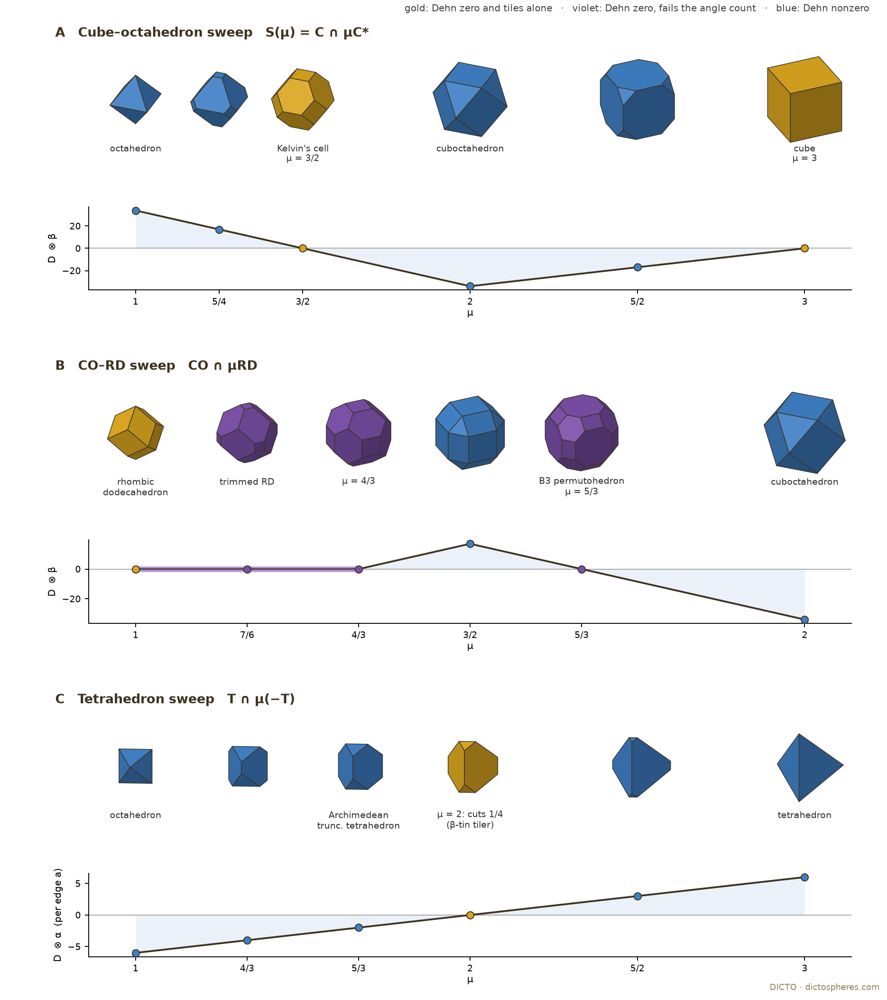
Figure 1.1. The three sweeps and their exact Dehn lines (Theorems 1.1, 1.2 and Proposition 1.3). Each row shows members of the sweep at the values of μ marked on the axis below, and the coefficient of the Dehn invariant against β (rows A and B, cube of side 2) or against α per unit edge (row C). Gold: Dehn zero and tiles space alone (the octahedron–cube sweep's Kelvin cell and cube; the rhombic dodecahedron; the β-tin piece at μ = 2). Violet: Dehn zero but ruled out by the angle count (the cube-trimmed rhombic dodecahedra 1 < μ ≤ 4/3, drawn at 7/6 and 4/3, and the B3 permutohedron at 5/3). Blue: Dehn nonzero. The render script recomputes the Dehn coefficient of every drawn solid from its hull and checks it against the formulas.
Known. The tiling by this truncated tetrahedron is known: Damasceno, Engel and Glotzer (2012) found it as the β-tin structure among the dense packings of a family of truncated tetrahedra, and Gabbrielli, Jiao and Torquato (2012, Figure 15) describe it by "chopping the four corners" at edge 1/4, each piece containing 20 tetrahedra and 10 octahedra of the octet. New here: that on all three sweeps the Dehn test alone picks out exactly the members that tile (with the angle count for the stretch and the B3 permutohedron of the CO–RD sweep); and the exact Dehn lines of Theorems 1.1 and 1.2.
Remark (the sweep's other measures). On the same tetrahedron sweep the roundness V²/A³ is largest exactly at the octahedron, and the Mahler volume is 4(μ³ − 9μ² + 27μ − 11)/(3μ) for 1 ≤ μ ≤ 3, largest at μ* = (11 − √33)/4 ≈ 1.3139, where it is ≈ 11.3723 (study 2026-11-04-tetra-sweep, part 1). These are not space-filling results; their home is the roundness and Mahler thread of #94's next version.
5. What is known, and what is new
Known, credited: the Dehn invariant (Dehn 1901), Debrunner's theorem (1980), Sydler's theorem (1965); the tilings by Kelvin's cell, the cube and the RD; the β-tin tiling by T(4) minus its corners (Damasceno–Engel–Glotzer 2012; Gabbrielli–Jiao–Torquato 2012). DICTO's earlier work, cited: the sweeps (#90, #94); the weight shapes (The Golden Ladder, Chapter 2). New here: Theorems 1.1 and 1.2 with their exact Dehn lines; the identification of the CO–RD sweep's lone Dehn-zero solid as the B3 permutohedron and the proof that it cannot tile alone; that the cube-trimmed RDs are Dehn-zero but cannot tile alone.
Sources checked: the studies' own tables (standard dihedral tables of the Platonic and Catalan solids, 2026-11-04-rt-pyramids); the reference library entries Damasceno, Engel and Glotzer (2012) and Gabbrielli, Jiao and Torquato (2012), read for the β-tin tiling (2026-11-04-tetra-sweep, part 2); Conway, Radin and Sadun (1999), in the library, for the irrationality of the angles. No search was made for earlier statements of Theorems 1.1 and 1.2 beyond these.
Study: studies/2026-11-04-rt-pyramids (README, section "Space-filling (Dehn) test on the sweeps' own solids"); studies/2026-11-04-tetra-sweep (scripts/measures.py, data/measures.json); the Concordance grid, row "CO–RD sweep", column "Dehn", corrected 4 November 2026.
Chapter 2 · Truncated Tetrahedra That Fill Space: Dehn Zero Is the Octet's Own Ratio
A tetrahedron with its four corners cut off has Dehn invariant zero exactly when the four cuts add up to one edge; for cuts by whole layers of the octet this is the same as keeping the octet's two tetrahedra to every octahedron, and every such piece we could test fills space, two to a period
First published as #100, The Dehn Test Picks the Lone Tilers: Sweeps and Truncated Tetrahedra That Fill Space, DICTO DOI 10.5281/zenodo.24030326, together with Chapter 1. #100 is the record.
The recorded gaps of the Concordance are filled with a combination of new and current methods; the tetrahedron sweep was the row of its grid with only the harmonic test (#94's harmonic fingerprint: the strengths Ql of the corner directions expanded in spherical harmonics, the bond-orientational order of Steinhardt, Nelson and Ronchetti) filled.
Cut the four corners off a tetrahedron, each by its own amount. Almost every such piece is ruled out as a lone space-filler by Dehn's test. The pieces that pass are exactly those whose four cuts add up to one edge, and the same pieces, when they are built from the octet's own small tetrahedra and octahedra, are exactly those that keep the octet's balance of two to one. Every one we could test fills space.
1. Every corner cut
Let T be a regular tetrahedron of edge a and c = (c1, c2, c3, c4) cut fractions, ci ≥ 0 and ci + cj ≤ 1 (cuts may meet on an edge but not overlap). Pc is T with the corner tetrahedron of edge cia removed at corner i.
Proposition 2.1. D(Pc) = 6a (1 − c1 − c2 − c3 − c4) ⊗ α. So Pc is Dehn-zero exactly when Σci = 1.
Proof. The edge between corners i and j keeps length (1 − ci − cj)a and dihedral α. The cut triangle at corner i has three edges of length cia, each against a face through corner i, with dihedral π − α (the cut is parallel to the face opposite corner i). So D = a[Σi<j(1 − ci − cj) − 3Σci] ⊗ α = a(6 − 6Σci) ⊗ α, and α ∉ ℚπ. ∎
The sweep of Chapter 1 is the uniform case ci = t, which gives Proposition 1.3. The study states the family in a second form, which shows that it has one free parameter of position and none of shape.
Proposition 2.2 (one translation). Σci = 1 if and only if Pc = T ∩ (w + 2(−T)) for some translation w: every Dehn-zero truncated tetrahedron is the tetrahedron cut by the inverted tetrahedron of twice its size, placed so that each of its four faces cuts off a corner of T or passes through it.
Proof. Write T = {x : −vi·x ≤ 1}, with v1, …, v4 the corner directions, Σvi = 0 and |vi|² = 3, so that corner i is vi and vi·x runs from −1 on the opposite face to 3 at corner i. The cut at corner i is the plane vi·x ≤ μi with ci = (3 − μi)/4. The four cut planes bound {vi·x ≤ μi} = w + m(−T), where m = Σμi/4 and w solves vi·w = μi − m (solvable, because the four equations add up to 0 = 0 and any three vi are independent). And Σci = (12 − Σμi)/4 = 1 exactly when Σμi = 8, that is m = 2. ∎
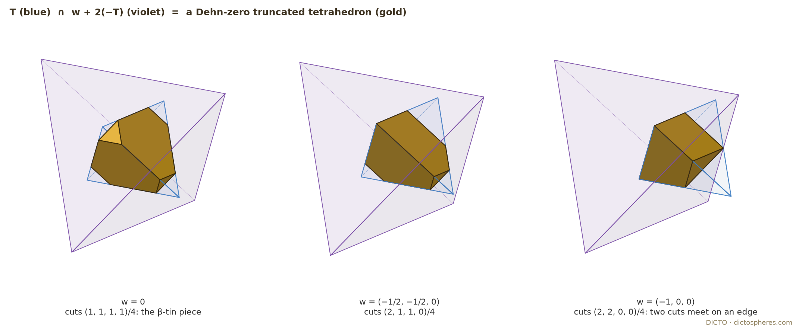
Figure 2.1. Proposition 2.2 at work. The tetrahedron T (blue, corners vi = (1, 1, 1), (1, −1, −1), (−1, 1, −1), (−1, −1, 1), edge 2√2) meets the inverted tetrahedron of twice its size, w + 2(−T) (violet), in a Dehn-zero truncated tetrahedron (gold). Left: w = 0 gives the uniform cuts 1/4, the β-tin piece. Middle: w = (−1/2, −1/2, 0) gives the cuts (2, 1, 1, 0)/4. Right: w = (−1, 0, 0) gives (2, 2, 0, 0)/4, whose two cuts meet on an edge. Moving the cutter changes the cuts but never their sum; the render script checks Σci = 1 and the volume (1 − Σci³) vol T for each panel.
2. Dehn zero is the octet's ratio
When a and the cuts are whole numbers, T(n) (edge n) is a union of the octet's cells of edge 1, and so is Pk = T(n) with corner tetrahedra T(ki) removed, Σki ≤ n, ki + kj ≤ n. The octet has exactly two tetrahedra for every octahedron, so a tiling by copies of an octet polyform that lies along the octet's cells needs that ratio in the piece.
Proposition 2.3 (density equals Dehn). Pk has n − Σki more tetrahedra than twice its octahedra. So the octet ratio 2 : 1 holds in Pk exactly when Σki = n, which is exactly when Pk is Dehn-zero.
Proof. T(m) consists of C(m + 2, 3) upward and C(m, 3) downward tetrahedra and C(m + 1, 3) octahedra, so its excess (tetrahedra minus twice the octahedra) is the second difference C(m + 2, 3) − 2C(m + 1, 3) + C(m, 3) = m. Excess is additive, so Pk has excess n − Σki. With ci = ki/n, Proposition 2.1 finishes. ∎
For the uniform cut (1, 1, 1, 1) the study noted this at n = 4: T(4) minus its corners is 20 tetrahedra and 10 octahedra, the counts of Gabbrielli, Jiao and Torquato. Proposition 2.3 is the same remark for every cut: the global test (Dehn) and the counting test (density) coincide on the whole family.
3. Every case tested tiles
The Dehn-zero integer pieces with n ≤ 5 are the twelve partitions of n into two to four parts: (1, 1) at n = 2; (2, 1), (1, 1, 1) at n = 3; (3, 1), (2, 2), (2, 1, 1), (1, 1, 1, 1) at n = 4; (4, 1), (3, 2), (3, 1, 1), (2, 2, 1), (2, 1, 1, 1) at n = 5 (zeros omitted).
Theorem 2.4 (computer-checked, exact cover). Each of the twelve Dehn-zero integer truncations Pk with n ≤ 5, and P(5,3,0,0) at n = 8, tiles space periodically along the octet's cells. In every case the smallest period found holds two pieces, the piece and its point inverse; no torus with one piece per period is tiled.
Proof (computation). For each piece, every orientation in the octet's symmetry group, and every period lattice of index N in the face-centred cubic lattice of the octet's corners (all Hermite normal forms, each fcc point carrying one octahedron and two tetrahedra), the exact cover problem "each cell of the torus in exactly one copy" is solved by the SAT solver CaDiCaL, starting at N = number of octahedra in the piece (one piece per period) and then at twice that. Every case has no solution at one piece per period and a solution at two (Table 2.1). The cells are exact, so a solution is a tiling, not an approximation. The method was calibrated on the two pieces tiled earlier by the exact-cover search, (1, 1, 1, 1) at N = 20 and (1, 1, 0, 0) at N = 2. As a second, geometric check, the (1, 1, 1, 1) tiling at N = 20 was built with real polytopes: 2 × 20 = 40 = the period's volume, no overlap among 18 489 nearby pairs, and every one of 15 512 random points within radius 5.9 in exactly one copy; the pieces (2, 1, 0, 0)/3 and (1, 1, 1, 0)/3 passed the same check in their mirror-pair form (0 overlaps, 4000 of 4000 points covered once), and a deliberately wrong offset failed it (213 overlaps). ∎
n
cuts k
octahedra
tetrahedra
N (two pieces)
period (HNF)
2
(1, 1, 0, 0)
1
2
2
diag(1, 1, 2)
3
(2, 1, 0, 0)
3
6
6
diag(1, 2, 3)
3
(1, 1, 1, 0)
4
8
8
diag(2, 2, 2)
4
(3, 1, 0, 0)
6
12
12
diag(1, 3, 4)
4
(2, 2, 0, 0)
8
16
16
diag(2, 2, 4)
4
(2, 1, 1, 0)
9
18
18
diag(2, 3, 3)
4
(1, 1, 1, 1)
10
20
20
[[10, 1, 4], [0, 2, 1], [0, 0, 1]]
5
(4, 1, 0, 0)
10
20
20
diag(1, 4, 5)
5
(3, 2, 0, 0)
15
30
30
diag(2, 3, 5)
5
(3, 1, 1, 0)
16
32
32
diag(2, 4, 4)
5
(2, 2, 1, 0)
18
36
36
diag(3, 3, 4)
5
(2, 1, 1, 1)
19
38
38
[[19, 3, 9], [0, 1, 0], [0, 0, 2]]
8
(5, 3, 0, 0)
60
120
120
diag(3, 5, 8)
Table 2.1. The thirteen tilings. N is the index of the period lattice in the fcc lattice; N equals twice the number of octahedra, so each period holds two pieces. The patches of radius 7.2 to 12 close for every n ≤ 5 piece as well (SAT patch test). Data: studies/2026-11-04-tetra-sweep, census-sat.log, satper-1.log, satper-2.log (study data), census-n4.log, tiling-N20.json, verify-real.log.
Figure 2.2. The thirteen pieces of Theorem 2.4, each drawn inside its tetrahedron T(n) (blue outline) and scaled to the same size; the thin lines on the faces are the octet's planes, so the triangles of edge 1 that build each piece show. Under each: the cuts k, the octahedra and tetrahedra in the piece (always one to two, Proposition 2.3), and the index N of the smallest period found, which holds two pieces. The cuts are drawn on the corners nearest the viewer, largest first. (1, 1, 0, 0) at n = 2 and (2, 2, 0, 0) at n = 4 are the same solid at two sizes against the octet. The render script recounts the cells of every piece and checks them against Table 2.1.Figure 2.3. One of the new tilings: the piece with cuts (1, 1, 1, 0) at n = 3, one corner left sharp. Left: the piece (gold) and its partner (violet), the mirror image σzP shifted by w = b1/3, which is a turned copy of the piece's point inverse. Right: a patch of the tiling pulled apart from its centre; one piece and its partner solid, their neighbours as glass. Period: index N = 8 (Table 2.1). Built exactly as in the study's real-polytope check (scripts/verify_real.py; verify-real.log: 0 overlaps among 31 138 pairs, 4000 of 4000 points covered once); the render script checks again that all of 6000 random points lie in exactly one copy.
Conjecture 2.5. Every Dehn-zero truncated tetrahedron with rational cuts tiles space, as the piece together with its point inverse, two to a period.
For irrational cuts the question stays open, and the first construction tried does not settle it. The study tried one uniform mirror-pair rule, P together with its mirror image σzP shifted by w on the lattice B·diag(1 − c1, 1 − c2, 1 − c3), which works for the integer cuts at their own offsets. For the golden cut (φ−1, φ−2, 0, 0) at w = 0 it fails (436 overlapping pairs of 41 412; 388 of 4000 points uncovered). The scan over other offsets has no recorded result. So the conjecture is stated for rational cuts only. A proof would need one construction that works continuously in the translation w of Proposition 2.2; the solver's periods (Table 2.1) do not yet show one.
4. The golden members
The next pieces to try are those with golden cuts. This section gives only the finished part of that study, the exact list.
Proposition 2.6 (golden Dehn-zero cuts). Among cut vectors with every ci in {0, φ−1, φ−2, …, φ−8} and at least two cuts nonzero, those with Σci = 1 and ci + cj ≤ 1 are exactly the seven of Table 2.2, up to the order of the corners.
Proof (exact computation). Every combination with repetition of four values from the list is summed and compared in ℤ[φ], written a + bφ with φ² = φ + 1, so no floating point is used; the condition ci + cj ≤ 1 is decided exactly by comparing b√5 with an integer. Each sum can be checked by hand from φ−k + φ−k−1 = φ−k+1. ∎
Table 2.2. The seven golden Dehn-zero truncated tetrahedra, with Fibonacci approximants (φ−j ≈ Fm−j/Fm, chosen so that the k add up exactly to n = Fm). Piece 1 has 11 corners, because its two cuts meet on an edge (φ−1 + φ−2 = 1); the others have 12. Data: studies/2026-11-04-tetra-sweep/data/golden-cuts.json, scripts/golden_cuts.py.
Six of the seven have small approximants that tile, and piece 1 has three in a row. That is evidence, not a result: whether a golden piece itself tiles is not decided. The earlier patch searches on these approximants timed out (census-golden.log) before the SAT method replaced them, and the one construction tried on the real golden cut fails (Section 3). None of the seven is harmonically silent: in #94's fingerprint each has Q3, Q4, Q6, Q8 all nonzero (golden-harmonic.json), so the harmonic test gives no further clue.
5. What is known, and what is new
Known, credited: the uniform member and its tiling (Damasceno, Engel and Glotzer 2012; Gabbrielli, Jiao and Torquato 2012, Fig. 15, with its counts 20 and 10); the octet (Lagarias and Zong 2012). New here: Propositions 2.1 to 2.3 (the Dehn-zero family by its cut sum, by one translation of 2(−T), and by the octet ratio); the twelve tilings of Theorem 2.4 beyond the uniform one, and the thirteenth at n = 8; Conjecture 2.5; the list of seven golden pieces. In the sources checked, only the uniform cut 1/4 appears. Goldberg's lists of six-, seven- and eight-faced space-fillers (1976, 1977, 1978, 1981) were not available to us, so the family's members with those face counts are new only as far as the sources checked below show; any of them found in those lists will be credited to Goldberg in a later version.
Sources checked: reference library: Damasceno, Engel and Glotzer, ACS Nano 6 (2012) 609; Gabbrielli, Jiao and Torquato, Phys. Rev. E 86 (2012) 041141, both read (2026-11-04-tetra-sweep, part 2). Wider search (8 November 2026): Conway and Torquato, PNAS 103 (2006) 10612, and Jiao and Torquato, J. Chem. Phys. 135 (2011) 151101, treat Archimedean truncated tetrahedra only in tilings mixed with tetrahedra; de Graaf, van Roij and Dijkstra (2011, arXiv:1107.0603), packings only; MathWorld, "Space-Filling Polyhedron", and Wikipedia, "Truncated tetrahedron" and "Space-filling polyhedron", give the uniform member only; the triakis truncated tetrahedron and its honeycomb, a different cell; Debrunner (1980) and Lagarias and Moews (1995), the general theorem only; Sommerville, Baumgartner, Senechal (1981), and arXiv:2312.01654 and 2312.01282, tetrahedra only; the OEIS, no hit. None gives unequal cuts or ties a truncation to the Dehn invariant. Goldberg's catalogue of space-fillers by face count, in part: The space-filling pentahedra I and II (1972, 1974), read 8 November 2026; the family has no five-faced member, since a single cut adding up to one edge takes the whole tetrahedron, and his pentahedra are pieces of prisms, pyramids and tetrahedra. Grünbaum and Shephard, Tilings with congruent tiles (Bull. AMS 1980), read for its summary of Goldberg's lists to 1979: it names Föppl's 16-faced cell and no truncated tetrahedron with unequal cuts. Not yet read: Goldberg's Several new space-filling polyhedra (Geom. Dedicata 5, 1976), hexahedra (6, 1977), heptahedra (7, 1978) and octahedra (10, 1981), where the family's six-, seven- and eight-faced members could appear (status box).
Study: studies/2026-11-04-tetra-sweep (README: parts 1, 2 and "Reformulation"; scripts census.py, sat_periodic.py, verify_tiling.py, verify_real.py, golden_cuts.py, golden_harmonic.py); Concordance ledger, entries "Census", "SAT periodic test", "Periodic test", "CONJECTURE", "Uniform mirror-pair construction on REAL golden cuts".
Chapter 3 · One Move Each: Lattice Moves Build the Classical Space-Fillers
The regular-hexagon elongated dodecahedron, the Bain rhombic dodecahedron, the elongated dodecahedron as a type, the Bilinski dodecahedron and the 60° rhombohedron, known from cutting, gluing, zone removal or drawings, each come from one setting of Kaleidohedra's lattice moves, with exact corners, volumes and symmetry; with DICTO's skewed rhombic dodecahedron (F1), his route to the regular-hexagon elongated dodecahedron (F5) and his golden skewed elongated dodecahedra (F7)
First published as #50 (version 1), DICTO DOI 10.5281/zenodo.23606894, with DICTO's Kaleidohedra findings F1, F5 and F7 (DICTO DOI 10.5281/zenodo.23173809). Retold here in this book's story; the theorems and numbers are those of #50, which is the record.
Chapters 1 and 2 began with a solid and tested whether it fills space. This chapter begins with the filling. A lattice of points, each point with a cell around it, fills space by its nature; tilt the lattice, pick the cell whose edges are all equal, stretch it along one more direction, and the cell still fills space. Solids that the books build by cutting and gluing appear whole in the app Kaleidohedra, in which a lattice and its cell are moved by sliders, at one setting of its sliders, and the app rebuilds them exactly. Each classical space-filler below is one move each. The lattice move is the move of this book's title: it carries one filling into another, and it is a move, not a swap that undoes itself; no law is claimed for it.
1. Where it started
The regular-hexagon elongated dodecahedron has four regular hexagons, four squares and four 60° rhombi. Grünbaum draws it as the representative of Fedorov's elongated dodecahedron (Grünbaum 2010, Fig. 2(b), p. 4); Wikipedia describes it as a contraction of the uniform truncated octahedron. DICTO reached it on 1 October 2026 by another road, in Kaleidohedra: the equal-edged cell at the Bain stop of the lattice (the shear diag(1, 1, √2) of Table 3.1), stretched along one more direction (Kaleidohedra finding F5). From these "perfect hexagons" came the idea, on 22 October 2026, that the same three moves rebuild exactly the space-fillers which the literature gives only as a recipe of cutting and gluing, and that each should come with its exact corners, its exact settings and a proof. A search of the reference library chose the cases: shapes that the library describes only by dissection, zone removal or a drawing, and that Kaleidohedra reaches.
The moves themselves are not new, and they are fully credited. Fedorov wrote in 1885 that by shears and stretches the cube becomes any parallelepiped (his Theorem 32), and that a parallelohedron so changed stays a parallelohedron (Fedorov 1885, p. 239); he shrank the edges of one zone to nothing to pass from the truncated octahedron to the elongated dodecahedron, and on to the hexagonal prism or the rhombic dodecahedron (§ 83, p. 234; both pages checked on the page images). The stretch is the addition of a segment (a Minkowski sum), in Delone's language a free direction (as stated in Garber 2019, Def. 2.13). What #50 adds is the exact data, the settings and the proofs; it complements those descriptions and does not correct them.
Figure 3.1. The regular-hexagon elongated dodecahedron (F5), edge 1, volume 4√2. Left: the Kaleidohedra cell (Bain shear, Cell = 1, stretch along (1, 0, 0) by 1); squares blue, 60° rhombi pink, regular hexagons gold. Right: the classical description, the uniform truncated octahedron with one of its six zones (purple) shrunk to nothing (Fedorov's zone shrinking, § 83). The two are congruent (corner matching, exact). From #50, Figure 1.
2. The three moves
A parallelohedron is a convex solid whose translates by the vectors of a lattice L tile space. The rhombic dodecahedron (RD) type is the zonohedron Z(h1, …, h4) = {Σ tihi : |ti| ≤ ½} of four vectors, no three in a plane; it tiles space by the lattice spanned by the differences hi − hj (Fedorov's ordinary hexaparallelohedron). Its four vectors satisfy one linear relation Σ μihi = 0; changing the signs of some hi (which does not change Z) makes every μi > 0. We call (μ1, …, μ4), up to a common factor, the dependency of the cell. Kaleidohedra's moves on the face-centred cubic (FCC) lattice, whose cell is Kepler's rhombic dodecahedron with hi = ½(±1, ±1, ±1) (an even number of minus signs) and dependency (1, 1, 1, 1), are:
Shear. A linear map A of the lattice, set in the app by six sliders: the lengths a, b, c of a lattice basis and the angles α, β, γ between its vectors. It carries the cell to Z(Ah1, …, Ah4), which tiles the sheared lattice AL.
Cell. In the sheared lattice the four vectors may be shifted together, hi ↦ Ahi + w, without changing the differences, so every such cell tiles AL. Exactly one w gives four edges of equal length, the circumcentre of the points −Ahi; the slider value Cell = 1 is that cell, Cell = 0 the sheared original (Kaleidohedra finding F2).
Stretch. Add a fifth vector s·u, the Minkowski sum with a segment of length s along a unit direction u. Theorem 3.2 says which directions keep a space-filler.
Lemma 3.1 (tiling test; #50, Lemma 1). A centrally symmetric convex solid P tiles space by translations of a lattice L if its volume equals |det L| and no non-zero vector of L lies inside P − P = 2P.
Proof. The second condition says the translates P + v, v ∈ L, have disjoint interiors; with volume |det L| they fill a fundamental domain's volume exactly, so they leave no gap. ∎ The study checks both conditions exactly for every solid of this chapter, and in addition that each of the solid's face neighbours is a lattice translate.
3. Five classical space-fillers, one setting each
Theorem 3.1 (#50, Main theorem). Each solid in Table 3.1 is obtained exactly by the Kaleidohedra move in its row: the shear, then the equal-edged cell (where stated), then the stretch (where stated). It tiles space by translations of the moved lattice, its corners lie in the stated number field, and it is congruent, by an exact corner-matching test, to the classical construction in the last column. Its faces, symmetry and volume are as stated (all at edge 1, except where the edge is given).
rhombic dodecahedron cut at its equator, the halves capping a square prism (Wikipedia, Elongated dodecahedron)
Bilinski dodecahedron
FCC sliders with only γ moved from 60° to 36° (a = b = c, α = β = 60°, cos γ = φ/2); Cell = 1
12 golden rhombi; D2h
(4/5)√(5 + 2√5) ≈ 2.4621
triacontahedron with two zones deleted (Grünbaum, pp. 5–6, Fig. 4); glued from golden rhombohedra (Hafner and Zitko 2002)
60° rhombohedron
cube lattice sheared so that its edges meet at 60° (a = b = c, α = β = γ = 60°)
6 rhombi of 60°; D3d
1/√2 ≈ 0.7071
tetrahedron + octahedron + tetrahedron (Maurolico, 16th century, via Lagarias and Zong 2012, p. 1542)
Table 3.1. The five cases (#50, Table 1). φ = (1 + √5)/2. Corners in ℚ(√2) for the Bain cases and the 60° rhombohedron, ℚ(√3) for the classical elongated dodecahedron, ℚ(√5) for the Bilinski dodecahedron. Lattice angles such as γ are angles between basis vectors of the lattice, not face angles. Exact corners, lattice bases and maps: Appendix A of #50 and the study's data files.
Proof (as in #50). For each row the study replays the move from its exact parameters (the shear matrix, Cell, the stretch vector) and obtains the corners of a zonohedron Z with four or five generators; Z is closed, convex, wound outward, and satisfies Euler's formula, and its faces, edges and symmetry group are found from the exact corners. Z tiles space by Lemma 3.1: its volume equals |det L| for the moved lattice L, and no vector of L lies inside 2Z (all vectors with coefficients up to 2 in the basis are tested; a vector of L inside 2Z would have to be among them, since 2Z lies in that range). Congruence with the classical construction is tested by matching corners: every corner of one solid is paired with a corner of the other so that all distances agree, exactly. Where the classical construction is a gluing, the pieces are checked to be disjoint, to lie inside the solid, and to add up to its volume (cuboctahedron 5√2/3 and two pyramids √2/6; tetrahedra √2/12 and octahedron √2/3; for the elongated dodecahedron, two rhombic dodecahedron halves and a square prism). Where it is a zone operation, the zones of the uniform truncated octahedron (edge directions (0, ±1, ±1)/√2 and their permutations, scaled to edge 1) or of the triacontahedron are deleted and the result matched in the same way. All arithmetic is exact, in ℚ(√2), ℚ(√3) or ℚ(√5); nothing is decided by floating point. The study's check reads the data files alone and passes 223 of 223 checks; six kinds of deliberate corruption (a corner moved, a face reversed, a lattice vector doubled, a shear entry changed, a stored volume changed, a classical point moved) are each caught in every one of the nine solids, 54 of 54; and the app's own code (krp-core), set to the same slider values, gives the same cells, 12 of 12. ∎
Two further facts come out of the Bain rows. Shrinking the zone of the stretch direction in the regular-hexagon elongated dodecahedron gives back the Bain rhombic dodecahedron, and shrinking any one of the truncated octahedron's six zones gives the regular-hexagon elongated dodecahedron: Fedorov's chain truncated octahedron → elongated dodecahedron → rhombic dodecahedron (§ 83) read forwards, with exact data, is the stretch read backwards. Shrinking a pair of the truncated octahedron's zones at 60° to each other, instead of a perpendicular pair, gives a hexagonal prism, the other branch of Fedorov's chain. The regular-hexagon elongated dodecahedron is a perfect point of the moves: at this one setting every face is a regular polygon or, for the 60° rhombi, two equilateral triangles.
The simplest row shows the method in miniature. Shear the cube lattice to a = b = c = 1 and α = β = γ = 60°: the sheared cube lattice is the FCC lattice itself, and the sheared cube is the parallelepiped on the vectors (0, 1, 1)/√2, (1, 0, 1)/√2 and (1, 1, 0)/√2, six rhombi of 60°, symmetry D3d, volume 1/√2. It is congruent to Maurolico's two tetrahedra on opposite faces of an octahedron, whose pieces add up exactly: √2/12 + √2/3 + √2/12 = √2/2. Here the exact data are easy and standard; the example shows the method, not a gap filled.
Figure 3.2. The Bain rhombic dodecahedron, edge 1, volume 2√2. Left: the Kaleidohedra cell (Towards Bain stop 2, Cell = 1); squares blue, 60° rhombi pink. Middle: the cuboctahedron (gold) with two square pyramids (purple), shown apart. Right: the truncated octahedron with a perpendicular pair of zones (purple) to be shrunk (Fedorov, § 83). From #50, Figure 2.
4. The elongated dodecahedron as a type, and DICTO's golden stretches
A rhombic dodecahedron can be stretched into an elongated dodecahedron in exactly three directions, and in no other, if the result is still to fill space. So the elongated dodecahedron is not one shape but three stretches of every rhombic dodecahedron.
Theorem 3.2 (three free directions; #50, Theorem 2). Let Z = Z(h1, …, h4) be an RD-type cell with Σ μihi = 0, all μi > 0, and let u be a direction not parallel to any hi. Then Z + [0, s·u] (s > 0) is a parallelohedron if and only if u is parallel to one of the three vectors uij|kl = μihi + μjhj = −(μkhk + μlhl), one for each way of splitting the four vectors into two pairs; the line of uij|kl is where the plane of hi, hj meets the plane of hk, hl. For each of them, and every s > 0, it is an elongated dodecahedron (18 corners, 28 edges, 12 faces).
Proof. A convex solid tiles space by translation if and only if it is centrally symmetric, its faces are centrally symmetric, and its projection along each edge direction (each face of codimension 2) is a parallelogram or a centrally symmetric hexagon (Minkowski and Venkov, independently McMullen; stated in Garber 2019, § 2, p. 5). A zonohedron satisfies the first two. Its belt around a generator g has 2m faces, where m is the number of distinct planes through g spanned by g and another generator; the third condition asks m ≤ 3 for every g. Around hi, the other three h's already span three distinct planes (no three h's lie in a plane), so u must lie in one of them: u ∈ span(hi, hj(i)). Take i = 1 and j(1) = a, and let b, c be the other two indices. Around hb, u ∈ span(hb, hx), and x cannot be 1 or a, for then u would lie in two planes through h1 or through ha, and so be parallel to it. Hence x = c and u lies on the line span(h1, ha) ∩ span(hb, hc), which contains the non-zero vector μ1h1 + μaha = −(μbhb + μchc). Conversely, for u on that line every hi has u in one of its three planes, so its belt keeps 6 faces, and the h's lie in the two planes through u, so the new belt has 4 faces. Five generators with these belts give Fedorov's counts 18, 28, 12 (his elongated hexaparallelohedron, § 77, case 3). ∎ (If u is parallel to some hi, the stretch only lengthens that zone and the cell stays an RD type; Grünbaum, p. 5.)
The stretch is Delone's free direction, and the theorem follows directly from the Minkowski–Venkov conditions; #50 did not find it written out in the sources searched, and expects that it is known to specialists. On the plain FCC lattice (dependency (1, 1, 1, 1)) the three free lines are the three cube axes, and the stretch along (1, 0, 0) by the edge gives the equal-edged elongated dodecahedron of Table 3.1. On the Bain lattice two of the three free lines, (1, 0, 0) and (0, 1, 0), give the regular-hexagon elongated dodecahedron; the third, the stretched axis (0, 0, 1), gives a different equal-edged one with 8 rhombi of 60° and 4 hexagons with corners 135°, 135° and 90° (volume 2 + 2√2 at edge 1).
DICTO's skewed rhombic dodecahedron (F1). DICTO built it first in Zometool, before Kaleidohedra recorded it on 1 October 2026. Its four equal edge directions meet at 60° three times and at 72° three times, so its faces are 6 rhombi of 60° and 6 rhombi of 72°. It is the equal-edged cell of DICTO's skewed lattice (Towards DICTO FCC, stop 2), its volume is exactly φ², and its dependency is (φ, φ, 1, 1). The family it belongs to, skewed rhombic dodecahedra that tile space, is Fedorov's; this member, equal-edged with 60° and 72° rhombi, was not found in the literature checked for the Kaleidohedra record (Grünbaum 2010; Lalvani's patents US 5,623,790 and US 4,723,382), a new member of a known family.
DICTO's skewed elongated dodecahedra (F7). The three free lines of F1 meet the four edge directions at 60°, 60°, 36°, 36° (split 12|34), at 36°, 36°, 72°, 72° (14|23) and at 37.76°, 37.76°, 82.24°, 82.24° (13|24). The first two lie on two-fold axes of the icosahedron, the directions the skewed lattice is built from, and the third does not; this is why F7 has exactly two members. With s = 1 they are the two skewed elongated dodecahedra of F7, every edge 1, both of symmetry C2h: on 12|34, 4 rhombi of 60°, 4 rhombi of 72°, 2 hexagons with corners 144°, 144°, 72° and 2 regular hexagons, volume φ² + 2; on 14|23, 6 rhombi of 60°, 2 rhombi of 72° and 4 hexagons with corners 144°, 108°, 108°, volume φ³ + ½. Both tile space (Lemma 3.1, exact) and agree with the app's stored cells.
Figure 3.3. Left: DICTO's skewed rhombic dodecahedron (F1), 60° and 72° rhombi (pink), volume φ². Middle and right: the two stretches along free lines that are icosahedral two-fold axes (F7; the labels #16 and #18 are the rows of the Kaleidohedra target list): 12|34, volume φ² + 2, and 14|23, volume φ³ + ½. Rhombi pink, regular hexagons gold, other hexagons purple. Edge 1 throughout. From #50, Figure 4.
5. The Bilinski dodecahedron, and F1 as its linear image
Bilinski's dodecahedron, found in 1960, is known as what is left when you remove two belts from a 30-faced solid, or as a gluing of slanted bricks. In the app it is the ordinary face-centred cubic lattice with one angle changed, from 60° to 36°, and then the equal-edged cell.
Proposition 3.3 (#50, Proposition 3). (a) With the FCC sliders a = b = c, α = β = 60° and γ moved from 60° to 36° (cos γ = φ/2), Cell = 1 gives the Bilinski dodecahedron B exactly; its lattice has Gram matrix proportional to [[1, φ/2, ½], [φ/2, 1, ½], [½, ½, 1]]. (b) Cell = 1 is needed: at Cell = 0 the same sliders give a linear image of Kepler's rhombic dodecahedron, which is not B. (c) B is congruent to T with any two of its six zones deleted, for all 15 pairs, and is glued exactly from four golden rhombohedra, two acute and two obtuse, in two ways.
Proof. (a) and (c) are rows of the exact study: B is the zonohedron of four of the six five-fold vectors (0, ±1, φ), (±1, φ, 0), (φ, 0, ±1) (edge √(φ + 2), where its volume is 8 + 4√5 = 4φ³); the move from the sliders, the zone deletions and the gluings are each matched corner by corner, and the four pieces are congruent to Grünbaum's acute and obtuse rhombohedra Ha and Ho, of volume 2φ² and 2φ at that edge, adding to 2·2φ² + 2·2φ = 4φ³. The app reaches the setting directly: its angle slider runs from 20° to 150° in steps of 0.1°, so 36.0° is on its grid. (b) A linear map sends Z(h1, …, h4) to Z(Ah1, …, Ah4) with the same dependency, and the generators of an RD-type cell are its edge vectors, determined by the solid up to sign; so the dependency, up to a common factor and the order of its entries, is an affine invariant. Kepler's dodecahedron has (1, 1, 1, 1); for B, the four five-fold vectors satisfy φ, φ, 1, 1. The shear keeps (1, 1, 1, 1) at Cell = 0; the Cell move, which shifts all four vectors together, changes it. ∎
Here T is Kepler's rhombic triacontahedron. Part (b) agrees with Grünbaum, who shows that B is not affinely equivalent to Kepler's dodecahedron (pp. 6–7), and with his remark that B is affinely a Dirichlet–Voronoi tile of a lattice affine to the FCC lattice (pp. 8–9): in the move, the shear is that affinity, and Cell = 1 is what makes the tile B and not an image of Kepler's. Coxeter gives the triacontahedron as ten acute and ten obtuse golden rhombohedra (quoted by Senechal 2004); for B the sources searched give no number, and the study finds two of each.
Remark (DICTO's F1 and Bilinski's dodecahedron). F1 has the same dependency as B, (φ, φ, 1, 1) with matching order. A linear map sending three of B's edge vectors to the corresponding ones of F1 then sends the fourth too, so F1 is a linear image of B; the study stores the map exactly and checks that it carries B's fourteen corners onto F1's. F1 is not congruent to B (its faces are rhombi of 60° and 72°, not golden rhombi), and it is not an affine image of Kepler's dodecahedron: same affine class as Bilinski's, different shape. A search of the full texts of the reference library on 23 October 2026 found this relation stated nowhere; Lalvani's patents in the library have no text layer and were not searched.
Figure 3.4. The Bilinski dodecahedron. Left: the Kaleidohedra cell, FCC with γ = 36°, Cell = 1: twelve golden rhombi (pink), all edges equal. Middle: Kepler's triacontahedron with two zones (purple) to be deleted (Grünbaum, Fig. 4). Right: B glued from two acute golden rhombohedra (gold) and two obtuse ones (purple), shown apart. From #50, Figure 5.
6. What is known, and the status of each result
Known, credited. The moves: shear and stretch (Fedorov 1885, p. 239), zone shrinking (Fedorov, § 83, p. 234; zone deletion in Grünbaum 2010, p. 5), free directions (Delone, as stated in Garber 2019, Def. 2.13); the stretch as a Minkowski sum (as in #49, The Polyhedral Stretching Theorem, DICTO DOI 10.5281/zenodo.23566671). The shapes: the elongated dodecahedron (Fedorov, § 77); the regular-hexagon elongated dodecahedron (drawn by Grünbaum, Fig. 2(b), described by Wikipedia as a contraction of the truncated octahedron; its first describer was not traced); the Bain rhombic dodecahedron (Wikipedia's D4h form; first describer not traced; the lattice stretch is Bain's, 1924); the Bilinski dodecahedron (Bilinski 1960, via Grünbaum; gluing from rhombohedra: Hafner and Zitko 2002); the 60° rhombohedron and its gluing (Maurolico, via Lagarias and Zong 2012). The rhombic dodecahedron and the truncated octahedron already have exact coordinates in the library (Koca et al. 2015, § 3.3). DICTO's, from the Kaleidohedra record (DICTO DOI 10.5281/zenodo.23173809): F1, F2 (the equal-edged cell), F5 (DICTO's independent route to the regular-hexagon elongated dodecahedron, a known shape) and F7. Proved in #50: Theorem 3.1 (each case exactly, with the stated settings); Theorem 3.2; Proposition 3.3, including the two gluings of B from two acute and two obtuse golden rhombohedra. Checked by computer, exactly: all corners, volumes, symmetry groups, tilings and congruences (223 checks; 54 of 54 corruptions caught; 12 of 12 app cross-checks). Remark, not literature-checked beyond the library: F1 is a linear image of B. Not read: Bilinski's paper, which may give coordinates or a volume for B (none is compared here), and the first description of the Bain rhombic dodecahedron. Open: the catalogue of perfect points, the settings at which every face is regular; and which other space-fillers known only by dissection (for example the tetrahedra of Hill, Sommerville and Goldberg) are reached by the moves.
Sources checked (as in #50, Appendix B): the reference library DICTOR-Master/kaleidohedra-references, commit 0e08bdb, searched on 23 October 2026 in the full texts of its local sources, case-insensitive, for Sommerville, Goldberg, Hill, gyrobifastig, Bilinski, Delone or Delaunay, Minkowski, Vorono, Fedorov (and Fedoroff, Federov), elongated dodeca, zone, dissect, space-fill (space fill, spacefill, fill space, fills space, tile space, tiles space), rhomb and zona (Kepler, Latin), truncated octahedron, rhombic dodecahedron, cut, glue, stretch and shear; for the Remark of § 5 the same texts searched again on 23 October 2026 for Bilinski, B12 and "dodecahedron of the second kind", each hit read for affine or linear images, shears, skews, 60° or 72°, and for counts of rhombohedra in B. Not searched: page images without a text layer (Fedorov 1885, read through the chapter 13 translation and two checked pages, and the patents of Fuller, Snelson, Pearce, Baer, Hogan, Bergman and Lalvani) and link-only entries (Delone 1929 and McMullen 1980, cited through Garber). Outside the library: the Wikipedia pages Elongated dodecahedron and Rhombic dodecahedron (23 October 2026), Senechal's slides (2004) and Crossref for DOIs. The library sources whose text contains the search terms (55): Johannes Kepler (1619), Harmonices mundi libri V; E. S. Fedorov (1885), Elements of the Theory of Figures (Nachala ucheniya o figurah); M. Goldberg (1937), A class of multi-symmetric polyhedra; Haresh Lalvani (1990), Transformational part-count in layered octahedral-tetrahedral truss configurations (NASA TM-102635); P. W. Messer (1995), Stellations of the rhombic triacontahedron and beyond; T. C. Hales (1998), An overview of the Kepler conjecture; J. H. Conway, C. Radin, L. Sadun (1999), On angles whose squared trigonometric functions are rational; M. Baake (1999), A guide to mathematical quasicrystals; O. Ogievetsky, Z. Papadopolos (1999), On Quasiperiodic Space Tilings, Inflation and Dehn Invariants; U. Betke, M. Henk (1999), Densest lattice packings of 3-polytopes; Z. Papadopolos, O. Ogievetsky (1999), On Inflation Rules for Mosseri-Sadoc Tilings; Z. Papadopolos, O. Ogievetsky (1999), On quasiperiodic space tilings, inflation and Dehn invariants; R. V. Moody (2000), Model sets: a survey; I. Hafner, T. Zitko (2002), Rhombic polyhedra: from dissection of the cube to space filling with prolate rhombohedra and rhombic dodecahedra of the second kind; M. Senechal (2004), Donald and the golden rhombohedra; K. Bezdek, Z. Langi, M. Naszodi, P. Papez (2007), Ball-polyhedra; S. Kabai (2007), 54-Faced Space-Filling Polyhedron (Wolfram Demonstration; description and screenshot); S. Kabai (2007), Golden Octet Truss (Wolfram Demonstration; description and screenshot); S. Kabai (2008), A Rhombic Dodecahedron Made of Rhombic Triacontahedra (Wolfram Demonstration; description and screenshot); S. Kabai (2008), Relating a Rhombic Triacontahedron and a Rhombic Dodecahedron (Wolfram Demonstration; description and screenshot); M. Koca, M. Al-Ajmi, N. O. Koca (2009), Grand antiprism and quaternions; S. Torquato, Y. Jiao (2009), Dense packings of polyhedra: Platonic and Archimedean solids; B. Grünbaum (2010), The Bilinski dodecahedron, and assorted parallelohedra, zonohedra, monohedra, isozonohedra and otherhedra; P. Kramer (2010), Gateways towards quasicrystals; D. Frettlöh (2011), Icosahedral tilings in R3: the ABCK tilings (draft chapter); J. Koskinen (2011), Unusual tilings and transformations; J. de Graaf, R. van Roij, M. Dijkstra (2011), Dense regular packings of irregular non-convex particles; M. Koca, N. O. Koca, M. Al-Ajmi (2011), Branching of the W(H4) polytopes and their dual polytopes under the Coxeter groups W(A4) and W(H3) represented by quaternions; M. Koca, N. O. Koca, M. Al-Barwani (2011), Snub 24-cell derived from the Coxeter-Weyl group W(D4); A. Garber, A. Gavrilyuk, A. Magazinov (2012), The Voronoi conjecture for parallelohedra with simply connected delta-surface; J. C. Lagarias, C. Zong (2012), Mysteries in packing regular tetrahedra; M. Baake, U. Grimm (2012), Mathematical diffraction of aperiodic structures; M. Koca, N. O. Koca, R. Koc (2012), Affine Coxeter group Wa(A4), quaternions, and decagonal quasicrystals; P. F. Damasceno, M. Engel, S. C. Glotzer (2012), Crystalline assemblies and densest packings of a family of truncated tetrahedra and the role of directional entropic forces; R. Gabbrielli, Y. Jiao, S. Torquato (2012), Families of tessellations of space by elementary polyhedra via retessellations of face-centered-cubic and related tilings; S. Torquato, Y. Jiao (2012), Organizing principles for dense packings of nonspherical hard particles: not all shapes are created equal; N. Fujita, H. Takano, A. Yamamoto, A.-P. Tsai (2013), Cluster packing geometry for Al-based F-type icosahedral alloys; M. Baake, D. Damanik, U. Grimm (2015), What is aperiodic order?; N. O. Koca, M. Koca, A. Al-Mukhaini, A. Al-Qanobi (2015), Quaternionic representations of the pyritohedral group, related polyhedra and lattices; S. Kabai (2015), Cluster of 14 Rhombic Triacontahedra (Wolfram Demonstration; description and screenshot); A. T. Cadotte, J. Dshemuchadse, P. F. Damasceno, R. S. Newman, S. C. Glotzer (2016), Self-assembly of a space-tessellating structure in the binary system of hard tetrahedra and octahedra; C. Hann, J. E. S. Socolar, P. J. Steinhardt (2016), Local growth of icosahedral quasicrystalline tilings; R. M. K. Dietl, J.-H. Eschenburg (2016), The icosahedral quasiperiodic tiling and its self-similarity; A. Garber (2019), Voronoi conjecture for five-dimensional parallelohedra; A. Al-Siyabi, N. O. Koca, M. Koca (2020), Icosahedral polyhedra from D6 lattice and Danzer's ABCK tiling; M. Koca, R. Koc, N. O. Koca, A. Al-Siyabi (2020), Icosahedral tiling with dodecahedral structures; N. O. Koca, R. Koc, M. Koca, A. Al-Siyabi (2020), Dodecahedral Structures with Mosseri-Sadoc Tiles; V. R. Krishnamurthy, E. Akleman, S. G. Subramanian et al. (2020), Bi-axial woven tiles: interlocking space-filling shapes based on symmetries of bi-axial weaving patterns; V. R. Krishnamurthy, E. Akleman, S. G. Subramanian, M. Ebert, J. Cui, C. Fu, C. Starrett (2022), Geometrically interlocking space-filling tiling based on fabric weaves; R. Akpanya et al. (2024), Topologically interlocking blocks inside the tetroctahedrille; M. Kovačević (2026), An isodiametric theorem and lattice diameter-perfect codes in A3; R. Al Raisi, N. O. Koca, M. Koca, R. Koc (2026), Modified Mosseri-Sadoc tiles from D6; Wikipedia contributors (2026), Fullerene; Wikipedia contributors (2026), Goldberg polyhedron; Wikipedia contributors (2026), Tetrahedral-octahedral honeycomb (incl. the gyrated form). For F1 and F7, the Kaleidohedra record's literature checks of 1, 6 and 9 October 2026: Wikipedia, MathWorld, the Polytope Wiki, George Hart's zonohedra pages, Grünbaum (2010), Lalvani's patents US 5,623,790 (1997) and US 4,723,382 (1988), and the contents of Hart and Picciotto's Zome Geometry.
Study: studies/2026-10-23-exact-vs-dissection (exact.py; build.py, 93 of 93 build checks; check.py, 223 of 223 and the 54 corruptions, log check.log; app_crosscheck.mjs, krp-core at commit e5e5dbc, 12 of 12; render.py, the figures; data/*.json, one file per solid), attached to #50 as exact-vs-dissection-study-bdc063d.zip.
Chapter 4 · Blocks of Thirteen: A Cell and Its Twelve Neighbours Fill Space Alone
A rhombic dodecahedron with its twelve face neighbours fills space by translation alone, 8 of the 183 index-13 sublattices of the face-centred cubic lattice working, all turns of one block; DICTO's Spheroid-13 RD rounds that block around a true rhombic dodecahedron and keeps the tiling; and the seven periodic thirteens of DICTO ATOM-13×13 are one tiling in seven shapes
First published as #25, DICTO Spheroid-13 RD (version 3), DICTO DOI 10.5281/zenodo.23332821, and, for its periodic half, as #26, DICTO ATOM-13×13 (version 3), DICTO DOI 10.5281/zenodo.23333183. Retold here in this book's story; the theorems and numbers are those of #25 and #26, which are the record.
Chapter 3 moved the lattice, and its cell changed shape with it. This chapter keeps the lattice and enlarges the cell instead: for a sublattice holding one point in thirteen of the face-centred cubic lattice, the cell can be a block of thirteen rhombic dodecahedra. Twelve equal balls can touch a thirteenth and no more. In the face-centred cubic honeycomb the same twelve-round-one is a cell and its twelve face neighbours: a block of thirteen rhombic dodecahedra. That block is a solid of its own, and it fills space alone, by translation, as one brick. This chapter shows why, how the block can be rounded about a true rhombic dodecahedron without losing the tiling (the DICTO Spheroid-13 RD), and why seven different periodic thirteens are all the same tiling.
1. The thirteen fills space
Take the FCC lattice as the integer points with even coordinate sum; neighbours are √2 apart and each Voronoi cell, a rhombic dodecahedron, has volume 2.
Theorem 4.1 (#25, § 1). A rhombic dodecahedron with its twelve face neighbours, thirteen cells of the face-centred cubic (FCC) honeycomb, fills space by translation alone: of the 183 sublattices of index 13 in the FCC lattice, exactly 8 have the thirteen lattice points as a complete set of representatives, and the 8 are turns of one arrangement, with block translations of length √10 (neighbour spacing √2).
Proof (as in #25). A block of 13 cells, a centre and its twelve neighbours, fills space by translations exactly when its 13 lattice points are a complete set of representatives of a sublattice of index 13. Since 13 is prime, every such sublattice is the kernel of x ↦ w·x mod 13 for some w ≠ 0 (in lattice coordinates), 183 in all up to scale; for exactly 8 the thirteen values are distinct. The 8 sublattices are carried into one another by the 24 turns of the cube, so the tiling is one arrangement in eight orientations, with no left- and right-handed forms. One of them has basis (−3, 0, 1), (0, −1, 3), (1, −3, 0) and Gram matrix [[10, 3, −3], [3, 10, 3], [−3, 3, 10]], covolume 26; its shortest vectors are 6 of length √10, then 2 of √12 (along a three-fold axis) and 6 of √14. The cube symmetries that keep it, the point group of the tiling, have order 6: three turns about that axis and the inversion. ∎ It is the three-dimensional counterpart of the seven-hexagon flower tiling of the plane.
Known. This tiling is known in coding theory. The FCC lattice is the root lattice A₃, and a lattice tiling by a point and its nearest neighbours is a radius-one perfect code: Kovačević and Tan (2018) construct such tilings of Aₙ in every prime-power dimension, and Kovačević (2026) gives the three-dimensional one explicitly as {x : x₁ + 3x₂ + 9x₃ ≡ 0 (mod 13)}, the block lattice above (w = (1, 3, 9)). The weights explain why it works: 0, 1, 3, 9 is Singer's perfect difference set modulo 13 (Singer 1938), from the projective plane of order 3 with its 13 points and 13 lines; every nonzero residue is a difference of two of them exactly once, so the thirteen lattice points of a block fall into the thirteen classes one each. The count of 8 sublattices and their equivalence under the cube's turns are checked in #25.
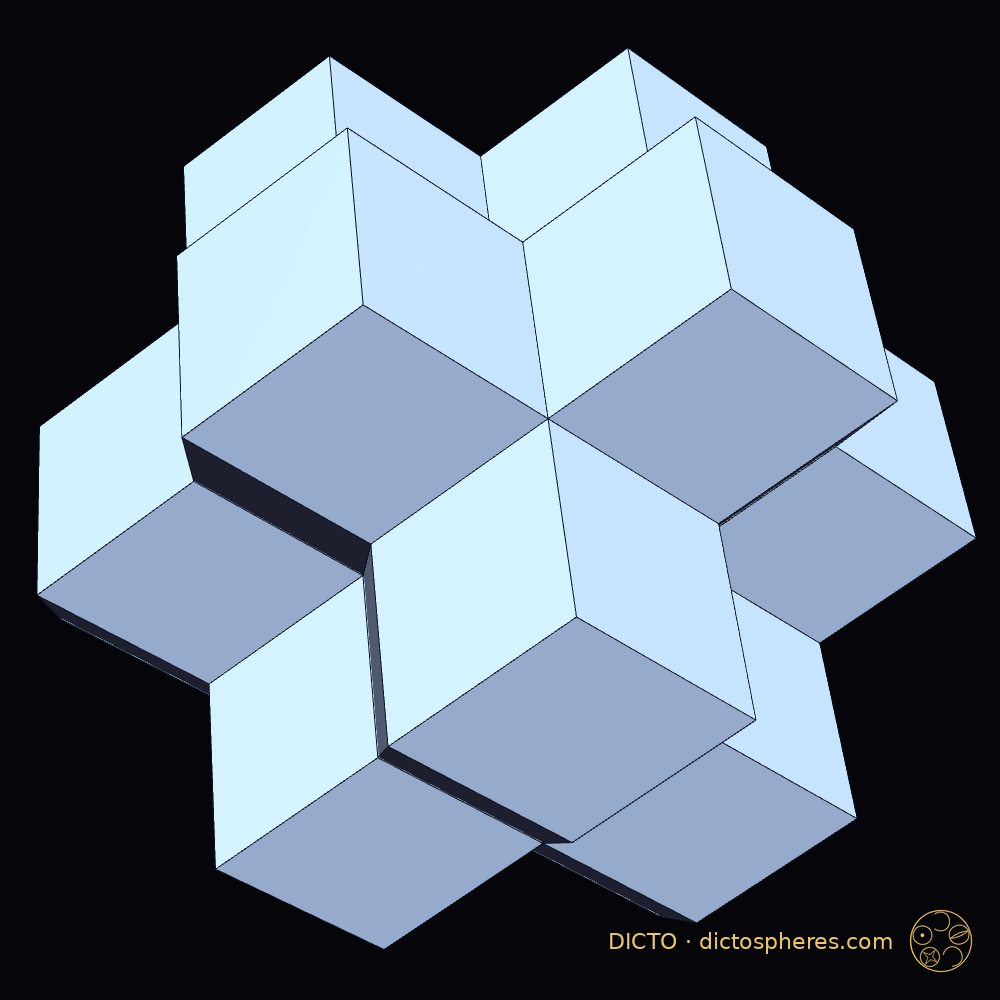
Figure 4.1. The plain thirteen rhombic dodecahedra, and the DICTO Spheroid-13 RD (thickness 0.15): the true rhombic dodecahedron at the centre gold, the two outer kinds green and blue. From #25, Figure 1.
2. The DICTO Spheroid-13 RD: rounded, keyed, a true rhombic dodecahedron at the heart
The aim for the block is a rounded quality: a block that reads as one rounded form, as the DICTO Hexa (a cube of eight overlapping carved dodecahedra, Chapter 7) reads as one block, with its outside still keyed, and with a true rhombic dodecahedron at its centre. To realise it, every corner of the honeycomb was given a displacement depending only on its class modulo the block lattice (39 classes), so a corner shared by two blocks moves once and the blocks still tile exactly. The centre's fourteen corners are not free: they follow from two numbers, its size s and its middle, so it stays an exact rhombic dodecahedron, s times a lattice cell. Constraints: every face stays flat (four corners coplanar), and every cell stays convex with each corner at least a set thickness inside the plane of each face not containing it. Objective: the block's outer surface, which at fixed volume 26 is the same as maximising roundness 36πV²/S³. Sequential quadratic programming from five small random starts reached the same block at every thickness.
Result 4.2 (#25, §§ 2–5; computed). Keeping the tiling of Theorem 4.1, the block can be reshaped so that its centre stays a true rhombic dodecahedron, only larger, and the twelve cells around it, moved corner class by corner class and the same in every block, have every face flat and every cell convex with a minimum thickness. At minimum thickness 0.15 its roundness 36πV²/S³ is 0.707 (the plain block 0.365, a single rhombic dodecahedron 0.741, and the block lattice's Voronoi cell, the roundest single tile with these translations, 0.748), with a centre 1.525 times the size of the lattice's own cells. The block has the tiling's full symmetry (order 6), so it uses three piece shapes: the centre and two outer kinds of six, each three pieces and their mirror images. Each block meets 14 others across all 84 of its outer faces; the centres never meet.
Minimum thickness
Outer surface
Roundness
Centre
Centre volume
Outer volumes (A / B)
Of its hull
plain
59.3970
0.365
× 1
2
2 / 2
0.672
0.08
47.0285
0.735
× 1.589
8.03
1.72 / 1.28
—
0.15
47.6397
0.707
× 1.525
7.10
1.78 / 1.37
0.886
0.25
48.8894
0.654
× 1.433
5.89
1.85 / 1.51
—
0.35
50.5260
0.593
× 1.342
4.84
1.90 / 1.63
0.793
Table 4.1. The block at four thicknesses (#25, § 2). For comparison, the block lattice's Voronoi cell, the roundest convex tile with these translations, has 14 faces, surface 46.7464 and roundness 0.748; at thickness 0.08 the keyed block comes within 0.6% of its surface. 0.15 (the main block) and 0.35 (the fattest outer pieces) are the two forms used here.
The pieces. Every piece keeps the rhombic dodecahedron's combinatorics, 14 corners and 12 four-sided faces. At thickness 0.15 the centre has volume 7.0959 (dihedral angles all 120°), outer A 1.7801 (dihedral angles 88.7°–163.4°) and outer B 1.3706 (78.1°–162.3°), three of each and their mirror images; at 0.35, 4.8351, 1.8952 and 1.6323. How the blocks meet. Inside a block 36 faces are shared: the centre's 12 with the twelve, and 24 among the twelve (the cuboctahedron's edges). All 84 outer faces lie against neighbouring blocks: 54 against the six nearest blocks (√10 away), 12 against the two along the three-fold axis (√12) and 18 against six more (√14), the same 14 neighbours as the lattice's 14-faced Voronoi cell. All 84 outer faces belong to outer pieces, so the outer pieces of all blocks form one connected keyed network around the islands of the centres.
Two fillings, one inside the other. As a true rhombic dodecahedron, the centre is itself one of Fedorov's five parallelohedra: taken out, it would fill space on its own too, as the FCC honeycomb at 1.525 times the scale. So the Spheroid-13 RD holds two space-fillings, one inside the other: the block of thirteen, and at its heart the cell the whole lattice is made of. If the centre too is left free to reshape (the variant), the block gains at most 0.01 in roundness (0.739, 0.715, 0.664, 0.600 at the four thicknesses), but the free centre's faces miss being parallelograms by about 1.5% of an edge, so taken out it is not a parallelohedron. The true rhombic dodecahedron is the main form.
Checks (#25, § 7). The 13 lattice points are distinct modulo each of the 8 sublattices and coincide modulo the other 175. In every block, faces are flat to 10⁻¹³ and the thirteen volumes sum to 26 exactly; the centre's corners are exactly s times a lattice cell's about its middle; every corner class moves once, so blocks tile; the block is invariant under the six symmetries; all 84 outer faces are matched by faces of neighbouring blocks. Five starts agree at each thickness; 40 further starts with random nudges three to seven times larger, at thickness 0.15 and 0.35, gave the same block every one of the 27 times they converged (the other 13, started far outside the constraints, did not converge), so no rounder valid block was found. Printable A4 nets for every piece (fifteen sheets) come with #25.
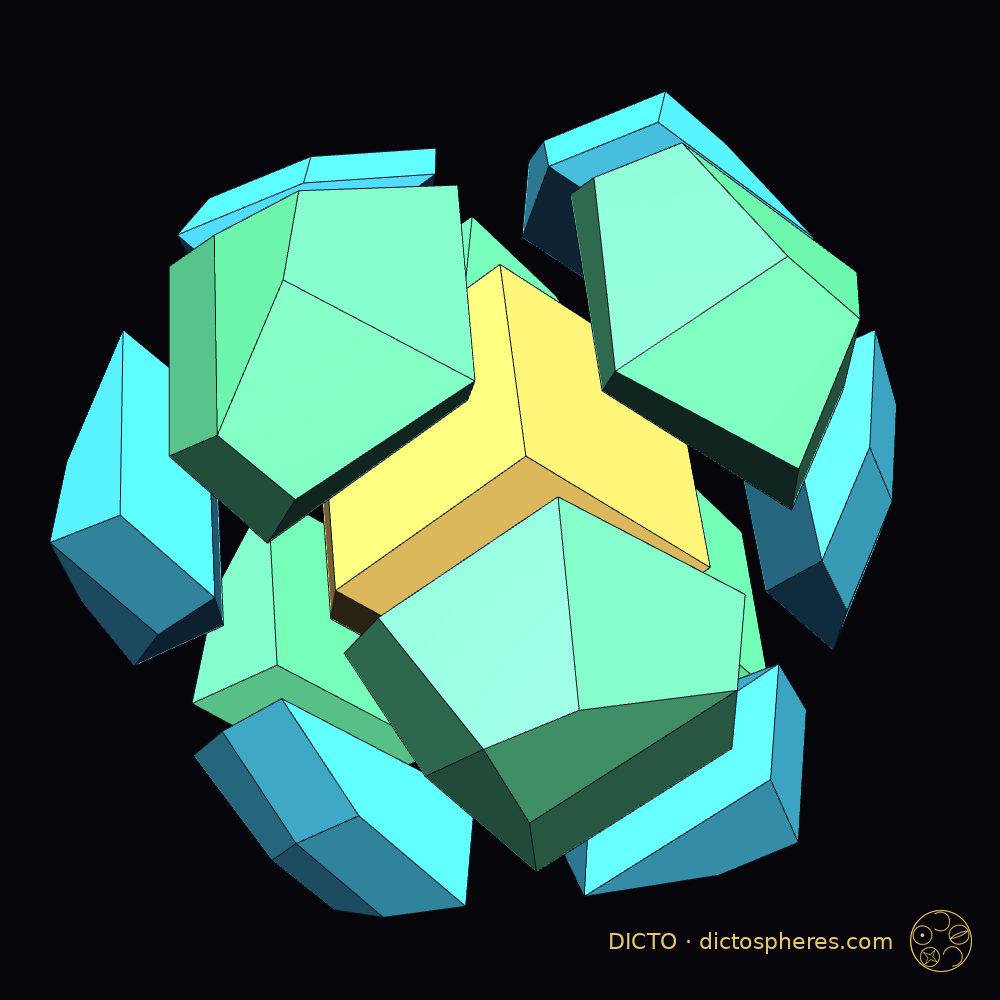
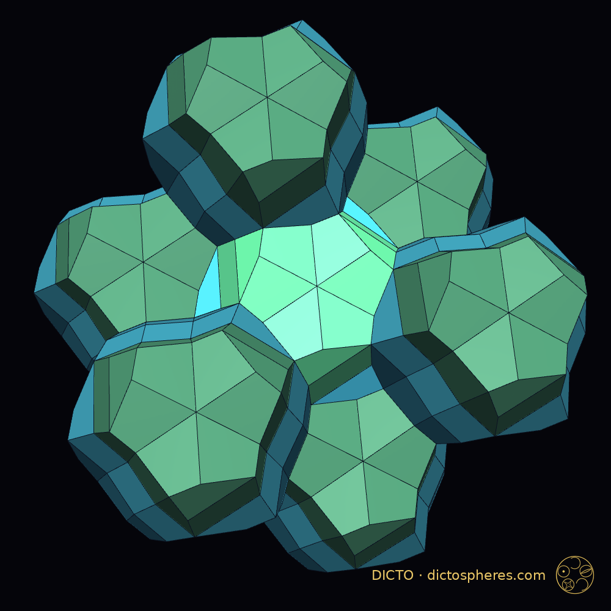
Figure 4.2. Left: the block pulled apart, the rhombic dodecahedron at its heart. Right: seven blocks filling space, keyed (the six nearest neighbours dimmed). From #25, Figures 2 and 3.
3. Seven periodic thirteens, one tiling
DICTO ATOM-13×13 sets thirteen polyhedral thirteens side by side, each a centre and twelve around it. Seven are periodic, a cell and twelve face neighbours in a honeycomb: the rhombic dodecahedron (RD 13, with its rounded form the Spheroid-13 RD), DICTO's skewed RD (F1 of Chapter 3, the equal-edged cell with six 60° and six 72° rhombi), the Bain RD, the golden Bilinski dodecahedron, the regular-hexagon elongated dodecahedron, the truncated octahedron (4 + 5 + 4, the centre seen through two square windows) and the DICTO Jewel (Euclid's dodecahedron carved by its neighbours' stella octangulas, set with those stella octangulas; Chapter 5). Five of them are cells of Chapter 3's moves.
Periodic thirteen
Cells
Distance centre–twelve
Centre–twelve
Among the twelve
Of its hull
RD 13
rhombic dodecahedra
√2
12
24 by a face, 12 at a corner
0.672
DICTO skewed RD 13
DICTO skewed rhombic dodecahedra
1.1756–1.7321
12
24 by a face, 12 at a corner
0.672
Bain RD 13
Bain rhombic dodecahedra
1.4142–1.7321
12
24 by a face, 12 at a corner
0.672
Bilinski 13
Bilinski dodecahedra (golden rhombi)
1.0515–1.7013
12
24 by a face, 12 at a corner
0.672
Regular-hexagon ED 13
regular-hexagon elongated dodecahedra
1.7321–2.4495
12 (4 across hexagons)
24 by a face, 8 along an edge
0.690
Truncated octahedron 13
truncated octahedra, 4 + 5 + 4
2.4495–2.8284
12 (8 hexagons, 4 squares)
28 by a face
0.719
DICTO Jewel 13
DICTO Jewels (and 6 stella octangulas)
2.2882
12, window to window
24 by a face
0.557 / 0.642
Table 4.2. The seven periodic thirteens (#26, §§ 1–2); all twelve meet the centre by a whole face. "Of its hull" is the block's volume over that of its convex hull; for the Jewel 13, alone (13 pieces, 82.6033) and with its 6 stellas (19 pieces, 95.3115).
Theorem 4.3 (#26, § 3). Every periodic block fills space by translation alone, and all seven are the same tiling in different shapes: under a linear change of coordinates each neighbourhood is the face-centred cubic one, whose radius-one perfect code is known (Kovačević and Tan 2018; explicitly x₁ + 3x₂ + 9x₃ ≡ 0 mod 13, Kovačević 2026), its weights Singer's difference set {0, 1, 3, 9} mod 13 (Singer 1938).
Proof sketch (as in #26). A cell of a lattice honeycomb and its twelve face neighbours fill space by translation exactly when the thirteen lattice points are a complete set of representatives of a sublattice of index 13. For every periodic member, 8 of the 183 such sublattices work, and seven blocks were checked free of overlap (20,000 samples, no point in two cells). The reason is shared: under a linear change of coordinates, the twelve neighbours of the rhombic dodecahedron, of the skewed RD, the Bain RD and the Bilinski dodecahedron, of the regular-hexagon elongated dodecahedron, and of the truncated octahedron's 4 + 5 + 4 are all exactly the twelve neighbours of the face-centred cubic lattice (each equivalence found as an explicit integer matrix), and the Jewels sit on that lattice itself. So Theorem 4.1 applies to each. The DICTO Jewel 13 blocks cover the Jewel sites of the Stella–Jewel checkerboard in the same way, the stella octangulas filling the remaining cells. ∎
Seven shapes wear the one tiling differently. The regular-hexagon ED 13 and the truncated octahedron 13 both stand in three layers, 4 + 5 + 4; the truncated octahedron's top and bottom squares stay open, two windows onto the gold centre. All seven, with the golden six, can be built piece by piece in the Polyhedraverse app and seen as seven blocks filling space in the ATOM-13×13 world of Kaleidohedra, the lattice app of Chapter 3.
The golden half. The other six thirteens of ATOM-13×13 lie on the icosahedron's five-fold axes: the Icosa-13 (Lotus seed), DESHI, the Dodeca-13, UNITY with its closed form VENUS, the DICTO-Star and the Bodhi seed. They do not fill space as blocks; two of them, the Icosa-13 and the Bodhi seed, close exactly into a φ²-times larger copy of their own form. Their story belongs to The Golden Cycle (DICTO DOI 10.5281/zenodo.23752452; the Chain of Karma, Spheres of Dharma and the Bodhi Seed are its Chapters 1–3), and their kits are given in #26.
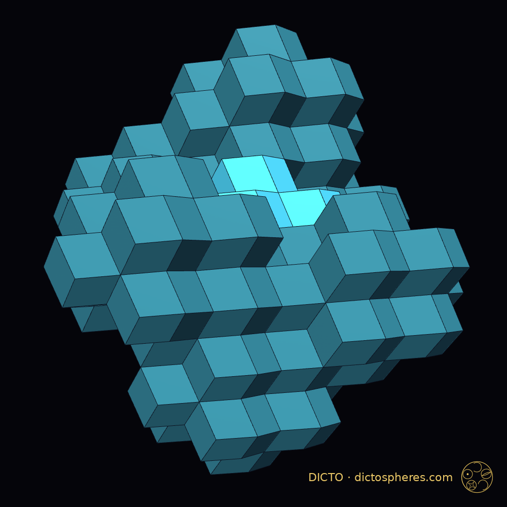
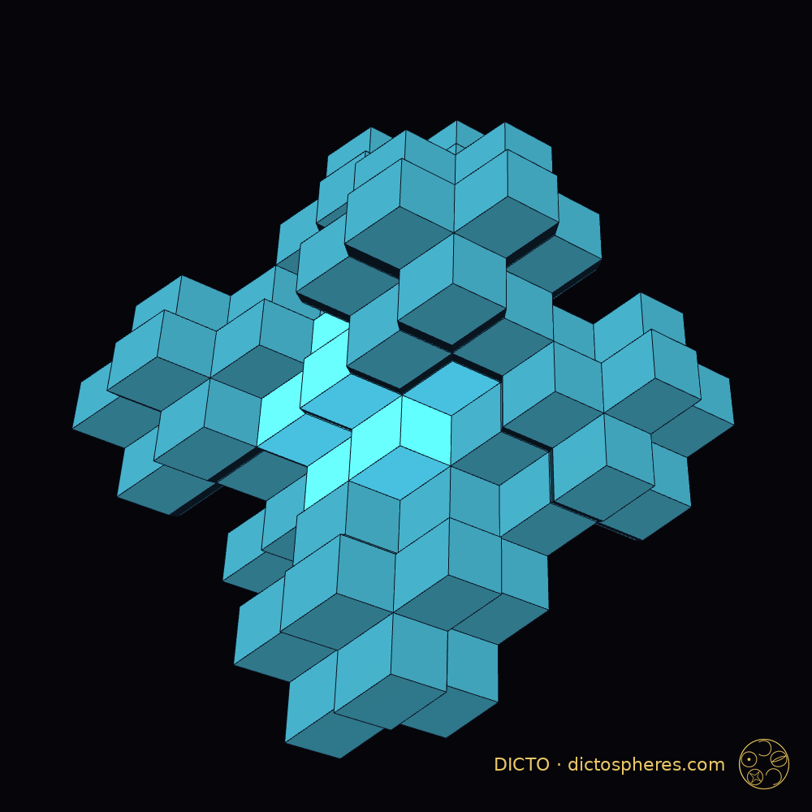
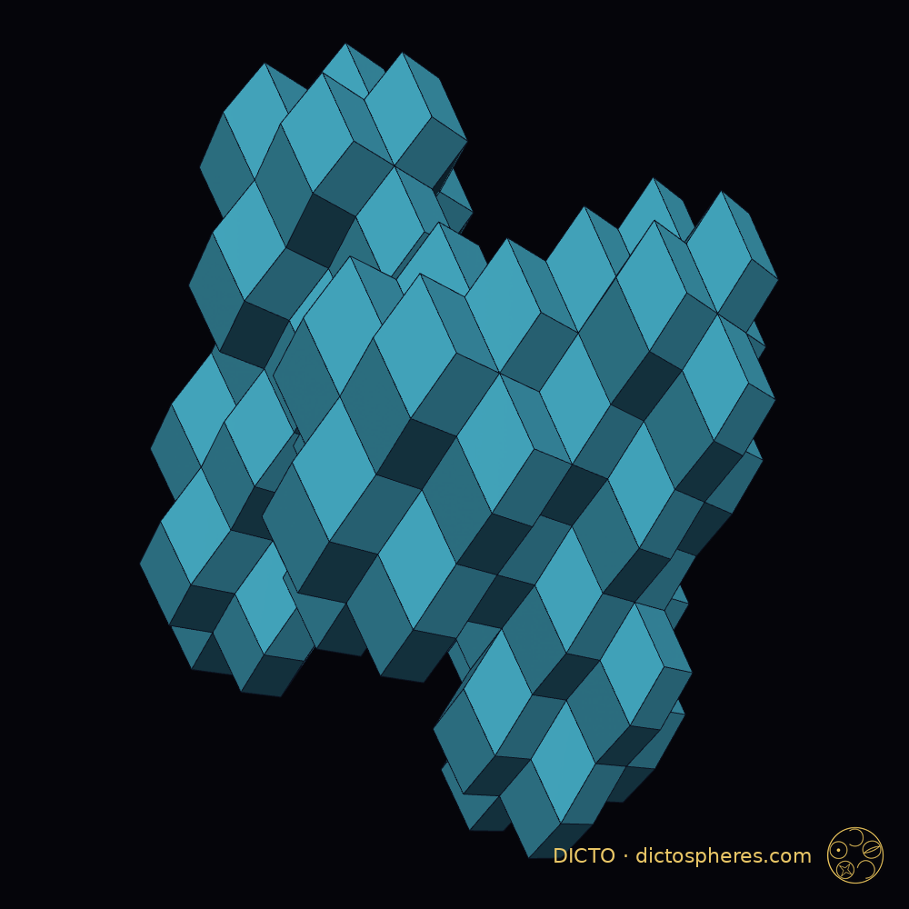
Figure 4.3. DICTO skewed RD 13, Bain RD 13 and Bilinski 13 as seven blocks filling space: one tiling, three shapes. From #26, Figure 11.
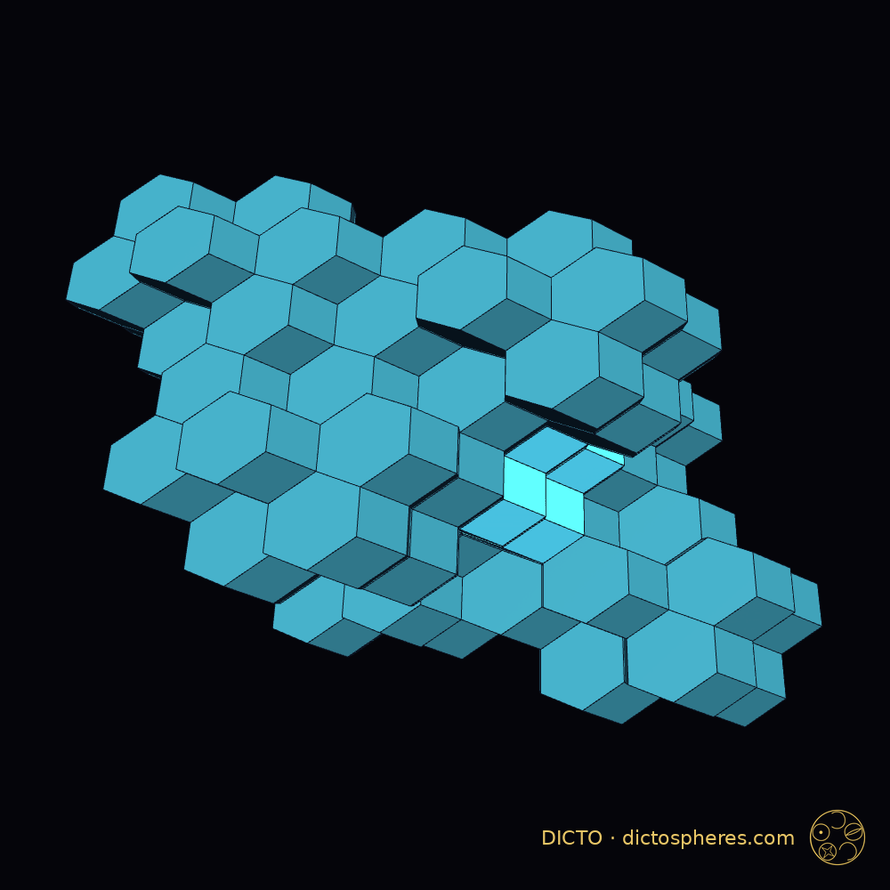
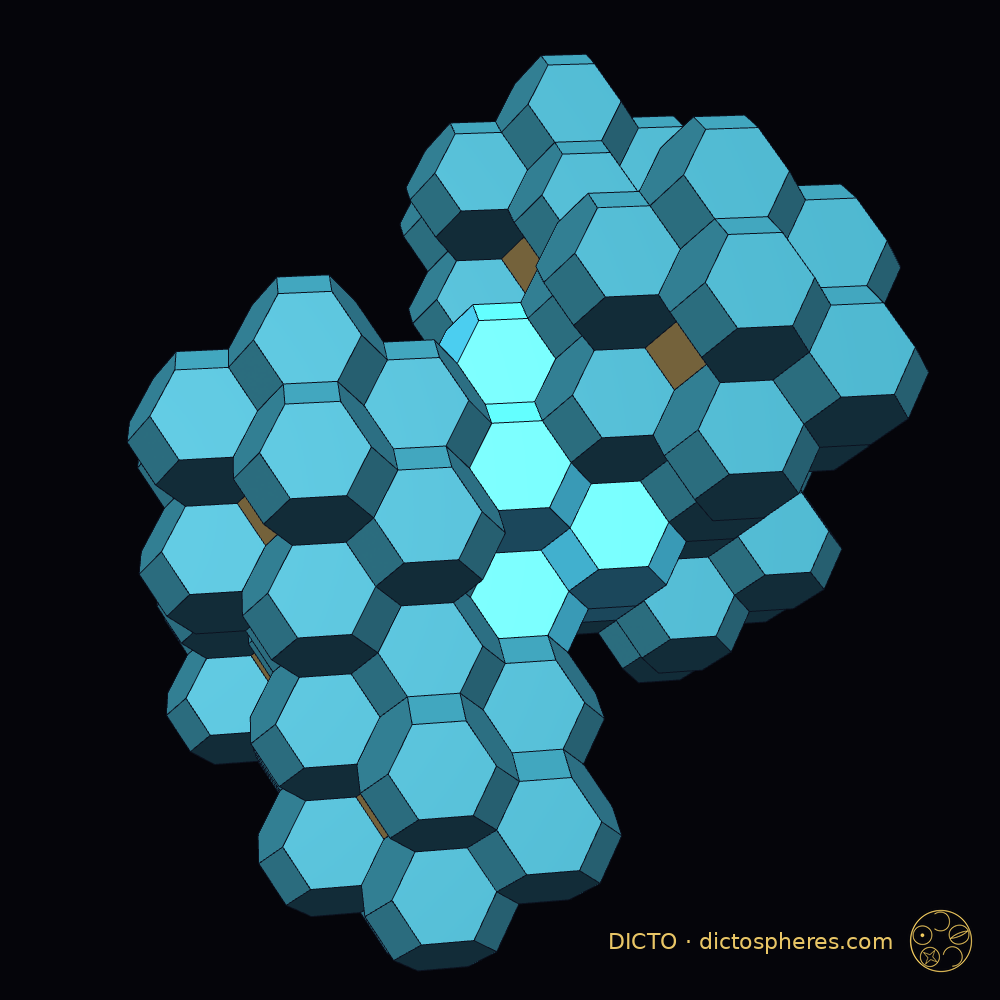
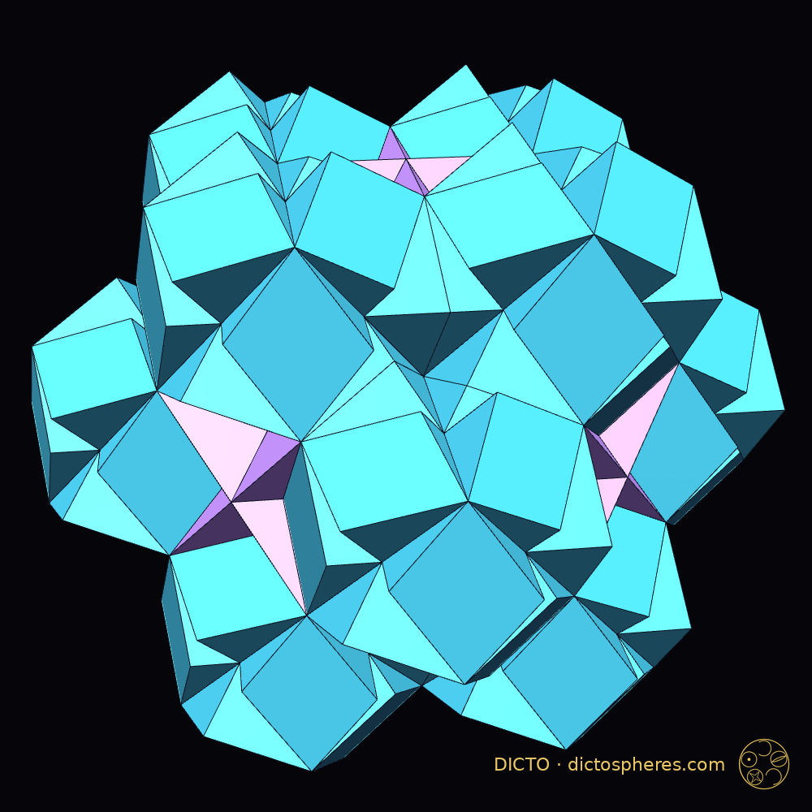
Figure 4.4. Regular-hexagon ED 13 and truncated octahedron 13 (4 + 5 + 4), each as seven blocks; the DICTO Jewel 13 with its 6 stella octangulas. From #26, Figures 8, 9 and 12.
Known, and what is DICTO's. Twelve spheres round one: Schütte and van der Waerden (1952); the thirteen-atom icosahedral cluster: Frank (1952), and its shells: Mackay (1962). Parallelohedra: Fedorov (1885), Grünbaum (2010). Radius-one perfect codes: in the cube lattice in every dimension (Golomb and Welch 1970; Etzion 2011; Campello et al. 2015), radius two failing in three dimensions (Gravier, Mollard and Payan 1998); in A₃ the 13-cell block tiling is Kovačević and Tan's (2018), given explicitly by Kovačević (2026), resting on Singer's difference set (1938); see also Dejter, Fuentes and Araujo (2025). Not found in the sources checked: rounding a space-filling cluster with flat faces while keeping it keyed and its centre a true rhombic dodecahedron; the Spheroid-13 RD and its pieces; the thirteen clusters side by side; the truncated octahedron's 4 + 5 + 4 and the Jewel 13 as blocks; the seven periodic shapes read as one tiling. The search is not exhaustive.
Sources checked (as in #25 § 8 and #26 § 6): Golomb and Welch (1970); Etzion (2011); Campello, Jorge, Strapasson and Costa (2016, arXiv 2015); Gravier, Mollard and Payan (1998); Kovačević and Tan (2018); Kovačević (2026, arXiv:2607.21037); Singer (1938); Dejter, Fuentes and Araujo (2025); Schütte and van der Waerden (1952); Frank (1952); Mackay (1962); Gray (2002); Kabai's clusters of triacontahedra (Wolfram Demonstrations); Fedorov (1885); Grünbaum (2010).
Study: studies/2026-10-13-rd13-block (round.py with the rdcentre mode, analysis.py, pieces.py, centre.py, compare.py, nets.mjs); for #26, papers/thirteens and docs/PLAN-13.md, with scripts/dump-thirteens.mjs, build-thirteens-data.py, build-kits13.py and kit-shapes.py.
Part II · Together
Chapters 5 to 9: solids that fill space only with partners
Most solids cannot fill space alone, and a few fill it only with a partner: the tetrahedron with the octahedron, the dodecahedron with the Dogstar. Part II follows the partners, from one pair to every mix of the Platonic solids.
Chapters 5 and 6 tell two twin fillings built on Euclid's dodecahedron, a cube with a roof on each face. Carve the dodecahedron by its neighbours' stella octangulas and it becomes DICTO's Jewel, which fills space with the stellas (Chapter 5); keep it whole and the hole between dodecahedra is Hart's Dogstar (Chapter 6). Chapter 7 goes one level up: clusters of these pieces that share corners like the kagome net, and DICTO's Hexa, a cube of eight Jewels that fills space with its own key. Chapter 8 proves that every one of the 31 mixes of the five Platonic solids fills space with one small kit of connectors. Chapter 9 ends the part with a network in which only the mixture fills.
Chapter 5 · The DICTO Jewel and the Stella Octangula
Euclid's dodecahedron carved by its neighbours' stella octangulas is an exact solid with twelve Penrose windows, volume 3/16; Jewels and stella octangulas fill space in the rock-salt pattern, 3 : 1, proved exactly; the DICTO Jewel-Tetra, Jewel-Octa and Jewel-Rhombi as single solids, and every lattice on which each fills space with loose stellas
First published as #41, The DICTO Jewel (version 1), DICTO DOI 10.5281/zenodo.23496353. Retold here in this book's story; the theorems and numbers are those of #41, which is the record.
The Jewel, its stella-octangula counterpart and its clusters first appeared as findings #10, #10b and #15 of Kaleidohedra, the lattice app of Chapter 3 (DICTO DOI: 10.5281/zenodo.23173809).
Part I ended with blocks that fill space alone. The DICTO Jewel, Euclid's dodecahedron carved by its neighbours' stella octangulas, cannot: it is only three quarters of space. Where six stella octangulas cut into Euclid's dodecahedron they leave twelve diamond windows, and what the stellas leave, and the stellas themselves, fit together with nothing left over. The Jewel and the stella are a pair, and this chapter proves exactly that they fill space as the sodium and chlorine of rock salt do.
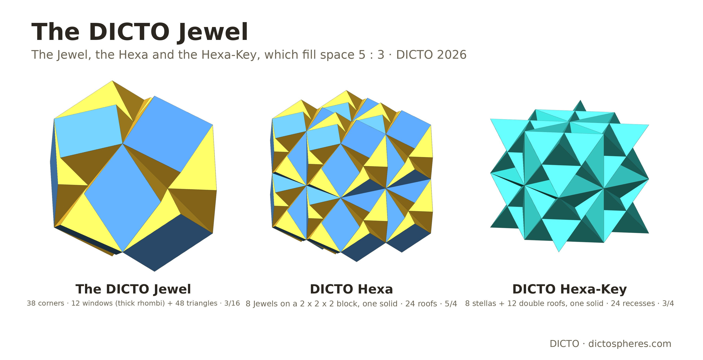
Figure 5.1. The DICTO Jewel, with the DICTO Hexa and Hexa-Key of Chapter 7. From #41, cover.
1. The Jewel
Frame. As in the Euclid–Kepler–Pacioli (EKP) cell (DICTO DOI 10.5281/zenodo.23284106): cells are cubes centred on a cubic lattice; a cell is even or odd by the parity of its index sum, and the even cells form a face-centred cubic lattice. All values are at the scale where a 2 × 2 × 2 block of cells (the Hexa's cube, Chapter 7) has edge 1, so a cell has edge 1/2 and volume 1/8; the study's scripts use cells of edge 2, where every volume is 64 times larger (the Jewel is then 12, the stella 4).
Construction. Euclid builds the regular dodecahedron on a cube by setting a roof on each face (Elements XIII.17): the hull of the face and a ridge of length 1/φ times the cell edge, at height (φ − 1)/2 times the cell edge; each roof is (1 + √5)/192 and the dodecahedron (5 + √5)/32. Each roof reaches into the next cell, where the stella octangula (Kepler's two tetrahedra on the cube's corners, volume 1/16) takes away (√5 − 1)/192 of it, leaving a carved roof of exactly 1/96. The Jewel is its cell and its six carved roofs.
Theorem 5.1 (the DICTO Jewel; #41, § 1). The Jewel, the cell with its six carved roofs, has volume 1/8 + 6/96 = 3/16. Each carved roof is exactly four tetrahedra, one over each quarter of the cube face, meeting at the face centre. The Jewel has 38 corners (the cube's 8, the 12 ridge points, the 6 face centres, where it is dimpled, and 12 points that complete the windows) and 60 faces: 12 windows, one across each cube edge, lying in the dodecahedron's face planes, and 6 × 8 = 48 triangles in the stellas' planes; 38 − 96 + 60 = 2. Each window is a thick Penrose rhombus: side (√5 − 1)/4 = 1/(2φ), long diagonal 1/2 (the cell's edge), angle 108° at the ridge corners (cos 108° = (1 − √5)/4, exact) and 72° at the cube corners. Its symmetry group has order 24: it is pyritohedral, like Euclid's roofed cube itself.
Proof (as in #41). The four tetrahedra of a carved roof each have half a window on the outside and two walls in the planes of the neighbouring stella; exactly, they lie in the roof, miss the stella, meet only in faces and add up to 1/96. The corners and faces follow, and Euler's count closes. The Jewel's corners are centrosymmetric and have the three-fold turns and the three coordinate mirrors, but no diagonal mirror and no four-fold turn. All of this is computed exactly in ℚ(√5) (jewel_exact.py, 21 PASS). ∎
2. Jewels and stellas fill space
Theorem 5.2 (the Stella–Jewel Lattice; #41, § 2). Jewels on the even cells and stella octangulas on the odd cells fill space, 3/16 : 1/16 = 3 : 1. Each odd cell is exactly its stella and the six carved roofs that its face-neighbour Jewels push into it.
Proof. Take an odd cell. The six Jewels on its face-neighbours each reach into it with one carved roof (their ridges are Jewel corners). These six roofs lie in the cell, any two meet only in a face (the intersection of the uncarved roofs has volume exactly 0), and each carved part is 1/96. With the stella they give 1/16 + 6/96 = 1/8, the cell: so an odd cell is exactly its stella and six carved roofs, an even cell is the core of its Jewel, and the Jewels and stellas tile space. ∎ The first check (Kaleidohedra finding #10b) sampled points; #41 made it exact.
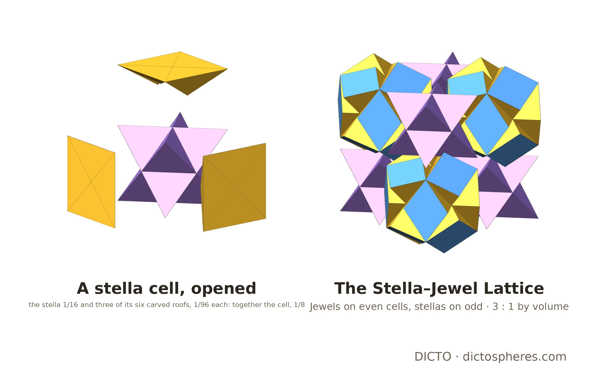
Figure 5.2. Left: an odd cell opened, its stella octangula (violet) and three of the six carved roofs that the neighbouring Jewels push into it. Right: a 2 × 2 × 2 block of the Stella–Jewel Lattice, drawn slightly apart. From #41, Figure 1.
3. Three clusters as single solids, and how each fills space
Two Jewels on neighbouring even cells (one step along a face diagonal) share exactly one window; Jewels two cells apart along an axis share none. A tetrahedral and an octahedral cluster built in the app both fill space with stellas (finding #15); #41 makes each a single solid, with a third.
Proposition 5.3 (#41, § 3). (a) The DICTO Jewel-Tetra, four Jewels on mutually neighbouring even cells, each pair sharing one window, has 228 faces (192 triangles, 36 windows), all four meeting at one point, their cells' common corner; volume 3/4. (b) The DICTO Jewel-Octa, the six Jewels round an odd cell and that cell's stella, has an outer surface of 288 faces (240 triangles, 48 windows; 6 × 60 − 2 × 12 − 48) and volume 6 × 3/16 + 1/16 = 19/16; the stella fills the Jewels' hole exactly. (c) The DICTO Jewel-Rhombi, eight Jewels on the corners of the face-centred cubic cell, meets on 18 windows (12 along its edges and 6 along the short face diagonals), has the odd cell's stella sealed inside, filling the hole exactly, and as one solid has 396 faces (336 triangles, 60 windows; 8 × 60 − 2 × 18 − 48) and volume 8 × 3/16 + 1/16 = 25/16, 8⅓ Jewels. (d) Each of the three fills space with copies of itself and loose stellas (stellas inside no piece) on exactly the lattices of translations in Table 5.1, and none can without stellas, since Jewels are only three quarters of space.
piece
Jewels
stella inside
loose stellas per piece
lattices
up to symmetry
Jewel-Tetra
4
0
4
4 (index 8)
2
Jewel-Octa
6
1
5
12 (index 12)
1
Jewel-Rhombi
8
1
7
25 (index 16)
9
Table 5.1. Lattice tilings of the three cluster solids with loose stellas (#41, § 3); a lattice of index n holds one cell in n, and a period holds as many stellas as Jewels, so the index is twice the Jewels per piece. Example for the Jewel-Octa: Hermite basis (1, 0, 3), (0, 1, 5), (0, 0, 12) in cell units, one Jewel-Octa and five loose stellas per period.
Proof (as in #41). Jewels meet each other only on whole windows and every Jewel triangle lies on a stella, so the faces can be counted from the shared windows and stellas. In the Jewel-Octa, each Jewel shares a window with its four neighbours in the ring (12 windows); inside, the 48 walls of the Jewels' carved roofs enclose a stella-shaped hole, sealed but for its eight tips, and since the odd cell is exactly its stella and the six carved roofs (Theorem 5.2), the stella fills the hole exactly. In the Jewel-Rhombi all six face-neighbours of the odd cell at its centre are among its corners, so the same holds. The lattices are found by an exact integer search over all lattices of the right index (cluster_exact.py, 24 PASS). ∎
The octet pattern. The Jewels' cells form a face-centred cubic lattice; its tetrahedral holes are the cell corners and its octahedral holes the odd cells, so Jewel-Tetras and Jewel-Octas sit exactly where the octet truss has its tetrahedra and octahedra, eight Jewel-Tetras round each Jewel-Octa (the octet network of the Kaleidohedra findings). Each Jewel lies in 8 Jewel-Tetras and 6 Jewel-Octas, and each of a Jewel-Octa's 8 faces is completed to a Jewel-Tetra by exactly one Jewel outside. It is not an octet tiling: neighbouring pieces share Jewels, and what fills space is still the Jewels and the stellas. Without overlap it cannot be one either: each Jewel-Octa takes six Jewels and one stella, and there are as many Jewels as stellas, so at most one stella in six can be inside a Jewel-Octa; the 12 lattices of Table 5.1 reach that bound. Grouped with sharing instead, Jewel-Tetras sharing single Jewels corner to corner form a pyrochlore network, the Kagome network of Chapter 7.
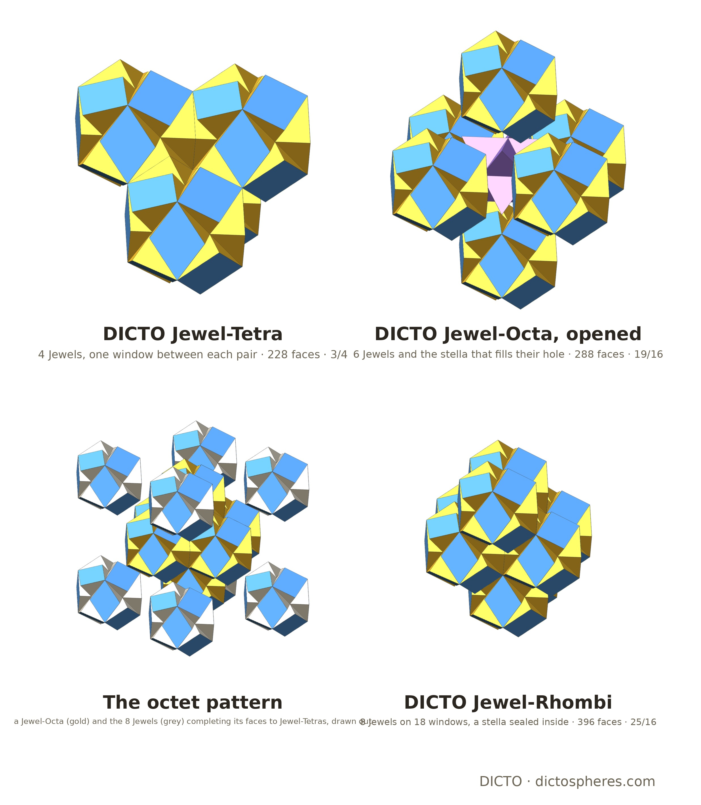
Figure 5.3. The DICTO Jewel-Tetra; the DICTO Jewel-Octa, its Jewels drawn out to show the stella (violet) that fills its hole; the octet pattern, a Jewel-Octa (gold) and the 8 Jewels (grey) that complete its faces to Jewel-Tetras, drawn out; and the DICTO Jewel-Rhombi (windows blue). From #41, Figure 2.
4. The Jewel does not twin by a (111) mirror
As a solid the Jewel is centrosymmetric with a three-fold axis, so by the twin rule its mirror image in a plane at right angles to that axis is the same solid turned 60°: it twins like the DICTO Ogdoecontahedron (OG), the 80-faced solid that sits in every octahedron of the octet truss (DICTO DOI 10.5281/zenodo.23490114). Its packing does not twin by a (111) mirror: a twin through a (111) layer of the Stella–Jewel Lattice left about 4% of sampled points uncovered and 4% covered twice (float; DICTO DOI 10.5281/zenodo.23484012). The reason is exact: the mirror in a (111) plane takes the cubic lattice of cells to a different lattice (the step to the next cell, (1, 0, 0) in cell units, goes to (1/3, −2/3, −2/3)), so the mirrored packing cannot continue the cubic cells across the plane. The Ogdoecontahedron's packing twins because its cells, octahedra, are mirrored into the next octahedra of the gyrated octet; the Jewel's cells are cubes. One level up, eight Jewels on a 2 × 2 × 2 block make the DICTO Hexa, which fills space with the DICTO Hexa-Key, the solid left between Hexas, 5 : 3; #41 proved this exactly, and it is told in Chapter 7.
Known, and what is claimed. The dodecahedron as a cube with six roofs is Euclid's (Elements XIII.17); the stella octangula is Kepler's (1619); the thick rhombus is Penrose's (1979); the rock-salt arrangement is that of sodium chloride (Bragg 1913); the EKP cell holds them together. Lalvani's US 4,723,382 builds structures whose edges all lie on the fifteen two-fold axes of the icosahedral group: all 48 window edges of the Jewel lie on those axes, but none of its other 48 edges do (float check), so the Jewel, the stella and the lattices here fall outside that edge condition (#41's reading, not legal advice). Already published by DICTO: the Jewel's definition, its volume and the Stella–Jewel Lattice, with the cluster networks, in Kagome Hulls (#17); the Jewel, the lattice, the tetrahedral and octahedral clusters and the octet network with the Kaleidohedra app (findings #10, #10b, #15). Claimed in #41: the exact proofs in ℚ(√5) of the Jewel's corners, windows, surface, volume and symmetry and of the Stella–Jewel tiling; the three cluster solids, their face counts, the 18 windows of the Jewel-Rhombi and the stella filling the hole exactly; all lattice tilings of the three with loose stellas; the octet pattern and its bound of one stella in six; the exact proofs of the Hexa and Hexa-Key (Chapter 7); and the exact reason the packing does not twin by a (111) mirror. In the sources checked the Jewel, its clusters, the Hexa and the Hexa-Key were not found outside DICTO's own records.
Sources checked (as in #41, Appendix): the full text of the 80 sources in the reference library listed below, searched on 20 October 2026 for Penrose, stella octangula, rock salt, Lalvani, Euclid, roof and rhombic (relevant hits: Euclid, Kepler, Pacioli, Messer's stellations of the rhombic triacontahedron, Lalvani's NASA report on octahedral–tetrahedral trusses, and the Penrose-tiling papers of Kramer, Baake and Grimm, Dietl and Eschenburg; none contains the results); thirteen page images without a text layer (the patents of Fuller, Snelson, Pearce, Baer, Hogan, Bergman and Lalvani, among them US 4,723,382, read separately in full on 8 October 2026, and Fedorov 1885); web searches on 20 October 2026 for a dodecahedron carved by stella octangulas, space-filling pairs of a dodecahedron-based solid and the stella octangula, and cubes of overlapping dodecahedra. The 80 library sources: Luca Pacioli, Leonardo da Vinci (ill.) (1509), Divina proportione; Albrecht Dürer (1525), Underweysung der Messung mit dem Zirckel und Richtscheyt; Wenzel Jamnitzer, Jost Amman (engr.) (1568), Perspectiva corporum regularium; Johannes Kepler (1596), Prodromus dissertationum cosmographicarum continens Mysterium cosmographicum; Johannes Kepler (1619), Harmonices mundi libri V; Euclid, T. L. Heath (tr.) (1908), The Thirteen Books of Euclid's Elements, Vol. III (Books X-XIII); M. Goldberg (1937), A class of multi-symmetric polyhedra; Haresh Lalvani (1990), Transformational part-count in layered octahedral-tetrahedral truss configurations (NASA TM-102635); P. W. Messer (1995), Stellations of the rhombic triacontahedron and beyond; M. Baake, F. Gähler (1998), Symmetry structure of the Elser-Sloane quasicrystal; T. C. Hales (1998), An overview of the Kepler conjecture; M. Baake (1999), A guide to mathematical quasicrystals; O. Ogievetsky, Z. Papadopolos (1999), On Quasiperiodic Space Tilings, Inflation and Dehn Invariants; U. Betke, M. Henk (1999), Densest lattice packings of 3-polytopes; Z. Papadopolos, O. Ogievetsky (1999), On Inflation Rules for Mosseri-Sadoc Tilings; Z. Papadopolos, O. Ogievetsky (1999), On quasiperiodic space tilings, inflation and Dehn invariants; R. V. Moody (2000), Model sets: a survey; M. Senechal (2004), Donald and the golden rhombohedra; S. Kabai (2007), 54-Faced Space-Filling Polyhedron (Wolfram Demonstration; description and screenshot); S. Kabai (2007), Golden Octet Truss (Wolfram Demonstration; description and screenshot); Wikipedia contributors (2007 mirror) (2007), Kyushindo (2007 version); S. Kabai (2008), A Rhombic Dodecahedron Made of Rhombic Triacontahedra (Wolfram Demonstration; description and screenshot); S. Kabai (2008), Relating a Rhombic Triacontahedron and a Rhombic Dodecahedron (Wolfram Demonstration; description and screenshot); M. Koca, M. Al-Ajmi, N. O. Koca (2009), Grand antiprism and quaternions; M. Koca, M. Al-Ajmi, N. O. Koca (2009), Quaternionic representation of snub 24-cell and its dual polytope derived from E8 root system; S. Torquato, Y. Jiao (2009), Dense packings of polyhedra: Platonic and Archimedean solids; B. Grünbaum (2010), The Bilinski dodecahedron, and assorted parallelohedra, zonohedra, monohedra, isozonohedra and otherhedra; P. Kramer (2010), Gateways towards quasicrystals; A. M. Cutler, E. Schulte (2011), Regular polyhedra of index two, I; D. Frettlöh (2011), Icosahedral tilings in R3: the ABCK tilings (draft chapter); J. Koskinen (2011), Unusual tilings and transformations; J. de Graaf, R. van Roij, M. Dijkstra (2011), Dense regular packings of irregular non-convex particles; M. Koca, N. O. Koca, M. Al-Ajmi (2011), Branching of the W(H4) polytopes and their dual polytopes under the Coxeter groups W(A4) and W(H3) represented by quaternions; M. Koca, N. O. Koca, M. Al-Barwani (2011), Snub 24-cell derived from the Coxeter-Weyl group W(D4); T. Etzion (2011), Product constructions for perfect Lee codes; A. Garber, A. Gavrilyuk, A. Magazinov (2012), The Voronoi conjecture for parallelohedra with simply connected delta-surface; J. C. Lagarias, C. Zong (2012), Mysteries in packing regular tetrahedra; M. Baake, U. Grimm (2012), Mathematical diffraction of aperiodic structures; M. Koca, N. O. Koca, R. Koc (2012), Affine Coxeter group Wa(A4), quaternions, and decagonal quasicrystals; P. F. Damasceno, M. Engel, S. C. Glotzer (2012), Crystalline assemblies and densest packings of a family of truncated tetrahedra and the role of directional entropic forces; R. Gabbrielli, Y. Jiao, S. Torquato (2012), Families of tessellations of space by elementary polyhedra via retessellations of face-centered-cubic and related tilings; S. Torquato, Y. Jiao (2012), Organizing principles for dense packings of nonspherical hard particles: not all shapes are created equal; M. Kléman (2013), Defects in quasicrystals, revisited: I-flips, approximants, phason defects; N. Fujita, H. Takano, A. Yamamoto, A.-P. Tsai (2013), Cluster packing geometry for Al-based F-type icosahedral alloys; P.-P. Dechant, J. Wardman, T. Keef, R. Twarock (2014), Viruses and fullerenes: symmetry as a common thread?; A. Campello, G. C. Jorge, J. E. Strapasson, S. I. R. Costa (2015), Perfect codes in the lp metric; K. Deguchi, M. Nakayama, S. Matsukawa, K. Imura et al. (2015), Crystal structure of superconducting 1/1 cubic Au-Ge-Yb approximant with Tsai-type cluster; M. Baake, D. Damanik, U. Grimm (2015), What is aperiodic order?; M. Firsching (2015), Computing maximal copies of polytopes contained in a polytope; N. O. Koca, M. Koca, A. Al-Mukhaini, A. Al-Qanobi (2015), Quaternionic representations of the pyritohedral group, related polyhedra and lattices; R. Twarock, M. Valiunas, E. Zappa (2015), Orbits of crystallographic embedding of non-crystallographic groups and applications to virology; S. Kabai (2015), Cluster of 14 Rhombic Triacontahedra (Wolfram Demonstration; description and screenshot); A. T. Cadotte, J. Dshemuchadse, P. F. Damasceno, R. S. Newman, S. C. Glotzer (2016), Self-assembly of a space-tessellating structure in the binary system of hard tetrahedra and octahedra; C. Hann, J. E. S. Socolar, P. J. Steinhardt (2016), Local growth of icosahedral quasicrystalline tilings; R. M. K. Dietl, J.-H. Eschenburg (2016), The icosahedral quasiperiodic tiling and its self-similarity; A. Stergiou (2018), Bootstrapping hypercubic and hypertetrahedral theories in three dimensions; A. Garber (2019), Voronoi conjecture for five-dimensional parallelohedra; D. Poland, S. Rychkov, A. Vichi (2019), The conformal bootstrap: theory, numerical techniques, and applications; R. Twarock, A. Luque (2019), Structural puzzles in virology solved with an overarching icosahedral design principle; T. Ishimasa (2019), Icosahedral quasicrystal, 1/1 and 2/1 approximants in Zn-based ternary alloys containing Au and Yb/Tb; A. Al-Siyabi, N. O. Koca, M. Koca (2020), Icosahedral polyhedra from D6 lattice and Danzer's ABCK tiling; M. Koca, R. Koc, N. O. Koca, A. Al-Siyabi (2020), Icosahedral tiling with dodecahedral structures; N. O. Koca, R. Koc, M. Koca, A. Al-Siyabi (2020), Dodecahedral Structures with Mosseri-Sadoc Tiles; V. R. Krishnamurthy, E. Akleman, S. G. Subramanian et al. (2020), Bi-axial woven tiles: interlocking space-filling shapes based on symmetries of bi-axial weaving patterns; V. R. Krishnamurthy, E. Akleman, S. G. Subramanian, M. Ebert, J. Cui, C. Fu, C. Starrett (2022), Geometrically interlocking space-filling tiling based on fabric weaves; B.-X. Lao, S. Rychkov (2023), 3D Ising CFT and exact diagonalization on icosahedron: the power of conformal perturbation theory; D. Smith, J. S. Myers, C. S. Kaplan, C. Goodman-Strauss (2023), An aperiodic monotile; R. Akpanya et al. (2024), Topologically interlocking blocks inside the tetroctahedrille; I. J. Dejter, L. R. Fuentes, C. A. Araujo (2025), Perfect truncated-metric codes in lattice graphs and superlattice graphs; S. Rychkov (2025), Conformal bootstrap: from Polyakov to our times; M. Kovačević (2026), An isodiametric theorem and lattice diameter-perfect codes in A3; R. Al Raisi, N. O. Koca, M. Koca, R. Koc (2026), Modified Mosseri-Sadoc tiles from D6; Wikipedia contributors (2026), Crystal twinning (incl. the spinel law); Wikipedia contributors (2026), Fullerene; Wikipedia contributors (2026), Goldberg polyhedron; Wikipedia contributors (2026), Kenshiro Abbe; Wikipedia contributors (2026), Kyūshindō; Wikipedia contributors (2026), Mitsusuke Harada; Wikipedia contributors (2026), n-flake (Sierpinski icosahedron); Wikipedia contributors (2026), Tetrahedral-octahedral honeycomb (incl. the gyrated form).
Study: studies/2026-10-20-dicto-jewel (jewel_exact.py, log jewel-exact.log, 21 PASS; cluster_exact.py, log cluster-exact.log, 24 PASS; both with the exact tools q5.py and exactpoly.py of studies/2026-10-18-ocd-octet; lalvani_edges.py, float; figures jewel_figs.py, shots.mjs, jewel_compose.py), attached to #41 as dicto-jewel-study-d475b59.zip.
Chapter 6 · The Sunstar: Dodecahedra and Dogstars
Regular dodecahedra and Hart's Dogstars fill space, proved exactly in ℚ(√5); the Dogstar identified exactly as a stellation of the dodecahedron 1/φ³ the size; the Star Chain Reaction; the DICTO Sunstar-Tetra, Sunstar-Octa and Sunstar-Rhombi; the DICTO Sunstar-Hexa and Sunstar-Hexa-Key in an irrational ratio; the twin of the DICTO Jewel
First published as #42, The DICTO Sunstar (version 1), DICTO DOI 10.5281/zenodo.23497702. Retold here in this book's story; the theorems and numbers are those of #42, which is the record.
The clusters and the Hexa twin first appeared as findings #12 and #16 of Kaleidohedra, the lattice app of Chapter 3. The Dogstar as a solid was illustrated by John Ounsted, by Grünbaum and Shephard and by Stewart, as listed by George W. Hart, who gave it as stellation 8 of the dodecahedron and noted its tiling with regular dodecahedra (1996); the tiling is also in Hans Walser and on Polyhedra-World.
Keep Euclid's dodecahedron whole, put one on every other cube, and the hole left in each of the other cubes is a star: Hart's Dogstar, his stellation 8 of the dodecahedron. Dodecahedra and Dogstars fill space, a pair like the DICTO Jewel (Euclid's dodecahedron carved by its neighbours' stella octangulas) and the stella of Chapter 5, on the same cells and with the same roofs. The difference is only who owns the tip of each roof, and it turns a rational filling into a golden one.
1. The Dogstar and the Sunstar Lattice
The frame and scale are those of Chapter 5: cubic cells, even and odd, a 2 × 2 × 2 block of edge 1, a cell of edge 1/2; each of Euclid's roofs is (1 + √5)/192 and the dodecahedron (5 + √5)/32. Regular dodecahedra on alternate cubes are the densest lattice packing of the dodecahedron (Betke and Henk 2000).
Theorem 6.1 (#42, § 1; the Dogstar and the tiling are Hart's). Put a dodecahedron on every even cell. Each odd cell is entered by six roofs, one from each face-neighbour; they lie in the cell and meet each other only in faces. What is left is the Dogstar, of volume 1/8 − 6 × (1 + √5)/192 = (3 − √5)/32, exactly φ/2 at dodecahedron edge 1. Dodecahedra and Dogstars fill space; the dodecahedra take (5 + √5)/8 of it, the density of Betke and Henk's densest lattice packing.
Proof (as in #42). The six roofs entering an odd cell have pairwise intersection volume 0, exactly. A dodecahedron is its cell and six roofs, each lying in a face-neighbour cell (exact); so only these six roofs enter an odd cell, and two dodecahedra can meet only there, where they are roofs that meet in faces alone. Hence the dodecahedra and the Dogstars, what is left of the odd cells, tile space. ∎
Proposition 6.2 (which stellation, exactly; #42, § 1). Take the regular dodecahedron 1/φ³ the size of the lattice's, centred in the odd cell and turned the same way (the core). Its 12 face planes cut space into 63 bounded cells: the core, 12 pyramids, 30 wedges and 20 spikes. Every one lies wholly inside the Dogstar or wholly outside it, and the Dogstar is exactly the core, all 12 pyramids, 24 of the 30 wedges and 8 of the 20 spikes, their volumes adding up to (3 − √5)/32. The 6 wedges left out lie on the cube's axes; the tips of the 8 spikes kept are the cube's 8 corners. The Dogstar also lies wholly inside its own cube's stella octangula.
So Dogstars can sit in every cell, eight tips meeting at each cube corner. The Sunstar is a dodecahedron with the Dogstars of its six face-neighbour cells, (23 − 5√5)/32, and the Sunstar Lattice is the tiling of Theorem 6.1, dodecahedra on the even cells and Dogstars on the odd.
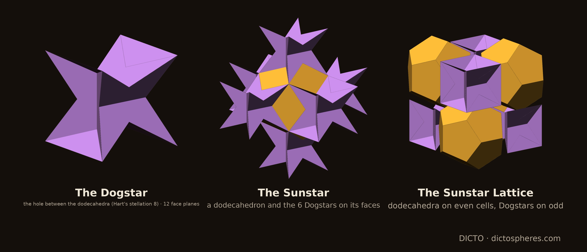
Figure 6.1. The Dogstar; the Sunstar (gold dodecahedron, purple Dogstars); a 2 × 2 × 2 block of the Sunstar Lattice, drawn slightly apart. From #42, Figure 1.
2. The Star Chain Reaction
Theorem 6.3 (the Star Chain Reaction; #42, § 2). The great stellated dodecahedron of the core (all 63 cells) has exactly the 20 corners of the lattice's dodecahedron, φ³ times the core. Inside it sits a whole Sunstar 1/φ³ the size, centred with it and turned the same way: the core itself with the six Dogstars of the 1/φ³ lattice round it. The fit is tight, at exactly 1/φ³. The core holds the next great star, which holds the next Sunstar 1/φ⁶, and so on: dodecahedron ⊃ great star ⊃ Sunstar(1/φ³) ⊃ great star(1/φ³) ⊃ …
Proof (as in #42). The corners of the great star on the dodecahedron φ³ times its core are classical (Coxeter 1973), verified exactly here; it is the great star of the EKP cell, and the Dogstar is this star cut back to its cube. Each of the six small Dogstars lies wholly inside the great star (exact: its volume met in full), and 24 of their spike tips (the four outermost of each) lie on the great star's surface in such a way that any enlargement about the centre takes them outside. For this the great star must be star-shaped about its centre, which it is: a ray from the centre crosses each of the 12 planes once, so the planes it has crossed only accumulate, and every subset of a bounded cell's outer planes is again a bounded cell's (checked for all 63), so a tip once outside stays outside. ∎ The ratio φ³ is the inflation multiplier characteristic of the primitive (P-type) icosahedral tiling (Baake 1999).
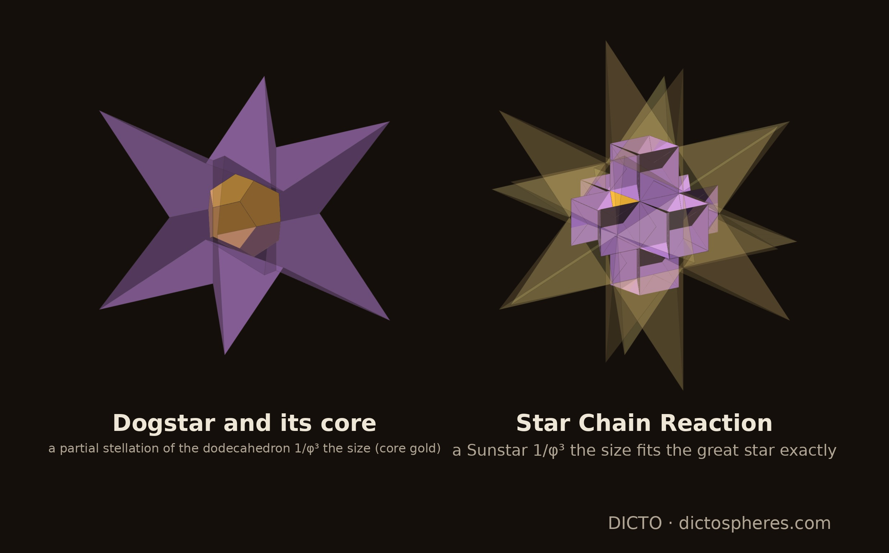
Figure 6.2. Left: the Dogstar, see-through, round its core (gold), the dodecahedron 1/φ³ the size. Right: the Star Chain Reaction, a Sunstar 1/φ³ the size inside the great star (pale gold, see-through). From #42, Figure 2.
3. The Sunstar clusters, and the twin of the Jewel
Proposition 6.4 (#42, §§ 3–4). (a) Dodecahedra on neighbouring even cells do not overlap and touch on exactly one thick Penrose rhombus (two cube corners, a ridge point and a point inside the face, with 108° at the ridge point), the window of the Jewel of Chapter 5; dodecahedra two cells apart along an axis do not touch. (b) The DICTO Sunstar-Tetra (four dodecahedra round a cell corner, 6 contact rhombi) has volume (5 + √5)/8; the DICTO Sunstar-Octa (the six dodecahedra round an odd cell, meeting on 12 rhombi, and that cell's Dogstar, which fills their hole exactly) has volume (33 + 5√5)/32; the DICTO Sunstar-Rhombi (eight dodecahedra on the corners of the primitive cell of the face-centred cubic lattice, meeting on 18 rhombi, with the odd cell's Dogstar sealed inside) has volume (43 + 7√5)/32. Each fills space with copies of itself and loose Dogstars on exactly the lattices of the Jewel clusters: 4, 12 and 25 lattices (2, 1 and 9 up to symmetry), with 4, 5 and 7 loose Dogstars per piece. (c) Eight whole dodecahedra on a 2 × 2 × 2 block make one solid, the DICTO Sunstar-Hexa, 1 + 24 × (1 + √5)/192 = (9 + √5)/8; the space between such blocks, put rock-salt fashion, is one solid, the DICTO Sunstar-Hexa-Key, 1 − 24 × (1 + √5)/192 = (7 − √5)/8, eight Dogstars joined by twelve double roofs. They fill space in the ratio (17 + 4√5)/11 ≈ 2.358, irrational; each Sunstar-Hexa meets each of its 12 neighbours on exactly two rhombi.
Proof (as in #42). The contacts are found by clipping coplanar faces exactly; since the two solids are convex and do not overlap, their whole contact lies in one common face plane, so the rhombus is all of it. The Sunstar-Octa's six roofs are exactly the roofs that make up the odd cell with the Dogstar (Theorem 6.1), so the Dogstar fills their hole; the 12 contact rhombi lie across the odd cell's 12 edges, sealing it. The clusters sit on the same cells as the Jewel-Tetra, Jewel-Octa and Jewel-Rhombi, so their lattice tilings are those of Table 5.1. In the Sunstar-Hexa-Key each cell is its Dogstar and the three roofs on its inner faces, and across each of the 12 inner faces the two roofs share their base (exact). All checks: sunstar_exact.py (12 PASS) and sunstar_clusters.py (16 PASS). ∎
The Sunstar-Octa is a Dogstar with its six dodecahedra: a Sunstar turned inside out. Shared, the clusters form the octet pattern (8 Sunstar-Tetras round each Sunstar-Octa) and the pyrochlore network of Sunstar-Tetras (the Kagome network of Chapter 7); without overlap at most one Dogstar in six can be inside a Sunstar-Octa. What is left of each pentagon after its contact rhombus is Walser's semi-regular pentagon, a regular pentagon with a rhombus cut away.
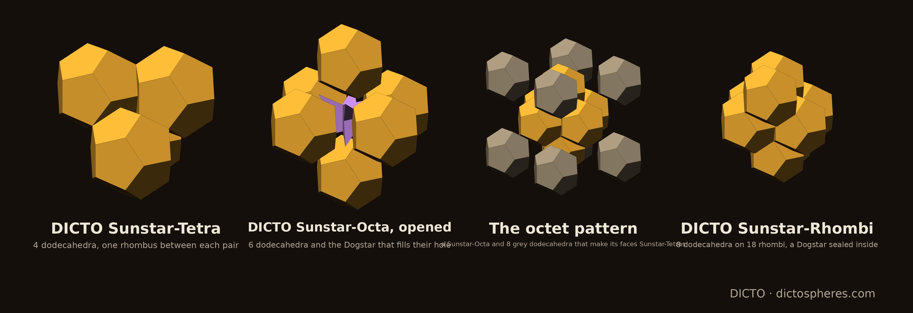
Figure 6.3. The DICTO Sunstar-Tetra; the DICTO Sunstar-Octa, its dodecahedra drawn out to show the Dogstar (purple) that fills its hole; the octet pattern, a Sunstar-Octa (gold) and the 8 dodecahedra (grey) that complete its faces to Sunstar-Tetras, drawn out; the DICTO Sunstar-Rhombi. From #42, Figure 3.
The Sunstar and the Jewel. The Sunstar Lattice and the Stella–Jewel Lattice have the same cells and the same roofs; they differ only in who owns the tip of each roof, the part (√5 − 1)/192 that lies inside the neighbouring cell's stella octangula. A dodecahedron without its six tips is the Jewel; a Dogstar with them is the stella octangula. So the two families share their contacts (the Penrose windows), their clusters and every tiling; the dodecahedra show whole pentagons where the Jewels show windows and triangles.
even cell
odd cell
clusters
Hexa : Hexa-Key
Sunstar Lattice
dodecahedron (5 + √5)/32
Dogstar (3 − √5)/32
Sunstar-Tetra, -Octa, -Rhombi
(17 + 4√5)/11
Stella–Jewel Lattice (Chapter 5)
Jewel 3/16
stella octangula 1/16
Jewel-Tetra, -Octa, -Rhombi
5 : 3
Table 6.1. The two twin lattices (#42, § 5).
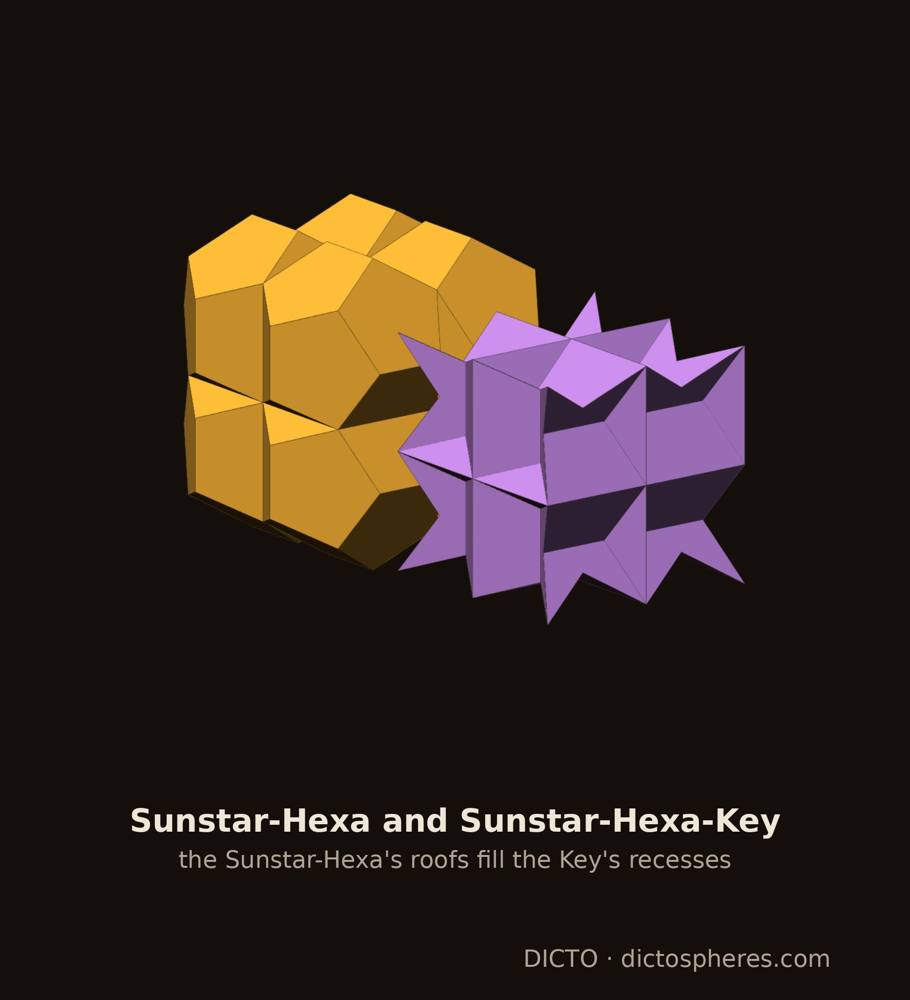
Figure 6.4. A Sunstar-Hexa (gold) and the Sunstar-Hexa-Key (purple) next to it, drawn out a little: the Sunstar-Hexa's roofs go into the Key's recesses. From #42, Figure 4.
Known and credited. The Dogstar as a solid and its tiling with regular dodecahedra: Hart's stellation 8 (1996), Walser's semi-regular dodecahedron (2017), Polyhedra-World (2004, updated 2012). The densest lattice packing of the dodecahedron, density (5 + √5)/8: Betke and Henk (2000; also Torquato and Jiao 2009). Euclid's roofs, Kepler's great stellated dodecahedron and its corners on the dodecahedron φ³ times its core (Coxeter 1973), the octet truss (Fuller 1961), the inflation multiplier of icosahedral tilings (Baake 1999). Already published by DICTO: the Sunstar Lattice, the Star Chain Reaction (#12) and the Sunstar clusters and octet network (#16) with the Kaleidohedra app; the Sunstar hull clusters and their Kagome networks in Kagome Hulls (#17); the Jewel family in #41; the Hexa and Hexa-Key in #18. Claimed in #42: the exact proofs of the Dogstar's volume and of the tiling; the Dogstar's exact identification on the core 1/φ³ (which cells) and inside its stella octangula; the exact Star Chain Reaction with its tight fit; the contacts as exact Penrose rhombi; the three Sunstar cluster solids and their tilings; the Sunstar-Hexa and Sunstar-Hexa-Key with their irrational ratio; and the Sunstar–Jewel correspondence. Not found in the sources checked: the Star Chain Reaction, the Sunstar clusters as solids, the Sunstar-Hexa or the Sunstar-Hexa-Key.
Sources checked (as in #42, Appendix): the full text of the same 80 library sources listed for Chapter 5, searched on 20 October 2026 for stellation, great stellated, Betke, Hart, Walser, dodecahedra and inflation (relevant hits: Betke and Henk and the packing studies citing it, Torquato and Jiao, and de Graaf, van Roij and Dijkstra, whose dense packings of the great stellated dodecahedron interpenetrate and are not this structure; Messer's stellations of the rhombic triacontahedron; the icosahedral tiling and quasicrystal papers on inflation of Baake, Grimm and Gähler, Koca et al., and Dietl and Eschenburg; none contains the results); thirteen page images without a text layer (the patents of Fuller, Snelson, Pearce, Baer, Hogan, Bergman and Lalvani, and Fedorov 1885); web searches on 8–9 and 20 October 2026: a dodecahedron stellation filling space with regular dodecahedra (Hart), and clusters of regular dodecahedra in the densest lattice packing, octahedral and tetrahedral clusters round the holes (nothing on clusters). Read outside the library: Hart (1996), Walser (2017), Polyhedra-World, Coxeter (1973), Fuller (1961).
Study: studies/2026-10-20-sunstar (sunstar_exact.py, log sunstar-exact.log, 12 PASS; sunstar_clusters.py, log sunstar-clusters.log, 16 PASS; both with the exact tools of studies/2026-10-18-ocd-octet; figures sunstar_figs.py, shots.mjs, sunstar_compose.py), attached to #42 as dicto-sunstar-study-dc78106.zip.
Chapter 7 · One Level Up: Kagome Hulls and the DICTO Hexa
In the Stella–Jewel and Sunstar lattices, clusters shaped like six convex hulls share single pieces corner to corner as in the kagome and pyrochlore nets, a hull with n corners giving n neighbours, with one icosahedral exception; eight overlapping Jewels make the DICTO Hexa, and Hexas and Hexa-Keys fill space as a checkerboard, 5 : 3
First published as #17, Kagome Hulls (version 2), DICTO DOI 10.5281/zenodo.23376317, and #18, The DICTO Hexa (version 2), DICTO DOI 10.5281/zenodo.23376320; the exact proofs of the Hexa and Hexa-Key are in #41, DICTO DOI 10.5281/zenodo.23496353. Retold here in this book's story; the results and numbers are those of these papers, which are the record.
The hulls, the test and the clusters of #17 and the Hexa of #18 first appeared as findings #17 and #18 of Kaleidohedra, the lattice app of Chapter 3; the design study was made in the open-source library krp-core (v0.16.0), and the exact proofs of § 3 are those of #41.
Chapters 5 and 6 found two pairs that fill space. Group the pieces of such a filling into clusters, and the clusters can themselves fill space, or share their corner pieces in an open net like the kagome pattern of woven bamboo. Group eight DICTO Jewels (Euclid's dodecahedron carved by its neighbours' stella octangulas, Chapter 5) into a cube, and the cube fills space with a partner of its own, as the Jewel does with the stella: the same pattern one level up.
1. Six hulls, two lattices
Both lattices are built on the cubic cells of the Euclid–Kepler–Pacioli (EKP) cell, even and odd by the parity of x + y + z, the even cells forming a face-centred cubic lattice (here at cube edge 2 per cell, where a Jewel has volume 12 and a stella 4): the Stella–Jewel Lattice of Chapter 5, and the Sunstar Lattice of Chapter 6. A configuration is a cluster of even cells (one solid piece, each touching pair meeting face to face) and a lattice of anchors where clusters are placed. Each of six hulls works in both lattices:
Hull
Pieces
Anchors
Neighbours
Notes
Rhombohedron
8, at the corners of the FCC primitive cell, its odd cell inside
BCC
8
perfect Kagome: every piece in exactly two blocks, none left over; a quarter of the odd cells sealed inside; 8⅓ Jewels (the Jewel-Rhombi of Chapter 5)
Cuboctahedron, hollow
12 round an even cell
FCC
12
a cage with a central hole
Cuboctahedron, solid
13
FCC
12
the periodic twin of the 13-dodecahedron cluster; as Jewels, the DICTO Jewel 13 of Chapter 4
Cube
14, the FCC conventional cell round an odd cell
BCC
8
many single pieces and open pockets; the least Kagome-like
Rhombic dodecahedron
19 even + 14 odd
BCC with second neighbours
14
no single pieces
Octahedron
6 round an odd cell, with its stella (or Dogstar) inside
simple cubic
6
the corner-sharing octahedra of the perovskite structure
Table 7.1. The six hulls (#17, § 2).
Result 7.1 (#17; checked in both lattices). For each of the six hulls, in both lattices, there is a network in which any two clusters share at most one piece and every shared piece lies in exactly two clusters, corner to corner as in the Kagome and pyrochlore nets. The rhombohedral hull gives a perfect Kagome net, with every piece in exactly two clusters. Across the six hulls, and the tetrahedral clusters of the Kagome network (Chapters 5 and 6), one rule holds: a hull with n corners sits on a network where each cluster has n neighbours: tetrahedron and diamond (4, the pyrochlore network), octahedron and simple cubic (6), cube and rhombohedron and BCC (8), cuboctahedron and FCC (12), rhombic dodecahedron and BCC with its second neighbours (14). Each corner piece is the one shared with a neighbour.
The checks (krp-core v0.16.0, rerun 15 October 2026, all passing): 18 checks on the hulls, each solid closed with the exact volume of its pieces in both lattices and each network Kagome-style, no cell in more than two clusters and no two sharing more than one; 25 checks on the tetrahedral and octahedral Jewel clusters and their networks; the design study also checked overlap, winding and Euler characteristic on a 13³ window.
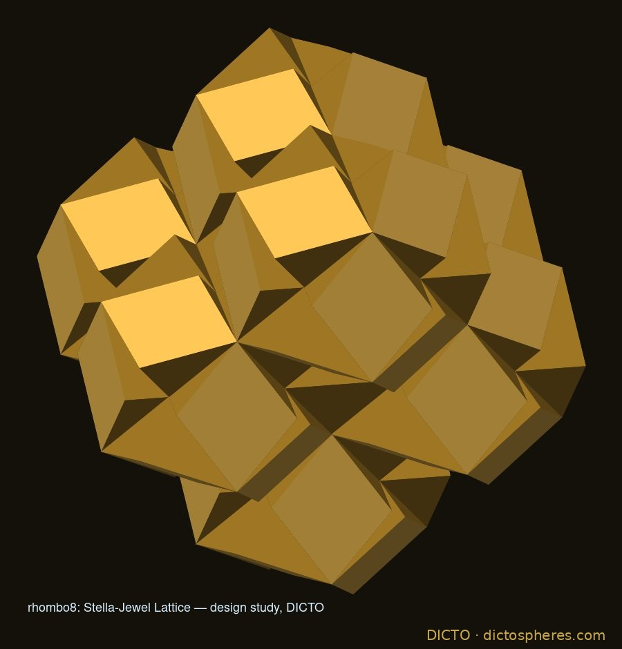
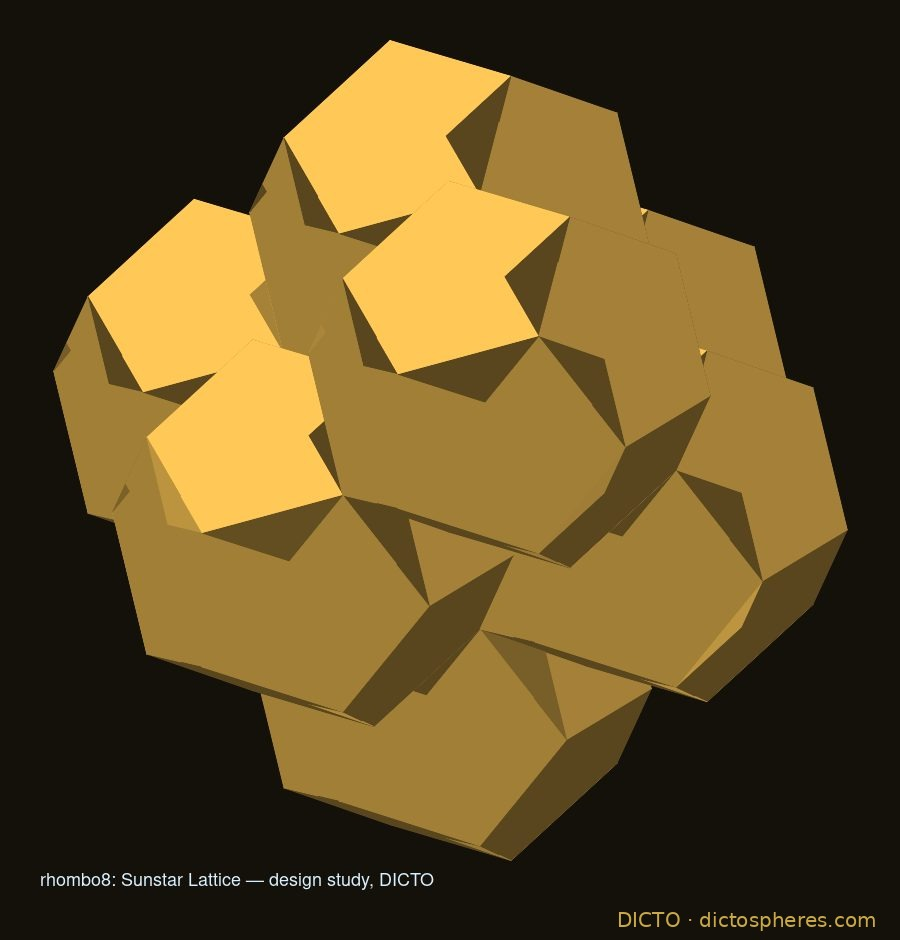
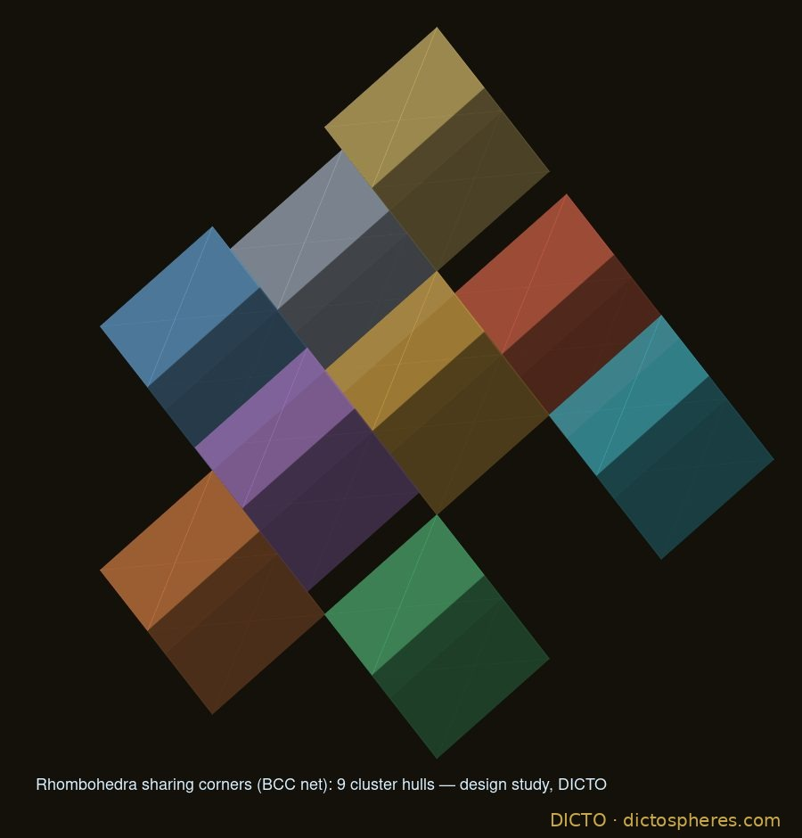
Figure 7.1. The rhombohedral hull: as DICTO Jewels; as dodecahedra in the Sunstar Lattice; its corner-sharing network (BCC), each hull a colour. From #17, Figures 1–3.
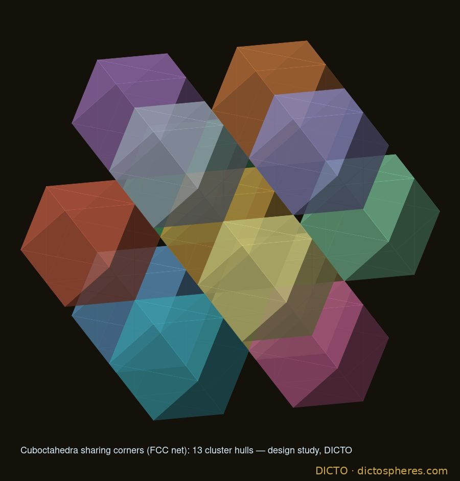
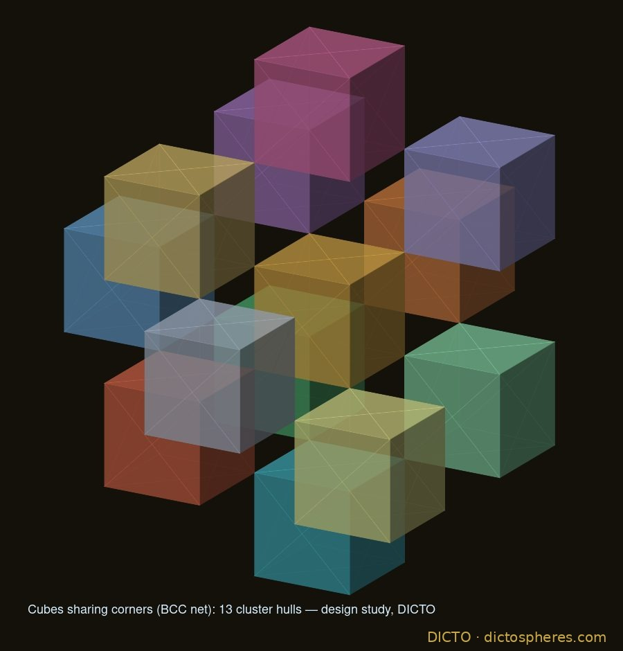
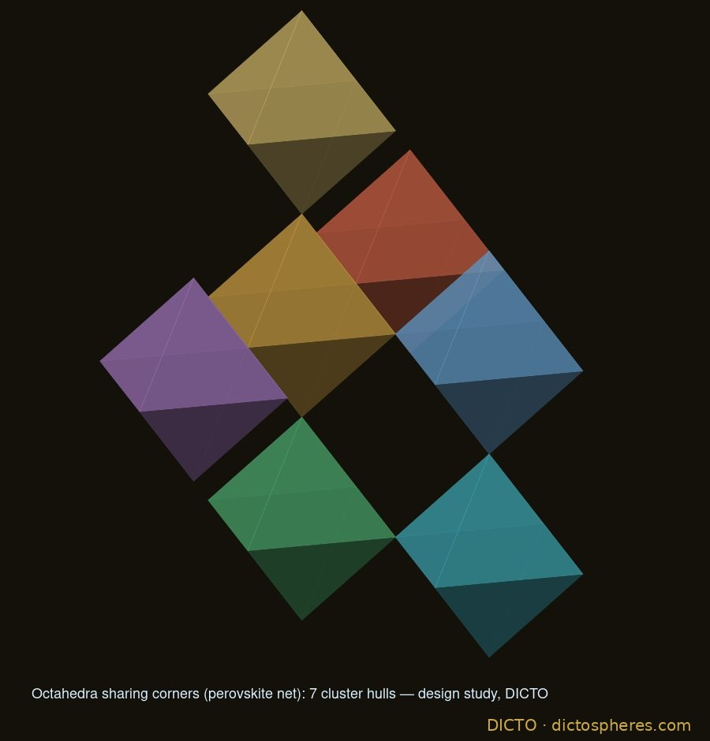
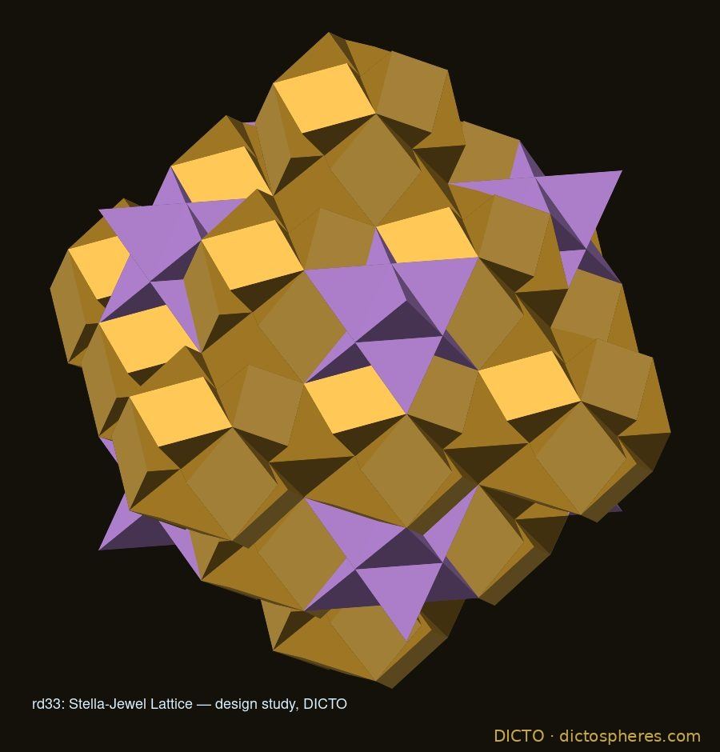
Figure 7.2. Cuboctahedra sharing corners (FCC); cubes sharing corners (BCC); octahedra sharing corners (simple cubic, the perovskite net); the rhombic-dodecahedral hull in the Stella–Jewel Lattice, its corner stellas in violet. From #17, Figures 4–7.
2. The icosahedral exception
The 13-dodecahedron cluster, a regular dodecahedron with one on each face, its gaps filled (the DICTO Dodeca-13, DICTO DOI 10.5281/zenodo.23284281), has a hull with 12 corners, the outer dodecahedra. By the rule it should have 12 neighbours.
Proposition 7.2 (#17, § 4). Clusters sharing one outer dodecahedron of the Dodeca-13 (a regular dodecahedron with one on each face, its gaps filled) can meet only across opposite faces, by a shift of 4 × the inradius along a five-fold axis. Neighbours on adjacent five-fold axes (63.43° apart) always overlap; on axes 116.57° apart they never do. So a cluster has at most 3 corner-sharing neighbours (20 such sets, one per three-fold direction), and no lattice exists: every lattice generated by three five-fold shifts overlaps, and only the chain along one axis repeats.
Face to face, the only repeating structure is a column of mirror-image clusters along a five-fold axis (spacing 6 × the inradius). Twelve corners, at most three neighbours, never a lattice: the rule breaks where icosahedral symmetry meets periodic space. The solid cuboctahedral hull (13 pieces, 12 neighbours, FCC) is its periodic twin; as Jewels it is the DICTO Jewel 13 of Chapter 4, where the same blocks tile the Jewel sites by a perfect code instead of sharing corners. The Dodeca-13's densest stacking is body-centred cubic (density 0.71537, blocks touching only edge to edge), and the gap left is one connected labyrinth.
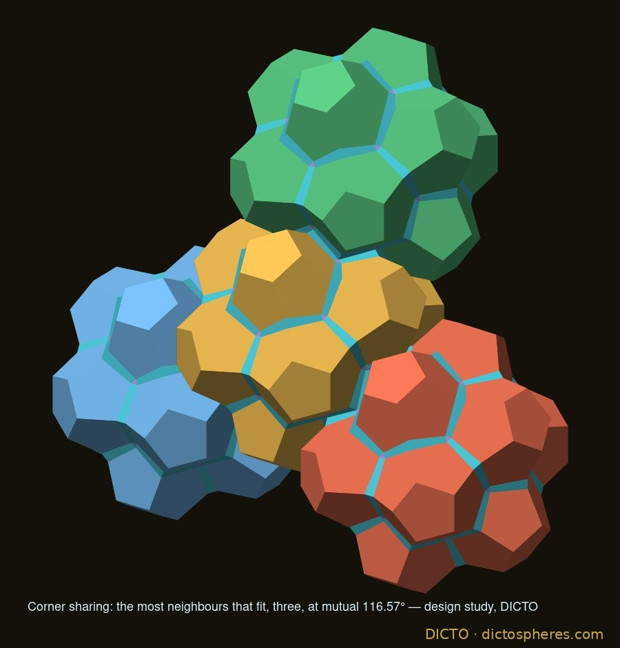
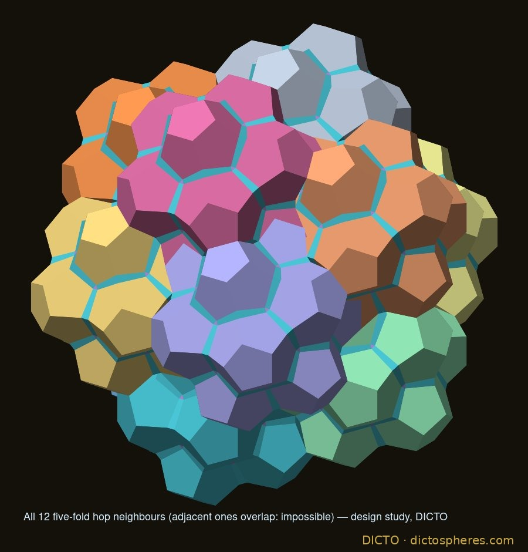
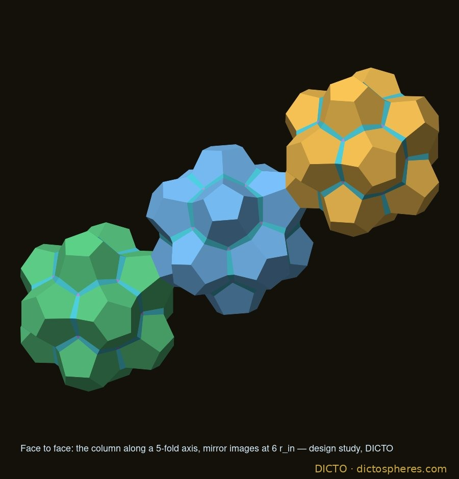
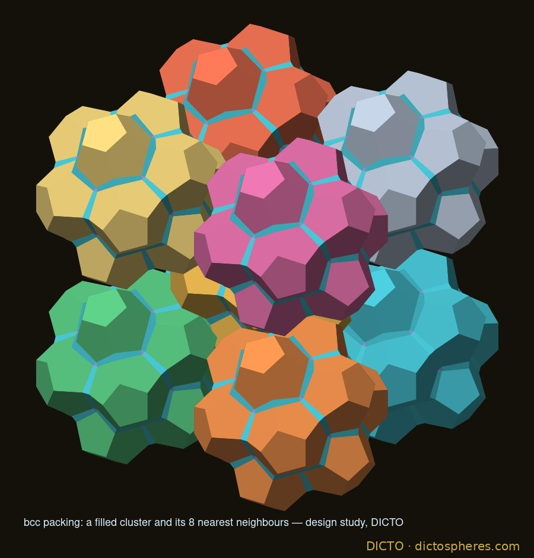
Figure 7.3. The icosahedral exception: the most corner-sharing neighbours that fit, three, at mutual 116.57°; all 12 five-fold neighbours at once, adjacent ones overlapping; the face-to-face column along a five-fold axis; the densest stacking, bcc. From #17, Figures 8–11.
3. The DICTO Hexa and the Hexa-Key
DICTO first saw the cube in Kaleidohedra's Studies world, "beautiful and solid, like carved out of wood", about eight Jewels in volume. Eight DICTO Hexa Jewels, exact Jewels on a 2 × 2 × 2 block of cells, unsheared, pass through each other inside the block and form one solid, the DICTO Hexa.
Theorem 7.3 (the Hexa and the Hexa-Key; #18, proved exactly in #41, § 4). As one solid, the Hexa, eight Jewels on a 2 × 2 × 2 block of cells, is the block with 24 carved roofs on its faces: 1 + 24/96 = 5/4 at the scale of Chapter 5 (block edge 1), six and two-thirds Jewels; at cube edge 2 per cell, a cube of edge 4 with 24 outward roofs, volume 80. Put Hexas on alternate blocks, rock-salt fashion; each other block is then entered by 24 roofs, four through each face, from its six neighbouring Hexas, and what is left is one solid, the DICTO Hexa-Key: 1 − 24/96 = 3/4 (48 at cube edge 2), the volume of four Jewels, eight stella octangulas joined by twelve double roofs across the inner cell faces, 8/16 + 12 × 2/96 = 3/4. Its 24 recesses are exactly the Hexas' 24 roofs, so Hexas and Hexa-Keys fill space, 5 : 3. Each Hexa meets each of its 12 neighbours on exactly two whole windows (24 in all), and no two Hexas' roofs overlap.
Proof (as in #41). Inside the block the eight Jewels overlap (by 16 in total at cube edge 2); outside it, each of the 24 outer cell faces carries its Jewel's carved roof, of exactly 1/96. The Hexa-Key count follows from Theorem 5.2: each of its cells is a stella and the roofs entering it. All in ℚ(√5) (jewel_exact.py). ∎ #18 had checked the volumes and the 24 windows numerically (16 checks, krp-core v0.16.0); #41 made them exact.
The same pattern one level up. A cell with six carved roofs added is a Jewel (1/8 + 6/96), with six taken away a stella (1/8 − 6/96); a block with 24 carved roofs added is a Hexa, with 24 taken away a Hexa-Key; and both levels sit in the rock-salt pattern, 3 : 1 below and 5 : 3 above. In the Sunstar Lattice the same construction gives the Sunstar-Hexa and Sunstar-Hexa-Key of Chapter 6, in the irrational ratio (17 + 4√5)/11.
Proposition 7.4 (#18, § 2). No shear makes eight exact Jewels meet face to face as a cube: the Hexa exists only as overlapping exact Jewels.
Reason (as in #18). The lattice shear is symmetric, and no symmetric map takes the cube's edges to the Jewels' contact directions (even two of the three fail). Shearing the Jewels themselves (a three-fold squash) loses the 72° windows, and was not kept.
Parts, clusters and turns (#18, §§ 4–5). The Hexa splits without overlap into 8 cubes and 24 roofs (split A), or into 4 whole Jewels and 4 trimmed Jewels (split B; a trimmed Jewel has 3 roofs removed, leaving 3 dents, and its volume is exactly one cube, 8 at cube edge 2); the Hexa-Key splits into 8 stellas and 24 roofs. Eight Hexas make two clusters: rhombohedral (window to window, 36 whole windows shared, a Hexa-Key sealed inside, volume 688 = 57⅓ Jewels: the Jewel rhombohedron of § 1 one level up) and diamond (Hexas sharing 7 corner Jewels, volume 556). Every Jewel in exactly two Hexas, Kagome style, is impossible, since corner neighbours force overlapping blocks; the best is the diamond network, each Hexa sharing 4 of its 8 corner Hexa Jewels with 4 neighbours, with stella octangulas filling every cell between them exactly, so Hexas and stellas fill space with no single Jewels. No join in these packings can be turned by its face's symmetry and still fit; turns exist only for a piece hanging on one neighbour (on a window: 180° and one flip).
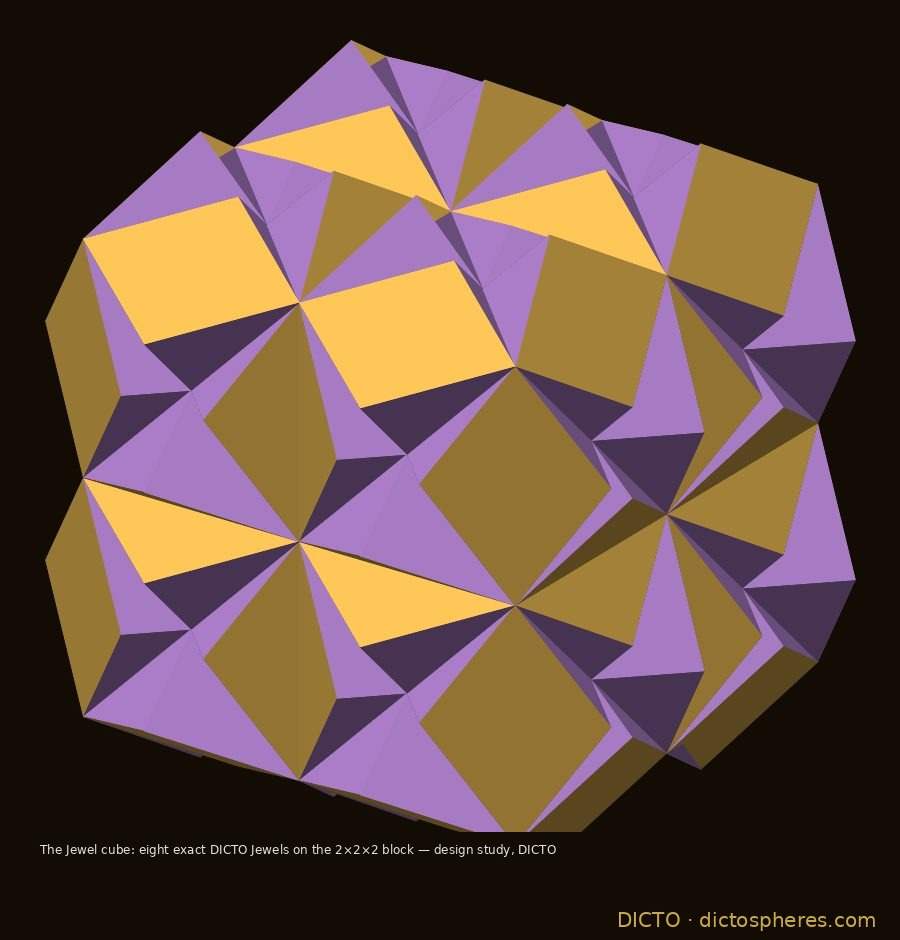
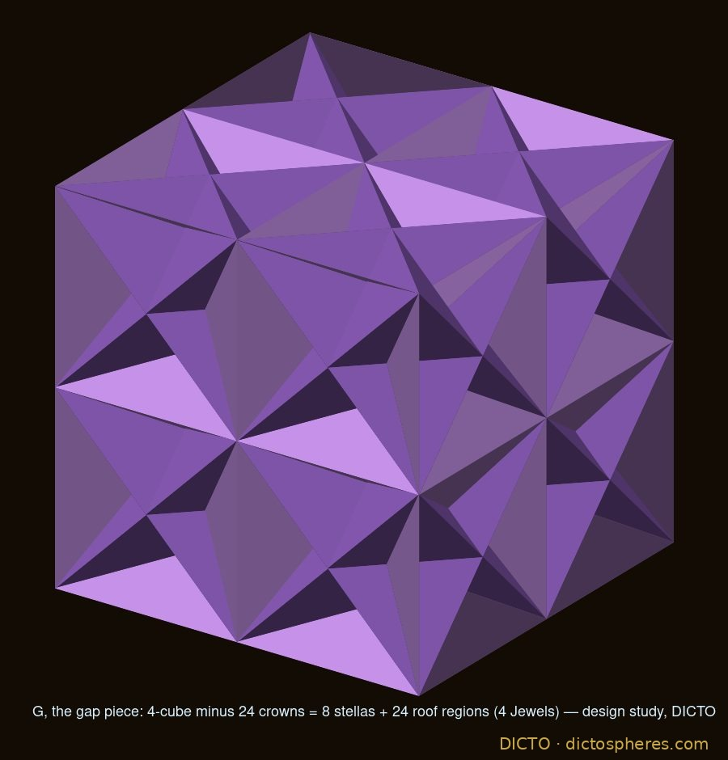
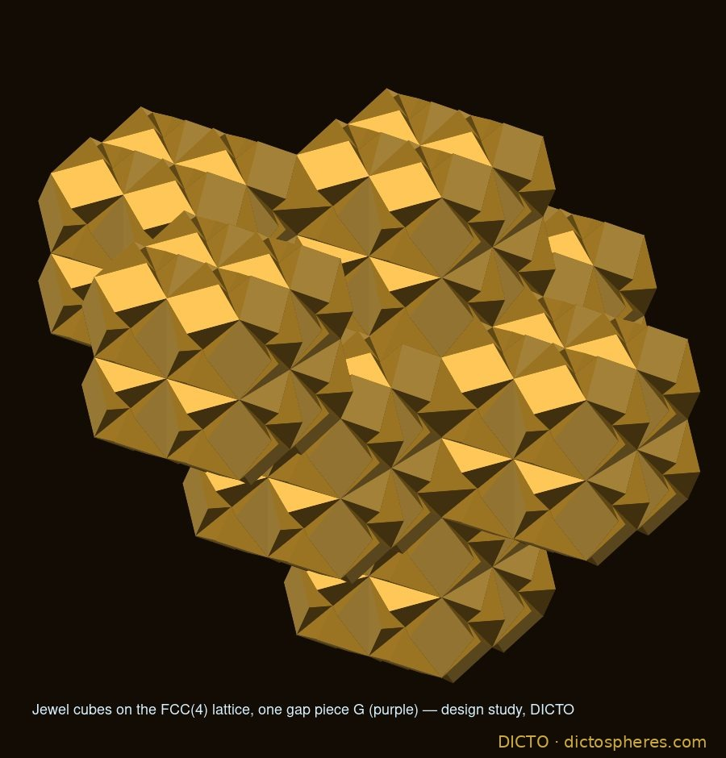
Figure 7.4. The DICTO Hexa: 8 DICTO Hexa Jewels (exact DICTO Jewels on a 2 × 2 × 2 block), no shear; the DICTO Hexa-Key, 8 stella octangulas and 12 double roofs; Hexas on the FCC lattice with one Hexa-Key. From #18, Figures 1, 3 and 6.
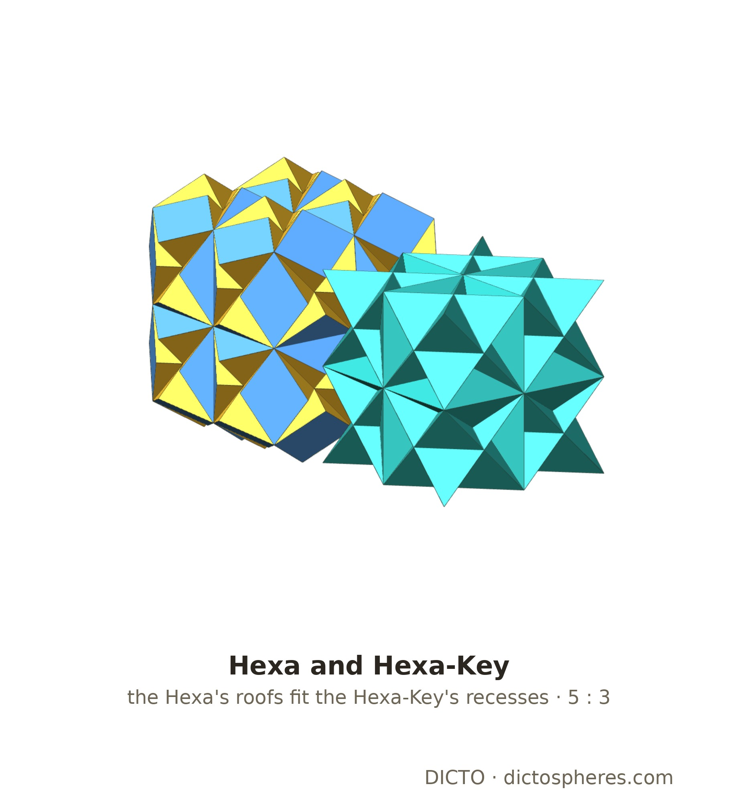
Figure 7.5. A Hexa and the Hexa-Key next to it in their 5 : 3 filling, drawn out a little: the Hexa's roofs go into the Hexa-Key's recesses. From #41, Figure 3.
Known and credited. Corner-sharing octahedra (the ReO₃ and perovskite structures); corner-sharing tetrahedra (the pyrochlore lattice, stacked Kagome layers); corner-coalesced cube nets in framework chemistry (Molecules 24(7) (2019) 1221); the FCC primitive cell as a rhombohedron (standard crystallography); the honeycomb of dodecahedra and Dogstars (Hart 1996; Walser); the 10.3° frustration of three dodecahedra round an edge and Mackay-type icosahedral clusters (Sadoc and Mosseri 1999); the space filling by stella octangulas and octahedra; the cube, octahedron and stella octangula inscribed in the rhombic dodecahedron; the FCC primitive cell as a cube squashed along a diagonal. The window rhombus is one of the ten pieces of Lalvani's building system (US 4,723,382, 1988), but the Jewel is not: its 48 walls lie in the stellas' planes along the cube's face diagonals, 22.24° off every icosahedral two-fold axis, and the patent has no stella octangula, carving or cube–dodecahedron construction. Pearce's minimum-inventory building system (US 3,974,600, 1976) is a framework of struts with panels, not solid pieces. Not found: the rhombohedral, cuboctahedral and rhombic-dodecahedral nets as regroupings of a space filling; the clusters of Jewels and of dodecahedra; the rule across the six hulls; the icosahedral exception; a cube built from carved dodecahedra, or this block of eight. This is not proof of novelty, and #17 and #18 make no claim of priority.
Sources checked (as in #17 § 5 and #18 § 6): a web search on 9 October 2026 and the reference library on 15 October 2026, for both papers; read and cited: Hart, Tetrahedral stellations of the dodecahedron (1996); Polyhedra-World, two curious equifacial dodecahedra (2004, updated 2012); Walser, Regular and semi-regular dodecahedra fill space (2017); the corner-coalesced cube nets of Molecules 24(7) (2019) 1221; Betke and Henk (2000); Sadoc and Mosseri, Geometrical Frustration (1999); Lalvani, US 4,723,382 (1988); Pearce, US 3,974,600 (1976); Euclid, Elements XIII.17; Coxeter, Regular Polytopes (1973). The library items searched are not listed in #17 and #18.
Data: with #17, data/ (each hull in both lattices as a closed solid, raw scale at cube edge 2 per cell and unit scale, and each network's anchors and shares), data/checks-kagome-hulls.txt (18 checks) and data/checks-dicto-jewel-cluster.txt (25 checks); with #18, data/ (the Hexa unified, as Jewels, splits A and B; the Hexa-Key; both clusters) and data/checks-hexa.txt (16 checks: closed and outward surfaces; exact volumes, Hexa 80, Hexa-Key 48, clusters 688 and 556, trimmed Jewel 8, roof 2/3; 24 whole Jewel windows); exact proofs in studies/2026-10-20-dicto-jewel (jewel_exact.py). Both first released inside Kaleidohedra v2026.10.11-octet (DICTO DOI 10.5281/zenodo.23284390).
Chapter 8 · Every Mix of the Platonic Solids Fills Space
For each of the 31 sets of Platonic solids of edge 1 there is a filling of space that uses exactly those solids, with connectors from a kit of seven pieces; cubes, tetrahedra and octahedra fill space together with no connector, but never face to face
First published as #47 (version 3, 6 November 2026), DICTO DOI 10.5281/zenodo.23551326. Retold here in this book's story; the theorems and numbers are those of #47, which is the record.
The Admiral Caps first appeared as finding F21 of Kaleidohedra, the lattice app of Chapter 3 (DICTO DOI: 10.5281/zenodo.23284390).
Chapter 7 ended with eight Jewels that no shear brings face to face. The same refusal returns in this chapter, the summit of the book, where the question of Part I meets the partners of Part II: all five Platonic solids, in every one of their 31 mixes, fill space with connectors, and the one mix that needs no connector, cubes, tetrahedra and octahedra, never meets face to face. Of the five Platonic solids only the cube fills space alone, and only the tetrahedron with the octahedron fill it as a pair. Connect all of them in any combination. Choose any of the five, one, several or all, all with edges of the same length: they can always be packed together with no gaps at all, using a small fixed set of helper pieces, most of them cut from the solids themselves or taken from the earlier chapters: the Dogstar of Chapter 6, the star left between dodecahedra on alternate cubes, and the Admiral Caps, the six pieces that fill an octahedron round the icosahedron set inside it (Lemma 8.4).
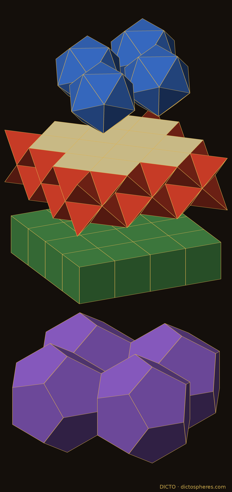
Figure 8.1. The mix of all five solids: the slabs stacked from bottom to top, drawn apart. Dodecahedra (violet), cubes (green), the octet of tetrahedra (red) and octahedra (yellow) with half octahedra on its faces (pale gold), and the icosahedra (blue) of the large octet. Left out so the solids show: the Dogstars and boundary pieces X, Y of the dodecahedron slab, the Admiral Caps round each icosahedron and the face pyramids Q′. Element colours as in DICTO's square. From #47, Figure 1.
1. The theorem
We write D, I, C, T and O for the dodecahedron, icosahedron, cube, tetrahedron and octahedron, the letters of DICTO (the key of DICTO's emblem), all regular and of edge 1, and φ = (1 + √5)/2. A mix is a non-empty set M of these five; there are 31. M fills space if there is a tiling of space (tiles with disjoint interiors covering space, finitely many meeting any bounded set) whose tiles are congruent copies of the solids of M, every solid of M used, together with congruent copies of finitely many other pieces, the connectors, none of them a Platonic solid of edge 1. Tiles need not meet face to face.
Theorem 8.1 (#47, Main theorem). Every one of the 31 mixes fills space with connectors from the kit K = {P, Q, Q′, A, S, X, Y} of Table 8.1. The tiling can be chosen as a stack of slabs between parallel planes, each slab periodic along its planes, and the stack periodic across them.
Connector
What it is
Volume
P
half octahedron of edge 1 (a square pyramid)
√2/6 ≈ 0.23570
Q
face pyramid of the tetrahedron of edge 1: a face joined to the centre (#44)
√2/48 ≈ 0.02946
Q′
Q at size L = φ²/√2 ≈ 1.8512
φ⁶/96 ≈ 0.18692
A
one of DICTO's six Admiral Caps: the octahedron of edge L minus the icosahedron of edge 1 in Pacioli's position, cut into its six congruent parts, one round each corner
φ/12 ≈ 0.13484
S
the Dogstar: a cube of edge φ minus six of Euclid's roofs, one on each face, pointing in (Chapter 6)
φ/2 ≈ 0.80902
X
a cube of edge φ minus one roof (on one face, pointing in)
φ³ − (1 + 3φ/2)/6 ≈ 3.66489
Y
a cube of edge φ plus one roof (on one face, pointing out)
φ³ + (1 + 3φ/2)/6 ≈ 4.80724
Table 8.1. The kit (#47, Table 1). A roof is one of Euclid's six roofs on the cube of edge φ that make the dodecahedron of edge 1; its volume is (1 + 3φ/2)/6 ≈ 0.57118. P, Q, Q′ and Y are convex (Y is the dodecahedron cut by the planes of five faces of its cube); A, S and X are not.
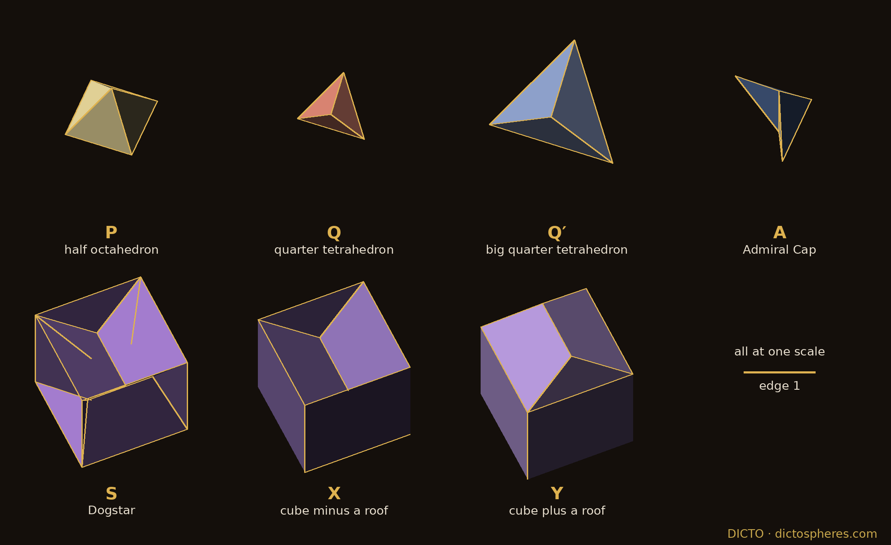
Figure 8.2. The seven connectors, all at one scale (bar: edge 1). P, half an octahedron; Q, a quarter of a tetrahedron (a face joined to the centre); Q′, the same at size φ²/√2; A, one of DICTO's Admiral Caps (four small triangles of the large octahedron's faces and two faces of the icosahedron inside it); S, the Dogstar, a cube of edge φ with Euclid's roof pressed into each face; X, the cube with one roof pressed in; Y, the cube with one roof added. From #47, Figure 2.
2. Proof: a layer cake
Each solid has its own way of filling space; make each of those into a layer with flat top and bottom, then stack the layers you need.
Lemma 8.1 (stacking; #47, Lemma 1). If slabs between parallel planes are each tiled (each slab turned so that its planes are horizontal), the slabs stacked in any order, and the stack repeated by translation across the planes, tile space.
Proof. Slabs with the same normal and adjacent faces on a common plane have disjoint interiors and their union is a thicker slab; repeating it by the translation of its thickness covers space. No face-to-face condition is needed across a plane. ∎ So it is enough to give, for each solid, a slab that contains it and otherwise only connectors from K.
Lemma 8.2 (cube slab; #47, Lemma 2). Edge-1 cubes tile any slab of integer thickness between planes parallel to a face. ∎
Lemma 8.3 (octet slab; #47, Lemma 3). Let s = 1/√2. The octet of edge 1 has its corners at the points s(x, y, z) with x + y + z even, an octahedron centred at every point with x + y + z odd and a tetrahedron on the four even corners of every cube of side s. For every integer k the plane z = ks is tiled exactly by the square equators (edge 1) of the octahedra centred in it. Hence for integers k < m the slab ks ≤ z ≤ ms is tiled by the whole tetrahedra and octahedra between, and by half octahedra P on its two faces. If O is not in the mix, each octahedron is cut into two P; if T is not, each tetrahedron into its four face pyramids Q.
Proof. The octahedra centred in the plane z = ks are those at s(x, y, k) with x + y + k odd; their equators are the squares |X − sx| + |Y − sy| ≤ s, centred on one colour of a checkerboard of spacing s, and these squares tile the plane. An octahedron centred at height js spans (j − 1)s ≤ z ≤ (j + 1)s, and a tetrahedron in a small cube spans js ≤ z ≤ (j + 1)s, so every tile not centred in a face plane lies entirely between two consecutive planes z = js. ∎
Lemma 8.4 (icosahedron slab; #47, Lemma 4). Let L = φ²/√2. The icosahedron of edge 1 with corners ½(0, ±1, ±φ) and their cyclic permutations lies in the regular octahedron |x| + |y| + |z| ≤ φ²/2, of edge L, with its twelve corners on the octahedron's edges, dividing each in the golden ratio; the rest of the octahedron consists of the six Admiral Caps A. In the octet of edge L, with octahedron = icosahedron + six A and tetrahedron = four Q′, the slab between two (111) layer planes is tiled by whole pieces.
Proof. Each corner ½(0, ±1, ±φ) has |x| + |y| + |z| = ½(1 + φ) = φ²/2, so it is on the octahedron's surface, and on the edge between two of its corners; the icosahedron, the convex hull of its corners, lies inside. The octet is a union of layers between consecutive planes parallel to a face of its tetrahedra, each layer made of whole tetrahedra and octahedra. ∎ The icosahedron in the octahedron is Pacioli's figure (1509).
Lemma 8.5 (dodecahedron slab; #47, Lemma 5). In the cubic lattice of edge φ, take three layers of cubes. In the middle layer put a dodecahedron of edge 1 (the cube with Euclid's six roofs) on every other cube and a Dogstar S in the rest. In the two outer layers, put X next to a dodecahedron (the cube minus the roof that pokes into it) and Y next to a Dogstar (the cube plus the roof that pokes into the Dogstar). This tiles the slab of thickness 3φ, and its faces are flat.
Proof. A roof has its base on a face of its cube and height ½ < φ, so it lies inside the cube across that face. Dodecahedra on alternate cubes, with the Dogstars as what is left of the other cubes, tile space (Hart 1996; exact in Theorem 6.1). In the slab, the middle-layer cubes keep that arrangement; a Dogstar's top and bottom roofs, which in the full tiling belong to dodecahedra above and below, are here the roofs of the Y pieces, so every Dogstar is a whole S. An outer cube next to a dodecahedron loses exactly the roof that pokes in (X); one next to a Dogstar gains exactly the roof that pokes into the Dogstar (Y). Roofs lie on inner faces only, so the outer faces of the slab are flat squares. ∎
Proof of Theorem 8.1. Given a mix M, take one slab for each world that M needs: the dodecahedron slab if D ∈ M; a cube slab if C ∈ M; an octet slab if T or O is in M, with the solids not in M cut into P or Q; the icosahedron slab if I ∈ M. Stack them (Lemma 8.1). Every solid of M occurs, and the only edge-1 Platonic solids that occur as tiles are those of M (where two half octahedra P meet base to base across a slab face their union is an octahedron, but they are two tiles, as the definition counts them), since the solids not in M are cut into connectors and the large octet's pieces have edge L. The connectors used are all in K. ∎
Verification (numerical spot check). mixes3.py builds the stack for each of the 31 mixes and tests 40 000 random points through the whole stack, writing each piece as a signed sum of convex parts (Dogstar = cube − 6 roofs, X = cube − roof, Y = cube + roof, octahedron of edge L = icosahedron + caps): every point is covered with total exactly 1, no two dodecahedra overlap, and each mix uses exactly its own solids. volumes.py checks the volumes of Table 8.1. The connectors each mix uses are listed in Appendix A of #47; a mix of one solid also fills space without slab faces: the tetrahedron with P, the octahedron with Q, the dodecahedron with S, the icosahedron with A and Q′.
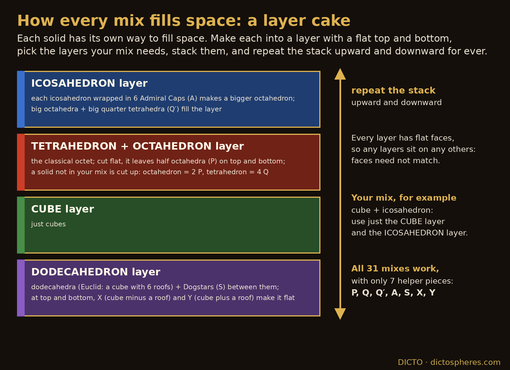
Figure 8.3. The proof in one picture: each solid's world becomes a layer with flat faces; a mix uses the layers it needs, stacked and repeated. From #47, Figure 3.
3. Who needs a connector, and three solids with none
Corollary 8.1 (who needs a connector; #47, Corollary 1). The cube fills space alone, and so do the tetrahedron and the octahedron together (the octet). Every mix containing D or I, and the mixes T, O, C + T and C + O, need a connector: in a tiling by these solids alone, the counting map of #44 (a function h on dihedral angles, additive over rational combinations, with h(π) = 0, so that at almost every point of an edge of a tiling, where the angles add up to 2π or π, their values of h add up to 0) gives a contradiction at an edge (the map exists because π, α, θD and θI are linearly independent over the rationals, Lemma 2 of #44) (h(θD) = 1 or h(θI) = 1 for D and I; h(α) = 1, where the tetrahedron's edges carry +1, the octahedron's −1 and the cube's 0, for the other four).
For one or two solids this is already known: Gabbrielli, Jiao and Torquato (2012) show from the dihedral angles that, apart from cubes, the only pair of Platonic solids that tiles space is the tetrahedron with the octahedron, with faces matching or not; the counting map of #44 (Aristotle's Pyramid, DICTO DOI 10.5281/zenodo.23529497) gives a second proof and also covers the mixes of three or more solids with D or I. It is the same edge ledger that Dehn's invariant keeps in Chapter 1, read for whole solids.
Theorem 8.2 (C + T + O with no connector; #47, Theorem 2, Version 3). Cubes, tetrahedra and octahedra of edge 1 fill space together with no connector. No such tiling is face to face.
Proof. The octet's corners are the points of the face-centred cubic lattice, and its close-packed planes (triangular lattices of edge 1, spacing √(2/3)) cut it into layers: every octahedron has one face on a plane and the opposite face on the next, and every tetrahedron a face on one plane and its apex on the next, so no tile crosses a plane and each layer is a slab between two flat planes. Cubes of edge 1 make flat slabs as well. Tiles need not meet face to face, so any stack of octet layers and cube layers is a tiling, and it uses all three solids. (Check: three octet layers between cube slabs, 864 tetrahedra, 409 octahedra and 576 cubes, every edge measured; 200 000 random points each lie in exactly one tile.) For the second claim: in a face-to-face tiling with no connector, a cube's square face must be a whole face of its neighbour, and among C, T and O only the cube has a square face; so every face-neighbour of a cube is a cube, and since the tiles are connected through faces, a tiling that contains a cube contains nothing else. ∎
The stack of Theorem 8.2 is periodic across the slabs and along each slab, but not in three independent directions: a cube slab repeats along a square lattice of edge 1 (or a sheared one), an octet layer along a triangular lattice of edge 1, and the two share no second period, because the triangular lattice's rows are √3/2 apart. The octet layers here are the same (111) layers whose interlocking Chapter 10 studies.
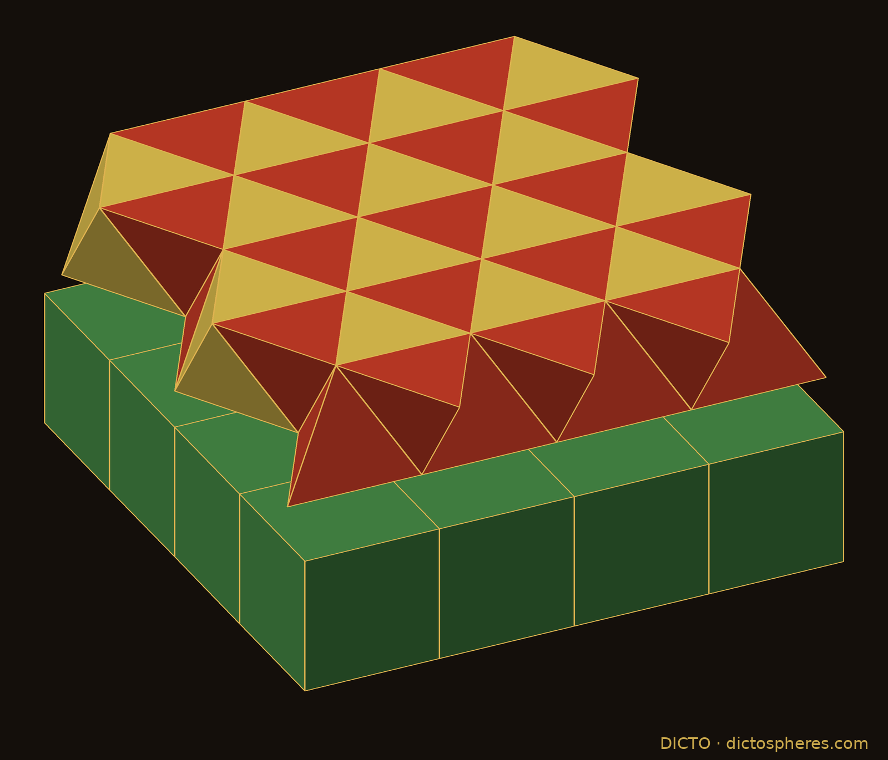
Figure 8.4. Theorem 8.2: cubes (green) in a flat slab; above, one layer of the octet cut along its triangle planes, tetrahedra (red) and octahedra (yellow), lifted slightly to show the seam. The layer is flat on both sides, so it rests on the cubes with no connector; its top is again a flat plane of triangles, ready for the next layer of either kind. From #47, Figure 5.
Corollary 8.2 (all five; #47, Corollary 2). All five Platonic solids of edge 1 fill space together with the six connectors P, Q′, A, S, X and Y.
Corollary 8.3 (equal volumes; #47, Corollary 3). The six Admiral Caps of one icosahedron (what is left of the octahedron of edge L round it, Lemma 8.4) and one Dogstar (S of Table 8.1) have the same volume, φ/2: the octahedron of edge L has volume φ⁶/6 = (8φ + 5)/6 and the icosahedron 5φ²/6 = (5φ + 5)/6, while the Dogstar, the cube φ³ = 2φ + 1 minus six roofs, has volume 2φ³ − (2 + 7φ/2), twice the cube minus the dodecahedron.
#47 notes the coincidence and knows no reason for it. Open: the smallest kit that serves all 31 mixes (seven connectors suffice; Corollary 8.1 shows that at least one is needed); the same with tiles meeting face to face; and whether every mix fills space by a tiling periodic in three independent directions (the slabs' periods along the planes, built on 1, φ and φ²/√2, need not match).
4. DICTO's bridges
Possible bridges: pieces like DICTO's RVCMG adaptors, which already join hexagons, scutoid-like forms with different polygons at the two ends, and a truncated tetrahedron with roofs. The flat slabs made these unnecessary for the theorem, but they matter for the face-to-face case. Two classical fillings agree with the truncated-tetrahedron bridge: tetrahedra and truncated tetrahedra fill space, and so do octahedra and cuboctahedra, all of edge 1 (the uniform honeycombs). A different line lies outside this chapter: solids placed in any arrangement, randomly packed rather than stacked, need not fill space, but can they always be joined to one another? That is connection rather than tiling, which the RVCMG adaptor pieces are designed to answer. Chapter 9 takes one slab of the proof, the Admiral layer of Lemma 8.4, and shows that in it only the mixture fills.
5. After this chapter: one world
#106, One World for the Platonic Solids (DICTO DOI: 10.5281/zenodo.24126400), follows #47. When each solid may take its own size (the dodecahedron of edge 1; the cube, tetrahedron and octahedron of edge φ; the icosahedron of edge √2/φ), every one of the 31 mixes fills space in two worlds, a cubic grid and one octet, which meet in a single flat seam face to face; the kit shrinks to six connectors, as #47's Q′ disappears. #106 then puts every solid in a skin that makes it a dodecahedron, so that every mix lives on one cubic grid with no layers. #106's tilings use connectors, so Theorem 8.2, which concerns tilings by cubes, tetrahedra and octahedra with none, stands as stated.
Known, credited. The octet of tetrahedra and octahedra (Maurolico; Lagarias and Zong 2012); Pacioli's icosahedron in the octahedron (1509); Euclid's dodecahedron from the cube and six roofs (Elements XIII.17); the tiling by dodecahedra and Dogstars (Hart 1996); that the cube is the only Platonic solid that tiles space alone (Torquato and Jiao 2009); that, apart from cubes, the tetrahedron with the octahedron is the only pair of Platonic solids that tiles space (Gabbrielli, Jiao and Torquato 2012, who extend the tetrahedron–octahedron tilings of Conway, Jiao and Torquato 2011); the uniform honeycombs of § 4. How the regular solids fit together in space is a theme that goes back to Kepler's Harmonices mundi, Book II (1619). DICTO's earlier work, cited: the face pyramids and the counting map (#44); the Admiral Caps and the icosahedral octet (F21); the exact Sunstar Lattice (#42, Chapter 6). Proved in #47: Theorem 8.1 with Lemmas 8.1–8.5, Theorem 8.2 and Corollaries 8.1–8.3. Checked by computer: all 31 stacks (random points, signed convex parts) and the volumes of Table 8.1. In the sources checked no construction was found that fills space with every mix of the Platonic solids; the closest are the classical fillings above, Gabbrielli, Jiao and Torquato's classification of pairs and Torquato and Jiao's remark that only the cube tiles alone. For Version 3, Gabbrielli, Jiao and Torquato was read in full again (library copy): they settle pairs of Platonic solids and periodic tilings without cubes, and do not treat cubes together with tetrahedra and octahedra; Theorem 8.2 was not found, and it is a short consequence of the octet's layering, which is classical.
Sources checked (as in #47, § 7 and Appendix B): the reference library DICTOR-Master/kaleidohedra-references, commit d73a679, whose manifests list 280 entries, 101 with a local file, giving the 90 distinct sources with a text layer listed below and 13 page images; the 90 searched in full text on 22 October 2026 for five Platonic, all five, Platonic solids, regular polyhedra, honeycomb, fill space, fills space, space-filling, tile space, tiles space, tiling of space, tessellat, two regular polyhedra, mixture, binary, octet, tetrahedra and octahedra, dihedral angle, Dogstar, Pacioli, Kepler, Harmonices, congruentia, Sommerville, Goldberg, Conway, Hart and Aristotle (relevant hits: Gabbrielli, Jiao and Torquato; Torquato and Jiao; Lagarias and Zong; Kepler; Pacioli; the binary crystal of tetrahedra and octahedra of Cadotte, Dshemuchadse, Damasceno, Newman and Glotzer; the dihedral-angle relations of Conway, Radin and Sadun; the tetrahedral-octahedral honeycomb (Wikipedia); the interlocking tetrahedra and octahedra of Akpanya et al.; none fills space with mixes that include the dodecahedron or the icosahedron). Not searched: the 13 page images without a text layer (the patents of Fuller, Snelson, Pearce, Baer, Hogan, Bergman and Lalvani, and Fedorov 1885) and the 179 link-only entries (Conway, Jiao and Torquato 2011 among them). Web searches on 22 October 2026 for tilings of space by all five Platonic solids, by mixtures of Platonic solids with extra pieces, and by dodecahedra or icosahedra with other polyhedra. The 90 library sources: Luca Pacioli, Leonardo da Vinci (ill.) (1509), Divina proportione; Albrecht Dürer (1525), Underweysung der Messung mit dem Zirckel und Richtscheyt; Wenzel Jamnitzer, Jost Amman (engr.) (1568), Perspectiva corporum regularium; Johannes Kepler (1596), Prodromus dissertationum cosmographicarum continens Mysterium cosmographicum; Johannes Kepler (1619), Harmonices mundi libri V; Euclid, T. L. Heath (tr.) (1908), The Thirteen Books of Euclid's Elements, Vol. III (Books X-XIII); M. Goldberg (1937), A class of multi-symmetric polyhedra; Haresh Lalvani (1990), Transformational part-count in layered octahedral-tetrahedral truss configurations (NASA TM-102635); C. Rovelli, L. Smolin (1995), Discreteness of area and volume in quantum gravity; P. W. Messer (1995), Stellations of the rhombic triacontahedron and beyond; C. Rovelli (1998), Loop quantum gravity (Living Reviews in Relativity 1998-1); M. Baake, F. Gähler (1998), Symmetry structure of the Elser-Sloane quasicrystal; T. C. Hales (1998), An overview of the Kepler conjecture; J. H. Conway, C. Radin, L. Sadun (1999), On angles whose squared trigonometric functions are rational; M. Baake (1999), A guide to mathematical quasicrystals; O. Ogievetsky, Z. Papadopolos (1999), On Quasiperiodic Space Tilings, Inflation and Dehn Invariants; U. Betke, M. Henk (1999), Densest lattice packings of 3-polytopes; Z. Papadopolos, O. Ogievetsky (1999), On Inflation Rules for Mosseri-Sadoc Tilings; Z. Papadopolos, O. Ogievetsky (1999), On quasiperiodic space tilings, inflation and Dehn invariants; R. V. Moody (2000), Model sets: a survey; M. Senechal (2004), Donald and the golden rhombohedra; K. Bezdek, Z. Langi, M. Naszodi, P. Papez (2007), Ball-polyhedra; Wikipedia contributors (2007 mirror) (2007), Kyushindo (2007 version); M. Koca, M. Al-Ajmi, N. O. Koca (2009), Grand antiprism and quaternions; M. Koca, M. Al-Ajmi, N. O. Koca (2009), Quaternionic representation of snub 24-cell and its dual polytope derived from E8 root system; S. Torquato, Y. Jiao (2009), Dense packings of polyhedra: Platonic and Archimedean solids; B. Grünbaum (2010), The Bilinski dodecahedron, and assorted parallelohedra, zonohedra, monohedra, isozonohedra and otherhedra; L. Freidel, S. Speziale (2010), Twisted geometries: a geometric parametrisation of SU(2) phase space; P. Kramer (2010), Gateways towards quasicrystals; A. M. Cutler, E. Schulte (2011), Regular polyhedra of index two, I; D. Frettlöh (2011), Icosahedral tilings in R3: the ABCK tilings (draft chapter); E. Bianchi, P. Doná, S. Speziale (2011), Polyhedra in loop quantum gravity; J. Koskinen (2011), Unusual tilings and transformations; J. de Graaf, R. van Roij, M. Dijkstra (2011), Dense regular packings of irregular non-convex particles; M. Koca, N. O. Koca, M. Al-Ajmi (2011), Branching of the W(H4) polytopes and their dual polytopes under the Coxeter groups W(A4) and W(H3) represented by quaternions; M. Koca, N. O. Koca, M. Al-Barwani (2011), Snub 24-cell derived from the Coxeter-Weyl group W(D4); T. Etzion (2011), Product constructions for perfect Lee codes; A. Garber, A. Gavrilyuk, A. Magazinov (2012), The Voronoi conjecture for parallelohedra with simply connected delta-surface; J. C. Lagarias, C. Zong (2012), Mysteries in packing regular tetrahedra; M. Baake, U. Grimm (2012), Mathematical diffraction of aperiodic structures; M. Koca, N. O. Koca, R. Koc (2012), Affine Coxeter group Wa(A4), quaternions, and decagonal quasicrystals; P. F. Damasceno, M. Engel, S. C. Glotzer (2012), Crystalline assemblies and densest packings of a family of truncated tetrahedra and the role of directional entropic forces; R. Gabbrielli, Y. Jiao, S. Torquato (2012), Families of tessellations of space by elementary polyhedra via retessellations of face-centered-cubic and related tilings; S. Torquato, Y. Jiao (2012), Organizing principles for dense packings of nonspherical hard particles: not all shapes are created equal; M. Kléman (2013), Defects in quasicrystals, revisited: I-flips, approximants, phason defects; N. Fujita, H. Takano, A. Yamamoto, A.-P. Tsai (2013), Cluster packing geometry for Al-based F-type icosahedral alloys; P.-P. Dechant, J. Wardman, T. Keef, R. Twarock (2014), Viruses and fullerenes: symmetry as a common thread?; A. Campello, G. C. Jorge, J. E. Strapasson, S. I. R. Costa (2015), Perfect codes in the lp metric; K. Deguchi, M. Nakayama, S. Matsukawa, K. Imura et al. (2015), Crystal structure of superconducting 1/1 cubic Au-Ge-Yb approximant with Tsai-type cluster; M. Baake, D. Damanik, U. Grimm (2015), What is aperiodic order?; M. Firsching (2015), Computing maximal copies of polytopes contained in a polytope; N. O. Koca, M. Koca, A. Al-Mukhaini, A. Al-Qanobi (2015), Quaternionic representations of the pyritohedral group, related polyhedra and lattices; R. Twarock, M. Valiunas, E. Zappa (2015), Orbits of crystallographic embedding of non-crystallographic groups and applications to virology; A. T. Cadotte, J. Dshemuchadse, P. F. Damasceno, R. S. Newman, S. C. Glotzer (2016), Self-assembly of a space-tessellating structure in the binary system of hard tetrahedra and octahedra; C. Hann, J. E. S. Socolar, P. J. Steinhardt (2016), Local growth of icosahedral quasicrystalline tilings; R. M. K. Dietl, J.-H. Eschenburg (2016), The icosahedral quasiperiodic tiling and its self-similarity; L. Montejano, E. Roldan-Pensado (2017), Meissner polyhedra; A. Stergiou (2018), Bootstrapping hypercubic and hypertetrahedral theories in three dimensions; A. Garber (2019), Voronoi conjecture for five-dimensional parallelohedra; D. Poland, S. Rychkov, A. Vichi (2019), The conformal bootstrap: theory, numerical techniques, and applications; R. Twarock, A. Luque (2019), Structural puzzles in virology solved with an overarching icosahedral design principle; S. Surya (2019), The causal set approach to quantum gravity; T. Ishimasa (2019), Icosahedral quasicrystal, 1/1 and 2/1 approximants in Zn-based ternary alloys containing Au and Yb/Tb; A. Al-Siyabi, N. O. Koca, M. Koca (2020), Icosahedral Polyhedra from D6 lattice and Danzer's ABCK tiling; M. Koca, R. Koc, N. O. Koca, A. Al-Siyabi (2020), Icosahedral tiling with dodecahedral structures; N. O. Koca, R. Koc, M. Koca, A. Al-Siyabi (2020), Dodecahedral Structures with Mosseri-Sadoc Tiles; V. R. Krishnamurthy, E. Akleman, S. G. Subramanian et al. (2020), Bi-axial woven tiles: interlocking space-filling shapes based on symmetries of bi-axial weaving patterns; V. R. Krishnamurthy, E. Akleman, S. G. Subramanian, M. Ebert, J. Cui, C. Fu, C. Starrett (2022), Geometrically interlocking space-filling tiling based on fabric weaves; B.-X. Lao, S. Rychkov (2023), 3D Ising CFT and exact diagonalization on icosahedron: the power of conformal perturbation theory; D. Smith, J. S. Myers, C. S. Kaplan, C. Goodman-Strauss (2023), An aperiodic monotile; R. Hynd (2023), The perimeter and volume of a Reuleaux polyhedron; R. Akpanya et al. (2024), Topologically interlocking blocks inside the tetroctahedrille; I. J. Dejter, L. R. Fuentes, C. A. Araujo (2025), Perfect truncated-metric codes in lattice graphs and superlattice graphs; S. Rychkov (2025), Conformal bootstrap: from Polyakov to our times; M. Kovačević (2026), An isodiametric theorem and lattice diameter-perfect codes in A3; R. Al Raisi, N. O. Koca, M. Koca, R. Koc (2026), Modified Mosseri-Sadoc tiles from D6; Wikipedia contributors (2026), Crystal twinning (incl. the spinel law); Wikipedia contributors (2026), Fullerene; Wikipedia contributors (2026), Goldberg polyhedron; Wikipedia contributors (2026), Kenshiro Abbe; Wikipedia contributors (2026), Kyūshindō; Wikipedia contributors (2026), Mitsusuke Harada; Wikipedia contributors (2026), n-flake (Sierpinski icosahedron); Wikipedia contributors (2026), Tetrahedral-octahedral honeycomb (incl. the gyrated form); (), Betke Henk 2000 Densest lattice packings of 3 polytopes; (), 54FacedSpaceFillingPolyhedron; (), ARhombicDodecahedronMadeOfRhombicTriacontahedra; (), ClusterOf14RhombicTriacontahedra; (), GoldenOctetTruss; (), RelatingARhombicTriacontahedronAndARhombicDodecahedron.
Study: studies/2026-10-22-platonic-mix-step1 (mixes.py, mixes2.py and caps.py, mixes3.py with logs; volumes.py; stack_figure.py, pieces_figure.py, cake_diagram.py and seam_figure.py), attached to #47 as platonic-mixes-study-cea1e4a.zip; the Version 3 check in studies/2026-11-06-cto-no-connectors.
Chapter 9 · The Admiral Cap Network: Only the Mixture Fills, and Never Face to Face
None of the three pieces of DICTO's Admiral Cap network, the icosahedron, the Admiral Cap and the small face pyramid, fills space alone; the network never meets face to face, and its best arrangements are layers with one free flip per layer
The Admiral Caps first appeared as finding F21 of Kaleidohedra, the lattice app of Chapter 3 (DICTO DOI: 10.5281/zenodo.23284390) and supply the Admiral slab of #47 (DICTO DOI: 10.5281/zenodo.23551326). The network fingerprint (#94's harmonic fingerprint read at every node of a whole network) starts with them, to look there for new solids.
Pacioli set an icosahedron inside an octahedron with its twelve corners on the octahedron's twelve edges. Six Admiral Caps, non-convex pieces of two tetrahedra each, fill the rest. Build a whole space frame of such octahedra, with tetrahedra between, and every icosahedron has two ways to sit. The question is whether the icosahedra can agree with all their neighbours.
1. The network
Let L = φ²/√2. In the octet of edge L every octahedron is the icosahedron I of edge 1 in Pacioli's position plus six Admiral Caps A, and every tetrahedron is four face pyramids Q′ (a face joined to the centre) (#47, Lemma 4; Lemma 8.4 of Chapter 8). Each Admiral Cap is two tetrahedra over an icosahedron edge with a dent between: it is not convex. The icosahedron's corners divide the octahedron's edges in the golden ratio, in one of two ways: the two golden twins, the two icosahedra of the pyritohedral pair (#90, #94). #47 uses one layer of this network; the study builds the whole three-dimensional network.
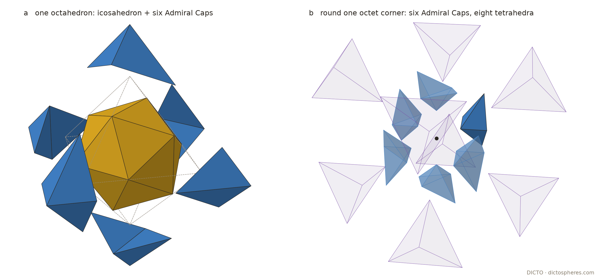
Figure 9.1. The pieces of the network. (a) One octahedron of the octet (dashed): Pacioli's icosahedron (gold), its corners on the twelve edges, and DICTO's six Admiral Caps (blue), each drawn apart along its own axis. Each cap is two tetrahedra over an icosahedron edge, with a dent between where the icosahedron sat. (b) Round one octet corner (black dot): the six Admiral Caps that meet there, one from each of the six octahedra (one solid, five as glass), and the eight tetrahedra between them (violet glass), all drawn apart from the corner. The render script checks that the icosahedron and its six caps make up the octahedron's volume 4/3 exactly.
2. No piece alone
Proposition 9.1. The face pyramid Q′ (a face of the tetrahedron of edge L = φ²/√2 joined to its centre), the icosahedron I of edge 1 and the Admiral Cap A (one of the six pieces that fill the octahedron of edge L round I in Pacioli's position) each have nonzero Dehn invariant. So none of them fills space alone (Debrunner), and none is scissors-congruent to a cube; only the mixture fills.
Proof. Q′, with base edge e: its three base edges have dihedral α/2 (the plane through an edge and the centre halves the tetrahedron's dihedral) and its three edges from the centre have dihedral 2π/3 (three pyramids round each corner axis). So D(Q′) = 3e ⊗ α/2 = (3e/2) ⊗ α ≠ 0; four of them give the tetrahedron's 6e ⊗ α, as they must. I: 30 edges of length 1 at θI = arccos(−√5/3); 2 cos θI = −2√5/3 is not an algebraic integer, so θI ∉ ℚπ and D(I) = 30 ⊗ θI ≠ 0. A: the octahedron of edge L is I plus six congruent caps (#47), so by additivity 6D(A) = 12L ⊗ (π − α) − 30 ⊗ θI = −12L ⊗ α − 30 ⊗ θI. Since L² = (3φ + 2)/2 is irrational, L and 1 are linearly independent over ℚ, and the sum could vanish only if α and θI were both rational multiples of π. They are not, so D(A) ≠ 0. ∎
The study's numerical Dehn screen (Appendix) found the same three nonzero values; the proof above replaces it. The mixture does fill, by #47's tiling (Chapter 8).
3. Frustration
Round each corner of the octet meet six octahedra, and the twelve edges from that corner are each shared by two of them. Call a shared edge matched if the two neighbouring icosahedra put their corner on that edge at the same point.
Proposition 9.2 (frustration). Whatever golden twin each of the six icosahedra round an octet corner takes, of the two ways its corners can divide the octahedron's edges in the golden ratio (2⁶ = 64 choices), at most 8 of the 12 shared edges are matched. So the Admiral Cap network (the octet of edge L with every octahedron an icosahedron and six Admiral Caps, every tetrahedron four face pyramids) is never face to face: round every corner at least four shared edges carry a T-junction, where a corner of one icosahedron lands inside an edge of a neighbour's pieces.
Proof (exhaustive). All 64 choices are checked exactly (study 2026-11-04-network-fingerprint, Result 1); the maximum is 8. ∎
Proposition 9.3 (the best arrangements are layers). (a) The bound 8/12 is reached at every corner at once, already with period 2 (four classes of octahedra; six optimal patterns, two classes per twin).
(b) For two different cube axes a, b of the octahedra's centres c, the patterns twin(c) = parity(ca) XOR f(cb), with f any function of the layer index cb, reach the bound: the twins alternate layer by layer along one axis, and each layer across a second axis may be flipped freely. So there are infinitely many best arrangements, one free bit per layer.
(c) On periodic boxes of side 4, every optimum found is of this form.
Proof (computation). (a) exhaustive on side 2. (b) all 96 such patterns on side 4 and all 384 on side 6 are checked optimal. (c) all 42 distinct optima met by simulated annealing on side 4 have the form of (b). Data: data/twin-ground-state.json. ∎
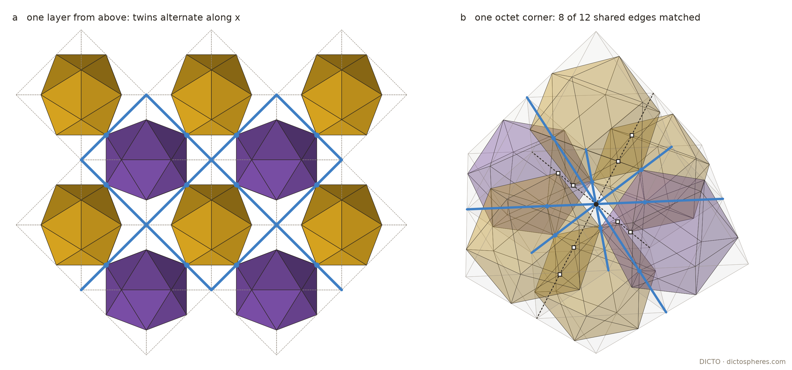
Figure 9.2. A best arrangement, twin(c) = parity(cx) (Proposition 9.3 (b) with f = 0). Icosahedra of one golden twin gold, of the other violet. Blue: a shared octahedron edge on which both icosahedra put their corner at the same point (dot). Dashed black: an edge where the two corners differ (two squares), a T-junction. (a) One horizontal layer of octahedra seen from above, their equators drawn dashed: the twins alternate along x, and every edge shown is matched, since each joins octahedra of two different twin layers. (b) The six octahedra round one octet corner (black dot): 8 of the 12 shared edges are matched, the bound of Proposition 9.2. The 4 T-junctions are the edges that lie in a plane x = constant, between two octahedra of the same twin layer; every edge that passes from one twin layer to the next is matched. The render script checks that all 63 interior octet corners of a 7 × 7 × 7 box have exactly 8 of 12 matched.
Completeness is not proved: there may be best arrangements of another form on larger boxes. The free bit per layer is a layer law of the kind met in the close-packed stackings (#92, DICTO DOI: 10.5281/zenodo.23931608), here on the cube's layers rather than the triangular ones. Frustration also explains why #47 uses the icosahedron world as a single slab: within one layer the twins can be chosen freely, because #47's tiles need not meet face to face.
4. The twin-boundary node
Where the twin pattern changes, two icosahedra share a corner, with six half-caps and two tetrahedra round it. In #94's harmonic fingerprint (the strengths Ql and Ŵl of a node's corner directions expanded in spherical harmonics) this node has Q4 ≈ 0.233, Q6 ≈ 0.239 and Ŵ6 ≈ −0.087, the most icosahedral-leaning node of the network; the octet corner itself sounds like the cuboctahedron, the fcc shell, when all twins agree (Q4 0.1909, Q6 0.5745) and slightly differently when they alternate (0.2016, 0.5821). The hull of the twin-boundary node's pieces (18 corners: 8 triangles, 4 quadrilaterals, 4 hexagons, symmetry of order 4) has mixed edges and low symmetry; it is recorded, not proposed as a new solid. The find is the node itself, the twin boundary of the network.
5. What is known, and what is new
Known, credited: Pacioli's icosahedron in the octahedron (Divina proportione, 1509); the octet; Debrunner's theorem; the fingerprint invariants of Steinhardt, Nelson and Ronchetti (via #94). DICTO's earlier work, cited: the Admiral Caps (F21) and their slab (#47). New here: Proposition 9.1 with exact proofs; the frustration bound 8/12; the layered best arrangements with a free bit per layer; the twin-boundary node.
Sources checked: no outside source was searched for the frustration or the layered arrangements; the study names a possible link to layered spin models with competing neighbours (ANNNI, Concordance 5.5), not yet read. Credits as in #47 and #94.
Study: studies/2026-11-04-network-fingerprint (README, data/twin-ground-state.json, admiral-*-fingerprint.json); studies/2026-11-04-dehn-screen (scripts/admiral_dehn.py, data/admiral-dehn.json). Open leads: prove completeness of Proposition 9.3; fingerprint the twin-boundary layers; whether a physical Admiral build prefers one layer word.
Part III · Held
Chapter 10: pieces that hold a layer together by shape alone
A filling says where every piece goes; it does not say whether the pieces stay. Part III asks which pieces of a single layer are trapped by their neighbours, so that the layer holds together with no glue.
Chapter 10 tests every piece of two layers against every small slide and twist: one (111) layer of the octet, and the Admiral layer, the icosahedron slab of Chapter 8 and one layer of the network of Chapter 9. In the octet layer the octahedra are locked and the tetrahedra lift out; in the Admiral layer only the face pyramids on its surface come out. The test and its calibrations are in the Appendix.
Chapter 10 · Held by Shape Alone: Interlocking in the Octet and Admiral Slabs
In a single (111) layer of the octet every octahedron is locked and every tetrahedron free; in the Admiral layer of #47 every Admiral Cap and icosahedron is locked against every small slide and twist, apart from the face pyramids on the layer's surface
First published as #101, Held by Shape Alone: The Octet's Mixed Layer and the Admiral Layer, DICTO DOI 10.5281/zenodo.24030328. #101 is the record.
First the interlocking test, among the unused tools of the Concordance (the series' grid of tests against families of solids), then the rotation check on the Admiral slab.
Chapter 9 showed that the Admiral network, icosahedra and Admiral Caps filling the octahedra of an octet, can never agree with itself: wherever the icosahedra turn, at most eight of every twelve shared edges match. A frustrated layer might be expected to fall apart at a touch. This chapter tests whether it does, and finds the opposite. A wall of bricks stands only by gravity and mortar. Some shapes do better: laid in one layer, each piece is held by its neighbours so that it cannot be slid or twisted out, and the layer holds itself together with no glue. Dyskin and his colleagues called this topological interlocking. It matters for anyone who builds these solids in cardboard or stone.
1. The test
A piece in a layer is locked if, with all its neighbours held fixed, no small rigid motion of it (a velocity v and a turning rate ω) avoids pressing into some neighbour. At every corner q of every contact polygon (the exact overlap of the two touching faces) the motion must satisfy (v + ω × (q − c))·n ≤ 0, n the piece's outward face normal. The piece is locked when only v = ω = 0 satisfies all of these; the study decides this by linear programming, separately for slides alone and for slides with twists (Appendix). The test is first-order: it rules out every small motion of one piece at a time.
2. The octet layer
Cut the octet between two neighbouring (111) planes. The layer holds octahedra with a face on each plane, and tetrahedra with a face on one plane and the opposite corner on the other, all meeting face to face (#47, #92).
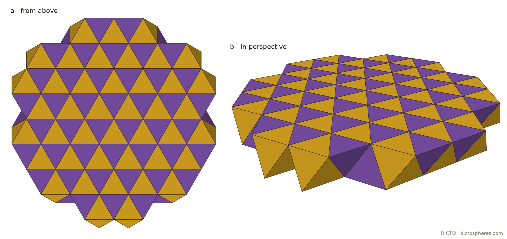
Figure 10.1. One (111) layer of the octet, octahedra gold, tetrahedra violet. (a) From above: the layer's surface is a pattern of triangles, the top faces of octahedra and of the tetrahedra that rest a face on this plane; the tetrahedra standing on the other plane reach this one only with a corner. (b) In perspective, showing the saw-tooth edge where the layer is cut off.
Proposition 10.1. In a single (111) layer of the octet every octahedron is locked, against slides and twists alike, and every tetrahedron is free: it can be lifted straight out through its face on the layer's surface.
Proof. Tetrahedra: let u be the outward normal of the face on the surface. Every other face has outward normal m with u·m = cos(π − α) = −1/3 < 0, so the motion v = u moves away from every neighbour. Octahedra: centre the octahedron at 0; its two faces on the planes are free, the other six are whole contact faces in three opposite pairs ±m. For a corner r of the face with normal m, the opposite face has the corner −r, and the two conditions (v + ω × r)·m ≤ 0 and (v − ω × r)·(−m) ≤ 0 add up to (ω × r)·m ≤ 0. The three corners of a face add up to a multiple of m, so these three numbers add up to 0 and each is 0. Then the conditions read v·m ≤ 0 and −v·m ≤ 0, so v·m = 0 for three independent m, and v = 0. And ω·((r − g) × m) = 0 for the corners r of the face, g its centre; the vectors (r − g) × m span the plane perpendicular to m, so ω is parallel to m, for three non-parallel m, and ω = 0. ∎
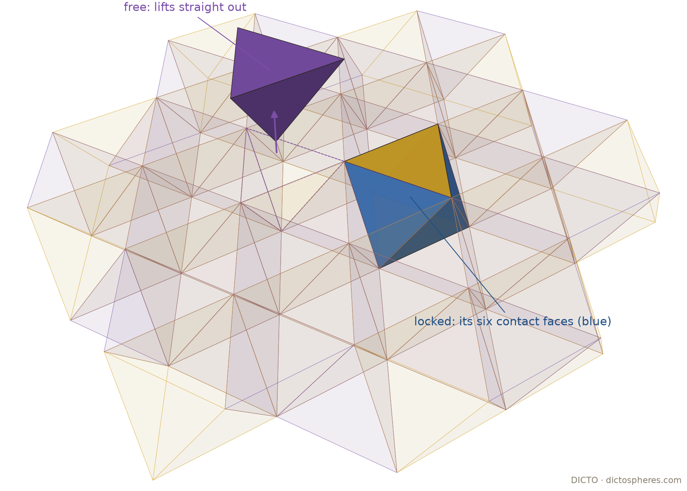
Figure 10.2. Proposition 10.1 in one picture. The layer as glass; one tetrahedron (violet) lifted straight out through its face on the top surface, its place dashed; one octahedron (gold) that cannot move, its six contact faces with the neighbouring tetrahedra in blue (three are hidden behind it), its top face on the free surface in gold. The contact polygons are the exact overlaps computed by the study's clipping code; for the octahedron they are its six whole side faces.
So the octet layer is not interlocking as a whole: its tetrahedra come out. Its octahedra are locked.
3. The Admiral layer of #47
The icosahedron slab of #47 (Lemma 4; Lemma 8.4 of Chapter 8, and one layer of the network of Chapter 9) is one (111) layer of the octet of edge L, its octahedra filled by icosahedra and Admiral Caps and its tetrahedra by face pyramids Q′. The same proof as for the octet's tetrahedra shows that a face pyramid whose base lies on the layer's surface can be lifted straight out: its other faces meet the base at the angle α/2, so their outward normals m satisfy u·m = −cos(α/2) < 0 for the outward normal u of the base.
Proposition 10.2 (computer check). In the Admiral layer of #47 (one (111) layer of the octet of edge φ²/√2, its octahedra filled by icosahedra of edge 1 and Admiral Caps, its tetrahedra by face pyramids), every interior Admiral Cap (each a rigid pair of tetrahedra) and every icosahedron is locked against all small slides and twists. Of the face pyramids tested, 18 are locked and 4, those resting on the layer's surface, are free.
Proof (computation). Exact contact polygons (Sutherland–Hodgman clipping of every pair of touching faces), then the linear programs of Section 1 in ℝ³ (slides) and ℝ⁶ (slides and twists), for the 21 interior Admiral Caps, 3 icosahedra and 22 face pyramids of the layer built from the engine data of #47. Calibration: the tetrahedron layer of Dyskin et al. (square midsections, neighbours turned 90°) gives all 21 interior blocks locked, as published; a layer of upright cubes gives every cube free. Slides alone and slides with twists give the same counts. ∎
Figure 10.3. The Admiral layer of #47 from the engine data: icosahedra gold, Admiral Caps blue, face pyramids violet. (a) The layer seen from above: each octahedron's top face is an icosahedron face framed by three Admiral Caps, each tetrahedron's top face the base of a face pyramid. (b) The layer as glass, seen nearly edge-on, one locked icosahedron solid; the four free face pyramids among those tested are lifted out, three through the lower surface and one through the upper, each along the normal of its base. All 18 locked face pyramids lie inside the layer.
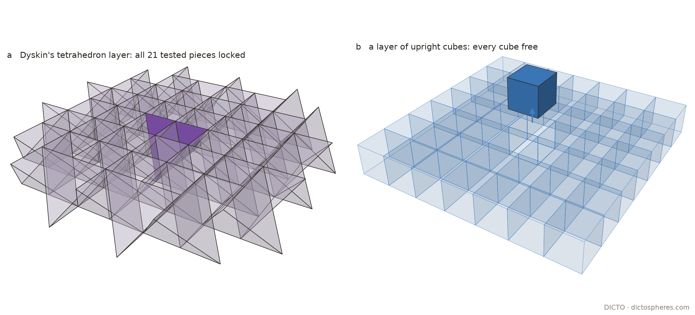
Figure 10.4. The two calibrations. (a) The tetrahedron layer of Dyskin et al.: square midsections tiling the plane, neighbours turned by 90°; every tested piece is locked, as published (one shown solid). (b) A layer of upright cubes: every cube is free and lifts straight out (all nine tested).
So the Admiral layer holds itself together by shape alone, apart from a skin of face pyramids on its two surfaces: relevant to building it in cardboard or stone without glue.
4. What is known, and what is new
Known, credited: topological interlocking, the interlocking tetrahedron layer and the interlocking layers of the other Platonic solids, octahedra included (Dyskin, Estrin, Kanel-Belov and Pasternak 2001, 2003); the tetrahedron and octahedron interlockings placed inside the tetrahedral–octahedral honeycomb, and interlocking blocks built from its tetrahedra and octahedra (Akpanya, Goertzen and Niemeyer 2024); the octet layers (#47, #92). So the locking of a layer of octahedra is known. New here: the mixed (111) slab of the octet itself, tetrahedra and octahedra together, with its split — every octahedron locked, every tetrahedron free (Proposition 10.1, not found in these sources), and the interlocking of the Admiral layer (Proposition 10.2).
Sources checked: Dyskin et al. (2003), used as the calibration case and reproduced. Akpanya, Goertzen and Niemeyer (2024, arXiv:2405.01944), read in the reference library copy on 7 November: their Figure 6 shows the tetrahedra- and octahedra-interlocking assemblies of Dyskin et al. inside the honeycomb; the mixed slab and the Admiral layer are not treated. The study's further counts for centre pyramids in the octet and cube layers are left to the Centre Pyramids volume, and the HexOct tiles' interlocking to HexOct: The Hexagonality Law.
Study: studies/2026-11-04-hopf-interlock (README parts (5), "Interlocking of DICTO's pieces", "ROTATIONS"; hopf_interlock.py, interlock_pieces.py, interlock_rot.py, admiral-network-pieces.json). Open leads: the same test on the Vacuus builds and the node and ring builds; which stacking layers lock their tetrahedra.
Closing · Back to the Brick
The book began with a brick, a solid that fills space alone, and asked which solids can do what a brick does.
Alone, very few. On the sweeps of Chapter 1, Dehn's test, helped once by the count of angles round an edge, leaves only the members that fill space by themselves, and of the five Platonic solids only the cube fills space alone.
Together, all of them. Every one of the 31 mixes of the five fills space with connectors from one kit of seven pieces, the Dogstar of Chapter 6 (the star between dodecahedra on alternate cubes) and the Admiral Caps round Pacioli's icosahedron among them (Chapter 8).
Held, some. In the Admiral layer every Admiral Cap and every icosahedron is locked against every small slide and twist, and only the small face pyramids on its surface come out (Chapter 10).
The test of Chapter 1 came back in Chapter 9 to show that none of that layer's three pieces can fill space alone. So the brick returns changed. A brick needs mortar; the icosahedron, which can never be a brick, sits in a layer of partners that holds, apart from its skin of small pyramids, without any.
Two questions go on from here. What joins the partners is the subject of Book Three, DICTONIC Bonds. And Kelvin's cell, which Chapter 1 found as a lone tiler, returns in Book Seven, The Permutohedron Paradigm, as the solid of all the orderings of four values.
Atlas · Every Filling at a Glance
One plate for every space-filling of the series that lives in another book or paper: its picture, its number and title, one line on what fills space, its DICTO DOI and its home
Each picture is taken unchanged from the paper named under it. The plates are grouped by home book; the table at the end lists them in the order of DICTO's numbers. The chapters of this book tell the fillings that live here; the two papers whose results this book carries, #100 and #101, close the atlas.
In The Golden Ladder
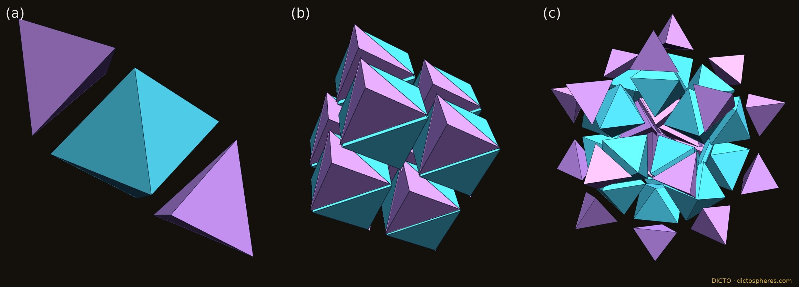
#20 · The FUJI Family. Cleo-Icos and Antonius fill space two to one: each prolate golden rhombohedron cuts into a Cleo-Icos at either sharp tip and Antonius between.DICTO DOI: 10.5281/zenodo.23357896 · Home: The Golden Ladder, Chapter 3A (DICTO DOI: 10.5281/zenodo.23966554)#48 · The Golden Split. Icosaxes and Unborn Axes, the two convex solids cut from the octahedron at the golden point, fill space together.DICTO DOI: 10.5281/zenodo.23596362 · Home: The Golden Ladder, Chapter 3B (DICTO DOI: 10.5281/zenodo.23966554); also DICTONIC Bonds, Chapter 3 (DICTO DOI: 10.5281/zenodo.23898027)#88 · Every Platonic Solid Has Exactly Two Golden Cuts. Of the ten golden truncations, the octahedron's pair, Icosaxes and Unborn Axes, fills space.DICTO DOI: 10.5281/zenodo.23896439 · Home: The Golden Ladder, Chapter 4 (DICTO DOI: 10.5281/zenodo.23966554)#89 · All Five Golden Pairs Are Slices of Four-Dimensional Solids. Cut cubes and small octahedra fill space at every depth of cut; the filling is a section of the rectified tesseractic honeycomb.DICTO DOI: 10.5281/zenodo.23917931 · Home: The Golden Ladder, Chapter 6 (DICTO DOI: 10.5281/zenodo.23966554)
In DICTONIC Bonds
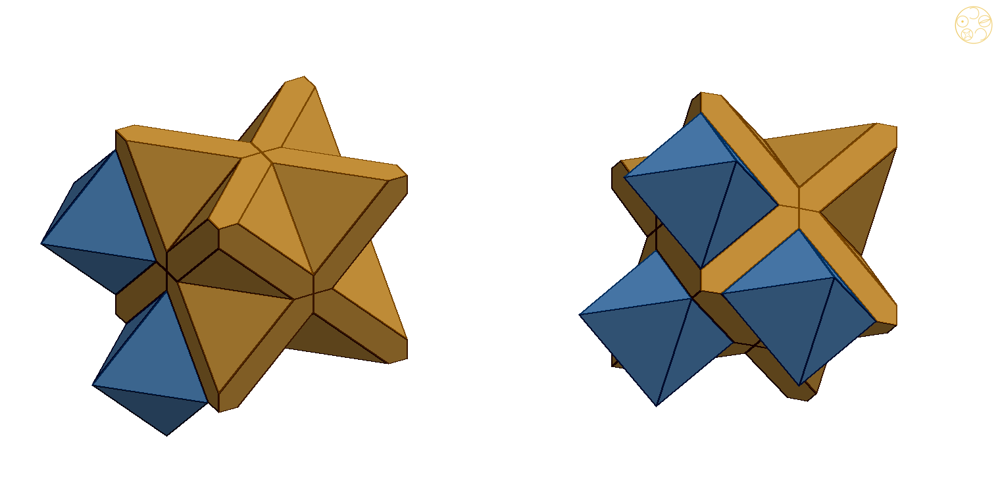
#51 · The Delian Bond. Samsons and Delilahs fill space: the octet cut by one sliding plane, all the way from Kepler's rhombic dodecahedra to cubes.DICTO DOI: 10.5281/zenodo.23606828 · Home: DICTONIC Bonds, Chapter 4 (DICTO DOI: 10.5281/zenodo.23898027)#52, #53 · The Web of Bonds · The Global Web of Bonds. Two kinds of cell fill space as the power diagram of two sets of sites, at every value of one sliding weight; the picture shows two stops, rock salt and A15.DICTO DOI: 10.5281/zenodo.23629252 · 10.5281/zenodo.23631140 · Home: DICTONIC Bonds, Chapters 5 and 6 (DICTO DOI: 10.5281/zenodo.23898027)#55 · David and Goliath. Goliath, the hull of Jessen's icosahedron, and David, a small tetrahedron, fill space together in the A15 weight walk.DICTO DOI: 10.5281/zenodo.23632358 · Home: DICTONIC Bonds, Chapter 7 (DICTO DOI: 10.5281/zenodo.23898027)
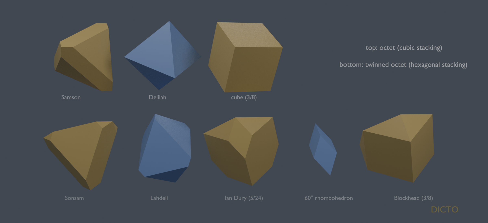
#56 · Sonsam and Lahdeli. The Delian bond on the twinned octet: Sonsam and Lahdeli fill space, then Ian Dury with the 60° rhombohedron, then Blockhead.DICTO DOI: 10.5281/zenodo.23635823 · Home: DICTONIC Bonds, Chapter 8 (DICTO DOI: 10.5281/zenodo.23898027)#57 · The Rule of Halves. Every close-packed stacking is filled by pieces borrowed whole, or in halves, from the cubic and the hexagonal stacking.DICTO DOI: 10.5281/zenodo.23647898 · Home: DICTONIC Bonds, Chapter 11 (DICTO DOI: 10.5281/zenodo.23898027); also HexOct: The Hexagonality Law, Chapter 1 (DICTO DOI: 10.5281/zenodo.23731359)
In HexOct: The Hexagonality Law
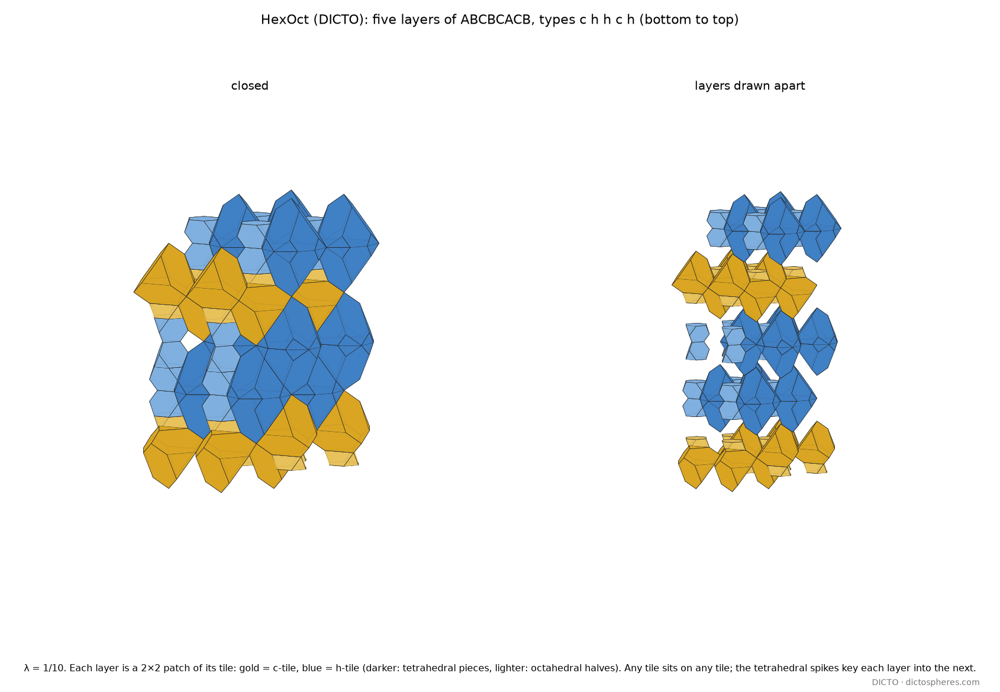
#75 · HexOct: Two Tiles for Every Stacking. Two layer tiles, the c-tile and the h-tile, fill every close-packed stacking.DICTO DOI: 10.5281/zenodo.23737639 · Home: HexOct: The Hexagonality Law, Chapter 14 (DICTO DOI: 10.5281/zenodo.23731359)#86 · The HexOct Family. Five pairs of single solids, A to E, fill every close-packed stacking at every weight.DICTO DOI: 10.5281/zenodo.23896076 · Home: cited in HexOct: The Hexagonality Law, no chapter yet (DICTO DOI: 10.5281/zenodo.23731359)
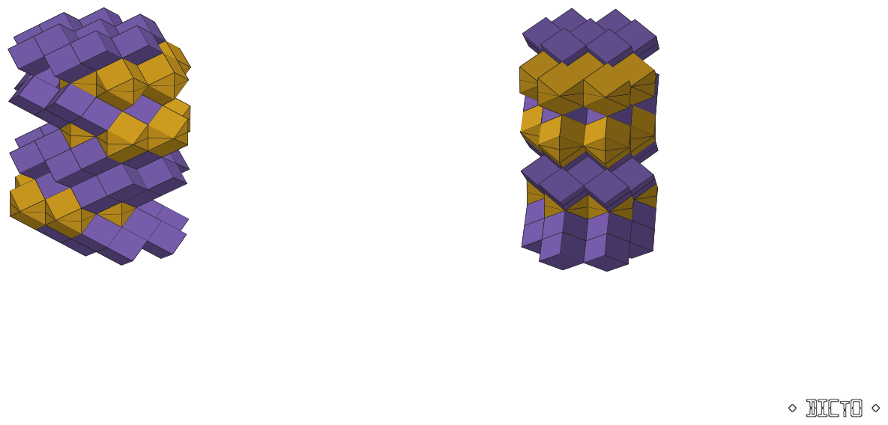
#98 · Narcissus and Covenant. Narcissus fills space alone; two joined and turned 60° make Covenant, a parallelohedron that fills space by the fcc lattice.DICTO DOI: 10.5281/zenodo.24005929 · Home: HexOct: The Hexagonality Law, Chapter 16 (DICTO DOI: 10.5281/zenodo.23731359)
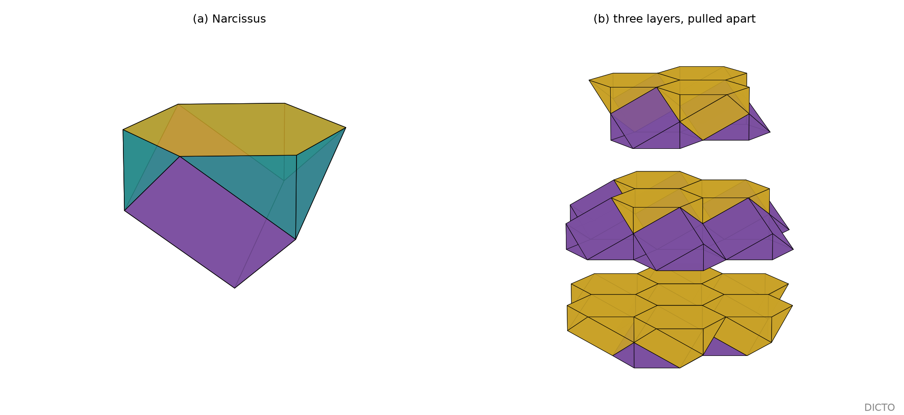
#97 · Narcissus Keyed. Seventeen keyed copies of Narcissus fill space and force a stacking that never repeats.DICTO DOI: 10.5281/zenodo.24005567 · Home: HexOct: The Hexagonality Law, Chapter 17 (DICTO DOI: 10.5281/zenodo.23731359)
In Alicia in Wonderland: The Red & White Queens
#44 · Aristotle's Pyramid. Of the five face pyramids only the cube's, or the tetrahedron's with the octahedron's, fill space.DICTO DOI: 10.5281/zenodo.23529497 · Home: Alicia in Wonderland: The Red & White Queens, Chapter 2 (DICTO DOI: 10.5281/zenodo.23753305)
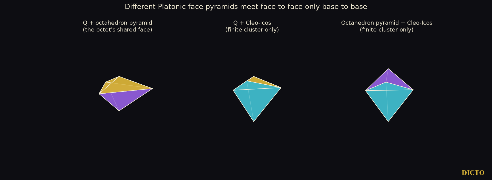
#77 · Face to Face. When face pyramids fill space face to face, the pyramids round every apex make up one whole Platonic solid.DICTO DOI: 10.5281/zenodo.23779962 · Home: Alicia in Wonderland: The Red & White Queens, Chapter 4 (DICTO DOI: 10.5281/zenodo.23753305)#62 · Shadows of the Fourth Dimension. OCT-16, the 16-cell's edge-first shadow (bottom left), fills space alone.DICTO DOI: 10.5281/zenodo.23687223 · Home: Alicia in Wonderland: The Red & White Queens, Chapter 5 (DICTO DOI: 10.5281/zenodo.23753305)
Waiting for the planned Centre Pyramids volume
#92 · Aristotle's Pyramid in Layers. The face-to-face fillings by the octet's pyramids are exactly the close-packed stackings, one free choice per layer.DICTO DOI: 10.5281/zenodo.23931608 · Home: no book chapter yet; cited in HexOct: The Hexagonality Law and The Golden Ladder#93 · One Double Pyramid, Two Splits. The CsCl and Delian pairs fill space in one way only; the rhombic dodecahedron's centre pyramids fill it face to face in uncountably many ways.DICTO DOI: 10.5281/zenodo.23933666 · Home: no book chapter yet; cited in HexOct: The Hexagonality Law
Waiting for the planned volume on the Ogdoecontahedron (OG)
#36 · Golden Bodhi Pyrochlore. The gap of the OG's body-centred packing, 22.57% of space, is filled exactly: 72 convex pieces of three kinds per cell, and golden fills.DICTO DOI: 10.5281/zenodo.23451210 · Home: no book chapter yet#37 · The DICTO Ogdoecontahedron on the Octet Truss. Four exact kits fill the octet round the OG; here the golden-key octet: keyed octahedra and dented tetrahedra, left and right.DICTO DOI: 10.5281/zenodo.23457016 · Home: no book chapter yet#37a · The DICTO Ogdoecontahedron on the Gyrated Octet. One exact kit, the OG with its caps, twin cap, tetrahedron and bipyramid, fills the octet, the gyrated octet and every stacking between.DICTO DOI: 10.5281/zenodo.23484012 · Home: no book chapter yet#40 · The DICTO OG Family on Every Stacking. The OG, the OTT, the OCD Stella and the DBT fill their places on every close-packed stacking; on the Fibonacci stacking the counts are golden.DICTO DOI: 10.5281/zenodo.23490114 · Home: no book chapter yet#95 · Pentagons for the Kites. The cut OG fills the octet with four shapes and a left and right pair; with DICTO's Bull-horns adaptor, two shapes fill space.DICTO DOI: 10.5281/zenodo.23968270 · Home: no book chapter yet#96 · Reading the Voids. The room adaptor fills space with the cut OGs, but its Dehn invariant is nonzero: it can never be cut into golden rhombohedra.DICTO DOI: 10.5281/zenodo.23968272 · Home: no book chapter yet
Waiting for the planned book on the Platonic solids
#8 · The Euclid–Kepler–Pacioli Cell. The EKP cell, a cube with Euclid's dodecahedron and Pacioli's icosahedron, fills space by translation; neighbouring dodecahedra overlap by exactly two roofs.DICTO DOI: 10.5281/zenodo.23284106 · Home: no book chapter yet#99 · Plato's Five in the Octet. The octet fills space, and every one of its cells holds all five Platonic solids nested.DICTO DOI: 10.5281/zenodo.24012439 · Home: no book chapter yet
In this book
#100 · The Dehn Test Picks the Lone Tilers. A tetrahedron with its corners cut fills space when the cuts add up to one edge (every case tested), as the piece with its point inverse, two to a period.DICTO DOI: 10.5281/zenodo.24030326 · Home: this book, Chapters 1 and 2#101 · Held by Shape Alone. Laid in one layer, the Admiral Caps and icosahedra of #47 are held by shape alone; only the face pyramids on the surface lift out.DICTO DOI: 10.5281/zenodo.24030328 · Home: this book, Chapter 10
For solids whose angles are not known in closed form the studies use a numerical screen (studies/2026-11-04-dehn-screen, scripts/dehn.py, version 2). It lists the interior dihedral angles of the input (convex or not, faces ordered), finds the integer relations among the distinct angles and π by PSLQ (coefficients up to 300, tolerance 10−8), reduces to a basis of angles independent modulo ℚπ, and calls the solid Dehn-zero when for every basis angle the weighted sum of edge lengths vanishes. Calibration, 11 of 11 at tolerance 10−8: zero for the cube, the RD, the truncated octahedron, the rhombic triacontahedron and T(4) minus its corners; nonzero for the dodecahedron, icosahedron, tetrahedron, octahedron and Archimedean truncated tetrahedron. At 10−10 the triacontahedron's 4π/5 is missed from its floating-point corners, so the tolerance matters. A first version, which identified edge lengths in ℚ(√2, √5), failed calibration and was replaced. The screen also gives false nonzero values on solids rejoined from halves (phantom seam edges); there additivity decides. Every Dehn statement in this book is proved exactly; the screen served to find them.
B. Exact cover on the octet
Pieces made of whole octet cells are tested by exact cover (studies/2026-11-04-tetra-sweep, scripts/census.py, sat_periodic.py): for a period lattice in Hermite normal form, each cell of the torus must lie in exactly one copy of the piece, in any orientation of the octet's symmetry group. The constraints are written with sequential-counter "exactly one" clauses and solved with CaDiCaL (through PySAT). Calibration: the 60° rhombohedron tiles at index 1 and a lone tetrahedron never; (1, 1, 1, 1) at N = 20 and (1, 1, 0, 0) at N = 2 are found again. A first enumeration of the lattices used wrong off-diagonal ranges (right count, wrong lattices) and missed N = 20; it was fixed before any result here.
C. The kinematic interlocking test
Chapter 10, Section 1. The linear programs fix one coordinate of (v, ω) to ±1 in turn, with all coordinates bounded by 1; a piece is locked when all twelve programs are infeasible, which is equivalent to the only admissible motion being zero. Calibrated positively on the tetrahedron layer of Dyskin et al. and negatively on a layer of cubes.
Sources: H. R. P. Ferguson and D. H. Bailey, PSLQ integer relation algorithm (1992, 1999); A. Biere, CaDiCaL SAT solver; A. Ignatiev, A. Morgado and J. Marques-Silva, PySAT (2018).
Papers referred to
DICTO's papers and books cited in this book, by DICTO DOI. The papers shown in the Atlas are cited on their plates.
DICTO, The DICTO Ogdoecontahedron on the Gyrated Octet, DICTO DOI: 10.5281/zenodo.23484012; The DICTO OG Family on Every Stacking, DICTO DOI: 10.5281/zenodo.23490114; The DICTO Ogdoecontahedron on the Octet Truss, DICTO DOI: 10.5281/zenodo.23457016.
DICTO, The Polyhedral Stretching Theorem, #49, DICTO DOI: 10.5281/zenodo.23566671.
DICTO, Golden on the Octahedron, Silver on the Cube, #90, DICTO DOI: 10.5281/zenodo.23931136.
DICTO, Aristotle's Pyramid in Layers, #92, DICTO DOI: 10.5281/zenodo.23931608.
DICTO, The Silent Golden Station: The Harmonic Fingerprint of the Cube–Octahedron Sweep, #94, DICTO DOI: 10.5281/zenodo.23934349.
DICTO, HexOct: The Hexagonality Law (book), DICTO DOI: 10.5281/zenodo.23731359.
DICTO, The Golden Cycle (book), DICTO DOI: 10.5281/zenodo.23752452.
DICTO, The Golden Ladder: Golden Cuts from Plato to the Eighth Dimension (book), DICTO DOI: 10.5281/zenodo.23966554.
DICTO, The DICTO Concordance, DICTO DOI: 10.5281/zenodo.23934363.
In this book as chapters (the concept record of each, DICTO DOIs): #100 The Dehn Test Picks the Lone Tilers, DICTO DOI: 10.5281/zenodo.24030326 (Chapters 1 and 2; version 2 of 10 November 2026 changes no result); #50 One Move Each, DICTO DOI: 10.5281/zenodo.23606894 (Ch. 3); #25 DICTO Spheroid-13 RD, DICTO DOI: 10.5281/zenodo.23332821, and #26 DICTO ATOM-13×13, DICTO DOI: 10.5281/zenodo.23333183 (Ch. 4); #41 The DICTO Jewel, DICTO DOI: 10.5281/zenodo.23496353 (Ch. 5); #42 The DICTO Sunstar, DICTO DOI: 10.5281/zenodo.23497702 (Ch. 6); #17 Kagome Hulls, DICTO DOI: 10.5281/zenodo.23376317, and #18 The DICTO Hexa, DICTO DOI: 10.5281/zenodo.23376320 (Ch. 7); #47 Every Mix of the Platonic Solids Fills Space, DICTO DOI: 10.5281/zenodo.23551326 (Ch. 8, version 3); #101 Held by Shape Alone, DICTO DOI: 10.5281/zenodo.24030328 (Ch. 10).
References
M. Dehn, Über den Rauminhalt, Math. Ann. 55 (1901) 465–478.
J.-P. Sydler, Conditions nécessaires et suffisantes pour l'équivalence des polyèdres de l'espace euclidien à trois dimensions, Comment. Math. Helv. 40 (1965) 43–80.
H. E. Debrunner, Über Zerlegungsgleichheit von Pflasterpolyedern mit Würfeln, Arch. Math. 35 (1980) 583–587.
J. H. Conway, C. Radin, L. Sadun, On angles whose squared trigonometric functions are rational, Discrete Comput. Geom. 22 (1999) 321–332.
P. F. Damasceno, M. Engel, S. C. Glotzer, Crystalline assemblies and densest packings of a family of truncated tetrahedra and the role of directional entropic forces, ACS Nano 6 (2012) 609–614.
R. Gabbrielli, Y. Jiao, S. Torquato, Families of tessellations of space by elementary polyhedra via retessellations of face-centered-cubic and related tilings, Phys. Rev. E 86 (2012) 041141.
J. C. Lagarias, C. Zong, Mysteries in packing regular tetrahedra, Notices Amer. Math. Soc. 59 (2012) 1540–1549.
A. V. Dyskin, Y. Estrin, A. J. Kanel-Belov, E. Pasternak, A new concept in design of materials and structures: assemblies of interlocked tetrahedron-shaped elements, Scripta Materialia 44 (2001) 2689–2694.
A. V. Dyskin, Y. Estrin, A. J. Kanel-Belov, E. Pasternak, Topological interlocking of platonic solids: a way to new materials and structures, Phil. Mag. Lett. 83 (2003) 197–203.
R. Akpanya, T. Goertzen, A. C. Niemeyer, Topologically interlocking blocks inside the tetroctahedrille, arXiv:2405.01944 (2024).
L. Pacioli, Divina proportione, Venice (1509).
W. Thomson (Lord Kelvin), On the division of space with minimum partitional area, Phil. Mag. 24 (1887) 503–514.
E. S. Fedorov, Nachala ucheniya o figurah (Elements of the Theory of Figures), Zap. Imp. S.-Peterb. Mineral. Obshch., 2nd ser., 24 (1885) 1–279.
B. Grünbaum, The Bilinski dodecahedron, and assorted parallelohedra, zonohedra, monohedra, isozonohedra and otherhedra, Math. Intelligencer 32(4) (2010) 5–15, doi:10.1007/s00283-010-9138-7.
S. Bilinski, Über die Rhombenisoeder, Glasnik Mat.-Fiz. Astr. 15 (1960) 251–263 (not read; cited through Grünbaum).
A. Garber, Voronoi conjecture for five-dimensional parallelohedra (2019), arXiv:1906.05193.
B. N. Delone, Sur la partition régulière de l'espace à 4 dimensions, Izv. Akad. Nauk SSSR (1929) 79–110, 147–164 (not read; cited through Garber).
P. McMullen, Convex bodies which tile space by translation, Mathematika 27 (1980) 113–121 (not read; cited through Garber).
I. Hafner, T. Zitko, Rhombic polyhedra: from dissection of the cube to space filling with prolate rhombohedra and rhombic dodecahedra of the second kind, Visual Mathematics 4(2) (2002).
M. Senechal, Donald and the golden rhombohedra, talk slides, The Coxeter Legacy, Fields Institute (2004).
Wikipedia contributors, Elongated dodecahedron; Rhombic dodecahedron (accessed 23 October 2026).
E. C. Bain, The nature of martensite, Trans. AIME 70 (1924) 25–46.
N. O. Koca, M. Koca, A. Al-Mukhaini, A. Al-Qanobi, Quaternionic representations of the pyritohedral group, related polyhedra and lattices (2015), arXiv:1506.04600.
H. Lalvani, Building structures based on polygonal members and icosahedral symmetry, US Patent 4,723,382 (1988); US Patent 5,623,790 (1997).
P. J. Pearce, Minimum inventory maximum diversity building system, US Patent 3,974,600 (1976).
S. W. Golomb, L. R. Welch, Perfect codes in the Lee metric and the packing of polyominoes, SIAM J. Appl. Math. 18 (1970) 302–317.
T. Etzion, Product constructions for perfect Lee codes, IEEE Trans. Inf. Theory (2011), arXiv:1103.3933.
A. Campello, G. C. Jorge, J. E. Strapasson, S. I. R. Costa, Perfect codes in the lp metric, European J. Combin. (2016), arXiv:1506.02517.
S. Gravier, M. Mollard, C. Payan, On the non-existence of 3-dimensional tiling in the Lee metric, European J. Combin. 19 (1998) 567–572.
M. Kovačević, V. Y. F. Tan, Codes in the space of multisets: coding for permutation channels with impairments, IEEE Trans. Inf. Theory 64 (2018) 5156–5169.
M. Kovačević, An isodiametric theorem and lattice diameter-perfect codes in A₃ (2026), arXiv:2607.21037.
J. Singer, A theorem in finite projective geometry and some applications to number theory, Trans. Amer. Math. Soc. 43 (1938) 377–385.
I. J. Dejter, L. R. Fuentes, C. A. Araujo, Perfect truncated-metric codes in lattice graphs and superlattice graphs, J. Combin. Math. Combin. Comput. 126 (2025) 247–261.
K. Schütte, B. L. van der Waerden, Das Problem der dreizehn Kugeln, Math. Ann. 125 (1952) 325–334.
F. C. Frank, Supercooling of liquids, Proc. R. Soc. Lond. A 215 (1952) 43–46.
A. L. Mackay, A dense non-crystallographic packing of equal spheres, Acta Cryst. 15 (1962) 916–918.
R. W. Gray, More Icosahedron Scaling and Packing; More Dodecahedron Scaling and Packing (2002).
S. Kabai, clusters of rhombic triacontahedra and hexecontahedra, Wolfram Demonstrations Project.
Euclid, The Thirteen Books of the Elements, tr. T. L. Heath, vol. III (Books X–XIII), Cambridge (1908), Book XIII, Proposition 17.
J. Kepler, Harmonices mundi libri V, Linz (1619), Book II.
R. Penrose, Pentaplexity: a class of non-periodic tilings of the plane, Mathematical Intelligencer 2 (1979) 32–37.
W. L. Bragg, The structure of some crystals as indicated by their diffraction of X-rays, Proc. R. Soc. Lond. A 89 (1913) 248–277.
G. W. Hart, Tetrahedral stellations of the dodecahedron (1996), https://www.georgehart.com/virtual-polyhedra/stellations-dodecahedron-tetrahedral.html (stellation 8; it lists J. Ounsted, An unfamiliar dodecahedron; B. Grünbaum and G. C. Shephard, Duality of polyhedra; B. M. Stewart, Adventures among the Toroids, p. 255).
H. Walser, Semi-regular figures: between beauty and regularity (talk script, 27 June 2017), https://walser-h-m.ch/hans/Vortraege/20170627/script.htm.
U. Betke, M. Henk, Densest lattice packings of 3-polytopes, Computational Geometry 16 (2000) 157–186.
S. Torquato, Y. Jiao, Dense packings of the Platonic and Archimedean solids, Nature 460 (2009) 876–879.
H. S. M. Coxeter, Regular Polytopes, 3rd ed., Dover, New York (1973).
M. Baake, A guide to mathematical quasicrystals, arXiv:math-ph/9901014 (1999).
R. B. Fuller, Octet truss, US Patent 2,986,241 (1961).
J.-F. Sadoc, R. Mosseri, Geometrical Frustration, Cambridge University Press (1999).
Corner-coalesced cube nets in framework chemistry, Molecules 24(7) (2019) 1221.
J. H. Conway, Y. Jiao, S. Torquato, New family of tilings of three-dimensional Euclidean space by tetrahedra and octahedra, Proc. Natl. Acad. Sci. USA 108 (2011) 11009–11012.
About the author
DICTO is an artist in Osaka, Japan. His background is architectural sculpture, stonecarving and Buddhist statuary. He trained as an architectural stonecarver at the City and Guilds of London Art School (1998–2001), worked at St James's Palace, and recarved the Roman lettering of the Civil Service Rifles War Memorial at Somerset House, London, for its rededication in 2002. Since 2009 he has worked in Japan in the sculpture and restoration of Buddhist statues. Under the master carver Hōju Hase he helped restore an ancient wooden statue attributed to Kōbō Daishi (Kūkai), and his name is recorded beneath it among the Buddhist sculptors who carried out the work.
He builds geometric sculpture from recycled PET bottles with two modular systems of his own, B1NR and DICTOspheres, joined without glue. He holds six Japanese design registrations; five rest on spherical projections of the Platonic solids, the five forms behind his name: Dodecahedron, Icosahedron, Cube, Tetrahedron, Octahedron. His sculptures have been shown in Kyoto at the Kyoto Municipal Museum of Art (Interdependent Origination III, 2025), the Insho Domoto Museum of Fine Arts, the Kyoto Botanical Garden, the Kansho Exhibition and the Kyoto Takasegawa Art Festival.
The geometry behind the sculptures led to the papers gathered in DICTO: Collected Geometric Works and to the books HexOct: The Hexagonality Law, The Golden Cycle, Star Cores, Alicia in Wonderland: The Red & White Queens, Quanta of Space: A Manifesto, The DICTOnary of Atoms: Quanta of Space II, DICTONIC Bonds, The Golden Ladder, and this one (all 2026). Every paper and book is published openly with its own DICTO DOI at Zenodo. More at https://dictospheres.com.
The Five Orders of Space
One work by DICTO in eleven books and twelve volumes, in five rings
The work is built after two models, credited as models. From Miyamoto Musashi’s Go Rin no Sho, The Book of Five Rings (五輪書, about 1645), it takes its five rings, Earth, Water, Fire, Wind and the Void. In paraphrase, not quoted from any translation: for Musashi, Earth lays out the way, Water is form and technique, Fire is the encounter, Wind is the knowledge of other schools, and the Void is what lies beyond. From Euclid’s Elements (about 300 BC) it takes its build: the Definitions are the DICTOnary (Book One, II: The DICTOnary of Atoms), the Postulates are Quanta of Space I (Book One, I: the manifesto), and the Propositions, with their proofs, are Books Two to Eleven. Each ring is one of the five Platonic solids, in its element’s colour.
The rings
ring
element
solid
colour
books
Earth
地
earth
Cube
green
Book One. Quanta of Space I and II (The DICTOnary of Atoms) Book Two. Space-Fillers and Lattice Moves
Water
水
water
Icosahedron
blue
Book Three. DICTONIC Bonds Book Four. The Golden Cycle Book Five. Star Cores
Fire
火
fire
Tetrahedron
red
Book Six. HexOct: The Hexagonality Law Book Seven. The Permutohedron Paradigm
Wind
風
air
Octahedron
yellow
Book Eight. The Platonic Solids
Void
空
aether
Dodecahedron
violet
Book Nine. The Golden Ladder Book Ten. Alicia in Wonderland: The Red & White Queens Book Eleven. A Brief Geometry of Space
Opening
About 1645 the swordsman Miyamoto Musashi set down his way in five books: Earth, Water, Fire, Wind and the Void. Nineteen centuries before him Euclid had set down geometry as definitions, postulates and propositions, and ended by building the five regular solids and proving that there are no more. This work borrows from both. Its five rings are the five solids of DICTO’s name, each in its element’s colour: the cube for Earth, the icosahedron for Water, the tetrahedron for Fire, the octahedron for Wind, the dodecahedron for the Void. Earth lays out the pieces of space. Water follows them as they flow into one another. Fire is the meeting: two neighbours change places, and a cell of living skin is carried into four dimensions. Wind goes back to the old schools and their five solids. The Void goes beyond them, and comes home. One question runs through all five: what stays in place when the parts of space change places?
For a newcomer
One book from each ring, then the rest, with the DICTOnary at hand throughout:
Book One, Quanta of Space I, the essay (Earth)
Book Two, Space-Fillers and Lattice Moves (Earth)
Book Six, HexOct: The Hexagonality Law (Fire)
Book Seven, The Permutohedron Paradigm (Fire)
Book Eight, The Platonic Solids (Wind)
Book Eleven, A Brief Geometry of Space (Void)
A reader who knows the five solids may start at Book Eight. The Water books and Books Nine and Ten are taken when the main road points to them. The full order is the numbering.
Models: Miyamoto Musashi, Go Rin no Sho (The Book of Five Rings, 五輪書, about 1645); Euclid, Elements (about 300 BC), Book XIII for the five solids. Element colours as in DICTO’s square.